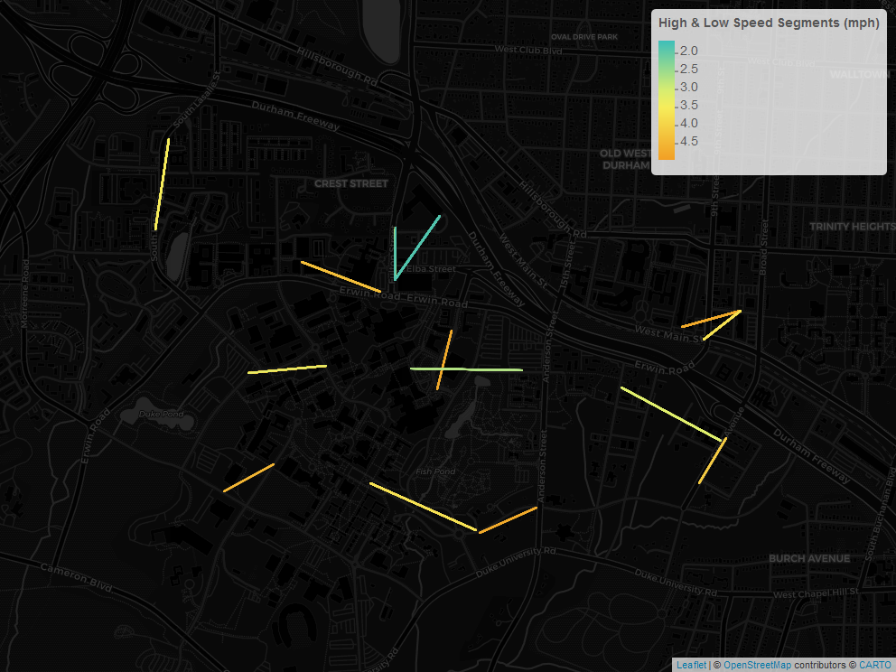
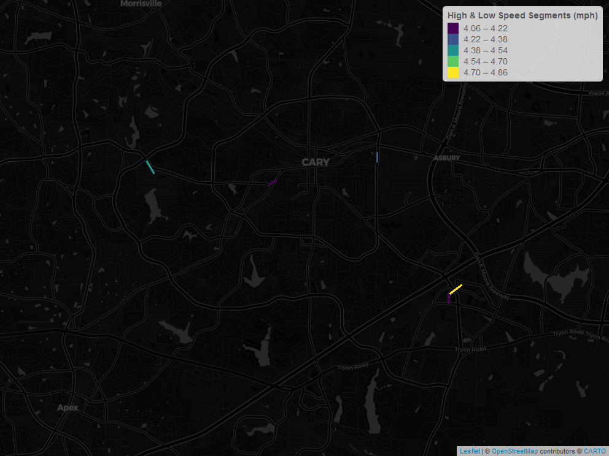
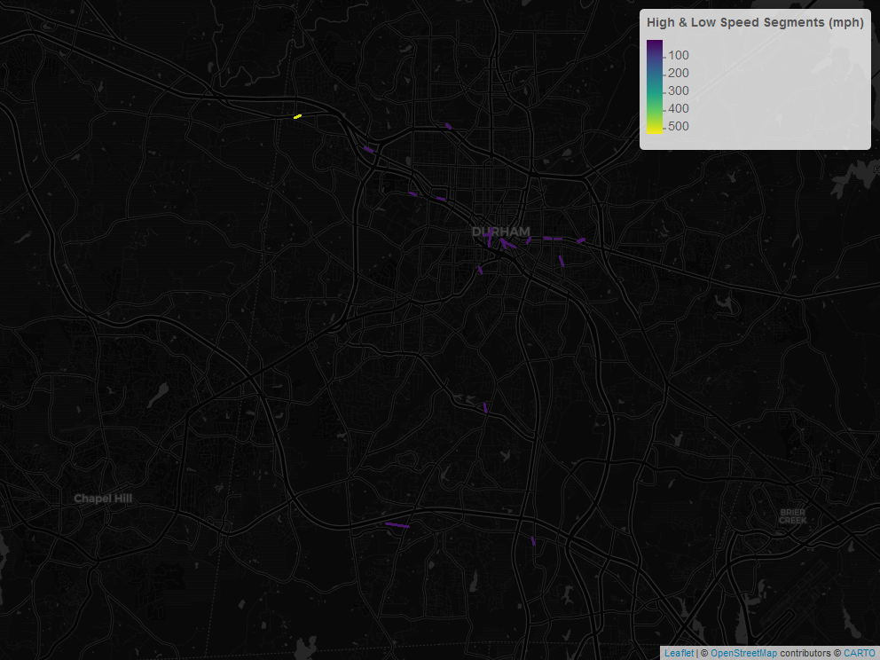
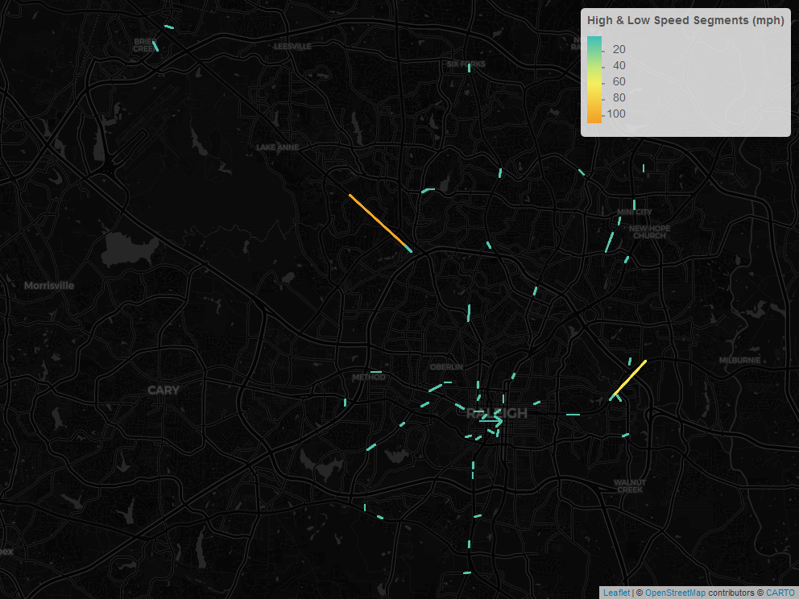
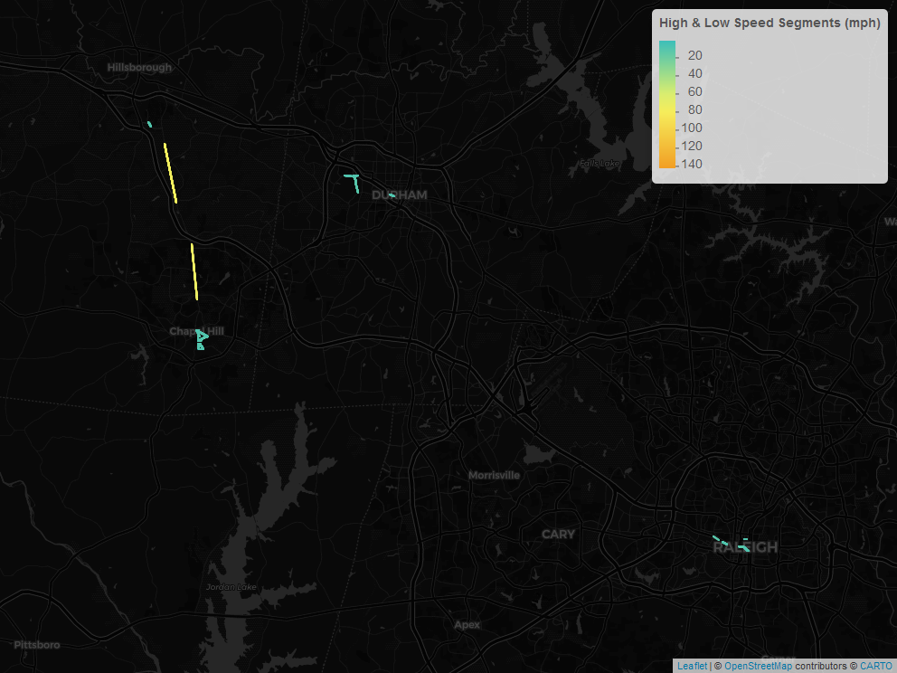
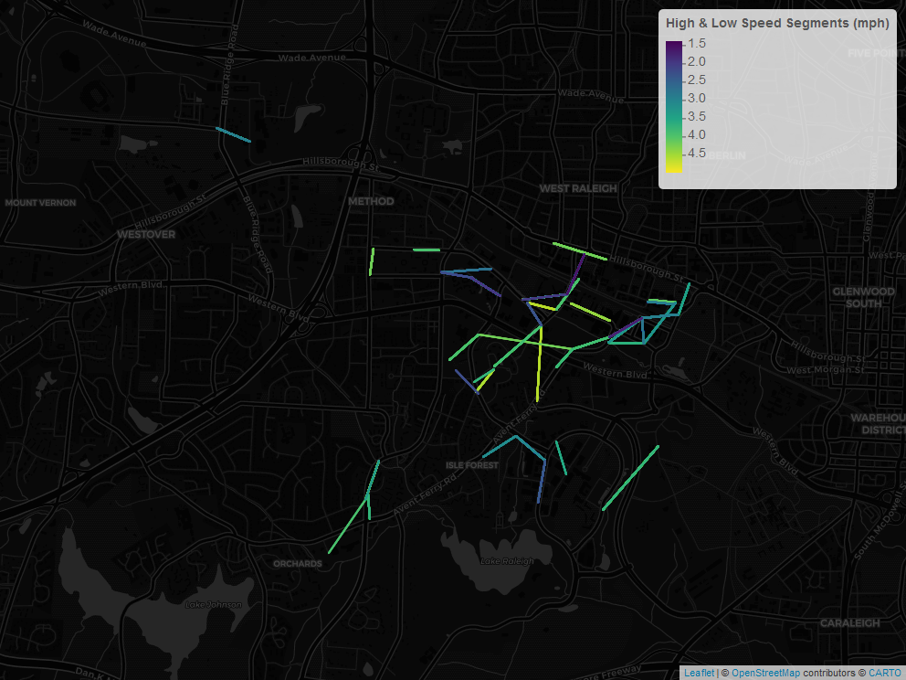

Service Speed Analysis
The service speed analysis findings reported on this page report unusually high and low transit speeds between stop-to-stop pairs. Transit times are calculated based on all stop-to-stop pairs in the schedule. Distance is computed based on straight-line distance between stop pairs Therefore, speeds reported here can be viewed as the minimum speed necessary to complete the segment. The purose of these tests is to identify potentially unrealistic scheduling times that would impact a transit analysis.
Chapel Hill Transit GTFS Feed
High and Low Speed Links

Miles per Route of Segments with >60mph Speed
| route_long_name | miles_over_60 |
|---|---|
| Colony Woods - Franklin Street - McDougle School | 7.05 |
| MLK Jr Boulevard-UNC Hospitals | 6.80 |
| Eubanks Road-Southern Village | 4.72 |
| Carrboro-Merritt Mill Road-Family Medicine | 2.99 |
| Carrboro-Downtown Chapel Hill-Jones Ferry Road | 2.42 |
| Colony Lake - Sage Rd - UNC Hospitals | 2.35 |
| Culbreth Road - Franklin Street - Eastowne | 2.34 |
| Carrboro - Weaver Street | 2.29 |
| Booker Creek-University Place-UNC Hospitals | 2.25 |
| Franklin Street-Finley Forest-Meadowmont | 1.74 |
| Estes Park-UNC Hospitals-Jones Ferry Road | 1.50 |
| Southern Village - Meadowmont | 1.46 |
| Franklin Street-Carrboro-Rock Haven Road | 1.29 |
| Franklin Street-MLK Jr Boulevard-Timberlyne | 1.29 |
| MLK Jr Blvd - Northside | 0.94 |
| Greenbridge - University Place - Eastowne | 0.92 |
| Jones Ferry Road Express | 0.89 |
| RR Lot-UNC Hospitals | 0.72 |
| Morris Grove Elementary-Chapel Hill High-Rogers Rd | 0.70 |
| Franklin St-University Place-Colony Woods | 0.69 |
| Southern Village-Meadowmont | 0.47 |
| Campus Reverse Shuttle-Law School | 0.43 |
| Friday Center Express | 0.30 |
| South Campus-NC 54 Park-&-Ride | 0.30 |
| Chatham County Express | 0.28 |
| Estes Park-UNC Hospitals-Family Medicine | 0.26 |
| UNC Hospitals-Botanical Garden-54 Park and Ride-Hendrick Building | 0.20 |
| Baity Hill - UNC Hospitals - Fetzer Gym | 0.14 |
Miles per Route of Segments with <5mph Speed
| route_long_name | miles_under_5 |
|---|---|
| Eubanks Road-Southern Village | 1.33 |
| Colony Woods - Franklin Street - McDougle School | 1.24 |
| MLK Jr Blvd - Northside | 0.94 |
| Carrboro-Downtown Chapel Hill-Jones Ferry Road | 0.87 |
| Chatham County Express | 0.81 |
| Southern Village-Meadowmont | 0.80 |
| MLK Jr Boulevard-UNC Hospitals | 0.79 |
| Booker Creek-University Place-UNC Hospitals | 0.68 |
| RR Lot-UNC Hospitals | 0.63 |
| Colony Lake - Sage Rd - UNC Hospitals | 0.61 |
| Culbreth Road - Franklin Street - Eastowne | 0.61 |
| Southern Village - Meadowmont | 0.50 |
| Carrboro-Merritt Mill Road-Family Medicine | 0.46 |
| UNC Campus Shuttle-Downtown | 0.44 |
| Campus Reverse Shuttle-Law School | 0.36 |
| Baity Hill - UNC Hospitals - Fetzer Gym | 0.32 |
| Estes Park-UNC Hospitals-Jones Ferry Road | 0.31 |
| Estes Park-UNC Hospitals-Family Medicine | 0.16 |
| Carrboro Plaza Express | 0.15 |
| Jones Ferry Road Express | 0.15 |
| Carrboro - Weaver Street | 0.14 |
| South Campus-NC 54 Park-&-Ride | 0.14 |
| Franklin St-University Place-Colony Woods | 0.13 |
All Stop-to-Stop Segments with High and Low Speeds
| from_stop_name | to_stop_name | route_id | route_long_name | max_mph | max_distance_miles | trips |
|---|---|---|---|---|---|---|
| Airport Dr at Martin Luther King Jr Blvd (WB) | Airport Dr at Estes Dr Ext (NB) | 1743 | RR Lot-UNC Hospitals | Inf | 0.20 | 16 |
| Banks Dr at Weaver Dairy Rd (NB) | Weaver Dairy Rd at Kingston Rd (Timberlyne Shopping Center) | 1750 | MLK Jr Boulevard-UNC Hospitals | Inf | 0.14 | 76 |
| Barclay Rd at Justice St (WB) | Barclay Rd at Williams Circle (WB) | 1751 | MLK Jr Boulevard-UNC Hospitals | Inf | 0.13 | 40 |
| Barclay Rd at Williams Circle (EB) | Barclay Rd at Justice St (EB) | 1751 | MLK Jr Boulevard-UNC Hospitals | Inf | 0.13 | 16 |
| Barclay Rd at Wyrick St | Barclay Rd at Hartig St | 1751 | MLK Jr Boulevard-UNC Hospitals | Inf | 0.16 | 40 |
| Bowles Dr at Manning Lot (WB) | Bowles Dr at Smith Center (WB) | 1726 | Carrboro-Merritt Mill Road-Family Medicine | Inf | 0.13 | 60 |
| Bowles Dr at Manning Lot (WB) | Bowles Dr at Smith Center (WB) | 1745 | Campus Reverse Shuttle-Law School | Inf | 0.13 | 264 |
| BPW Club Rd at 180 West Apts | Tar Hill Dr at BPW Club Rd | 1738 | Carrboro-Downtown Chapel Hill-Jones Ferry Road | Inf | 0.16 | 25 |
| BPW Club Rd at Orchard Ln | BPW Club Rd at Sterling Bluff | 1738 | Carrboro-Downtown Chapel Hill-Jones Ferry Road | Inf | 0.13 | 25 |
| BPW Club Rd at Tennis Courts | BPW Club Rd at The Villages | 1738 | Carrboro-Downtown Chapel Hill-Jones Ferry Road | Inf | 0.16 | 84 |
| BPW Club Rd at Tennis Courts | BPW Club Rd at The Villages | 1748 | Franklin Street-Carrboro-Rock Haven Road | Inf | 0.16 | 10 |
| BPW Club Rd at The Villages | BPW Club Rd at Smith Level Rd | 1740 | Estes Park-UNC Hospitals-Jones Ferry Road | Inf | 0.14 | 36 |
| BPW Club Rd at The Villages | BPW Club Rd at Smith Level Rd | 1748 | Franklin Street-Carrboro-Rock Haven Road | Inf | 0.14 | 10 |
| Brandon Rd at Hamilton Rd (EB) | Hamilton Rd at Maxwell Rd (SB 1) | 1735 | Booker Creek-University Place-UNC Hospitals | Inf | 0.13 | 67 |
| Brandon Rd at Hamilton Rd (WB) | Brandon Rd at Hayes Rd (WB) | 1734 | Franklin St-University Place-Colony Woods | Inf | 0.14 | 36 |
| Brandon Rd at Hamilton Rd (WB) | Brandon Rd at Hayes Rd (WB) | 1735 | Booker Creek-University Place-UNC Hospitals | Inf | 0.14 | 63 |
| Cameron Ave at Cameron Glen | Cameron Ave at Wilson St | 1726 | Carrboro-Merritt Mill Road-Family Medicine | Inf | 0.21 | 60 |
| Cameron Ave at Merritt Mill Rd | Merritt Mill Rd at Locust Ct | 1726 | Carrboro-Merritt Mill Road-Family Medicine | Inf | 0.18 | 136 |
| Carol St at James St (west) | Carol St at James St (east) | 1732 | Colony Woods - Franklin Street - McDougle School | Inf | 0.13 | 55 |
| Carol St at Lisa St | Carol St at James St (west) | 1732 | Colony Woods - Franklin Street - McDougle School | Inf | 0.18 | 8 |
| Carol Woods | Weaver Dairy Rd at Steeplechase Rd | 1750 | MLK Jr Boulevard-UNC Hospitals | Inf | 0.27 | 48 |
| Carol Woods | Weaver Dairy Rd at Steeplechase Rd | 1751 | MLK Jr Boulevard-UNC Hospitals | Inf | 0.27 | 16 |
| Carrboro High School (NB) | Tar Hill Dr at Rock Haven Rd (NB) | 1740 | Estes Park-UNC Hospitals-Jones Ferry Road | Inf | 0.14 | 36 |
| Carrboro High School (NB) | Tar Hill Dr at Rock Haven Rd (NB) | 1748 | Franklin Street-Carrboro-Rock Haven Road | Inf | 0.14 | 10 |
| Coleridge Dr at Presque Isle Ln | Coleridge Dr at Sage Rd (Sagebrook Apts) | 1729 | Culbreth Road - Franklin Street - Eastowne | Inf | 0.18 | 168 |
| Coleridge Dr at Presque Isle Ln | Coleridge Dr at Sage Rd (Sagebrook Apts) | 1730 | Greenbridge - University Place - Eastowne | Inf | 0.18 | 40 |
| Colony Woods Dr at White Plains Rd | Colony Woods Dr at Overland Dr | 1732 | Colony Woods - Franklin Street - McDougle School | Inf | 0.19 | 4 |
| Curtis Rd at S Lakeshore Dr | Curtis Rd at Lyons Rd | 1735 | Booker Creek-University Place-UNC Hospitals | Inf | 0.13 | 63 |
| Davie Rd at Bert St | Davie Rd at Jones Ferry Rd (BP Station) | 1728 | Carrboro - Weaver Street | Inf | 0.17 | 144 |
| Davie Rd at Fidelity Ct | Davie Rd at Bert St | 1728 | Carrboro - Weaver Street | Inf | 0.13 | 4 |
| Davie Rd at Jones Ferry Rd (BP Station) | Davie Rd at Bert St | 1728 | Carrboro - Weaver Street | Inf | 0.17 | 140 |
| Dobbins Dr at Foxcroft Dr | Dobbins Dr at Franklin Square | 1725 | Colony Lake - Sage Rd - UNC Hospitals | Inf | 0.20 | 12 |
| Dobbins Dr at Summerfield Crossing | Summerfield Crossing Rd at Mossbark Ln | 1725 | Colony Lake - Sage Rd - UNC Hospitals | Inf | 0.16 | 12 |
| E Cameron Ave at S Columbia St (Swain Hall) | Pittsboro St at McCauley St (Newman Center) | 1745 | Campus Reverse Shuttle-Law School | Inf | 0.17 | 264 |
| E Franklin St at Carolina Ave | E Franklin St at N Boundary St (WB) | 1732 | Colony Woods - Franklin Street - McDougle School | Inf | 0.39 | 6 |
| E Franklin St at Carolina Coffee Shop | E Franklin St at Morehead Planetarium (EB) | 1725 | Colony Lake - Sage Rd - UNC Hospitals | Inf | 0.20 | 20 |
| E Franklin St at Carolina Coffee Shop | E Franklin St at Morehead Planetarium (EB) | 1729 | Culbreth Road - Franklin Street - Eastowne | Inf | 0.20 | 148 |
| E Franklin St at Couch Rd (EB) | E Franklin St at Elliott Rd (EB) | 1732 | Colony Woods - Franklin Street - McDougle School | Inf | 0.21 | 8 |
| E Franklin St at Davie Cir | E Franklin St at Howell Ln (EB) | 1732 | Colony Woods - Franklin Street - McDougle School | Inf | 0.28 | 8 |
| E Franklin St at Elizabeth St (EB) | E Franklin St at Plant Rd (EB) | 1729 | Culbreth Road - Franklin Street - Eastowne | Inf | 0.21 | 8 |
| E Franklin St at Elizabeth St (EB) | E Franklin St at Plant Rd (EB) | 1732 | Colony Woods - Franklin Street - McDougle School | Inf | 0.21 | 8 |
| E Franklin St at Estes Dr (Caribou Coffee) | E Franklin St at #1512 | 1725 | Colony Lake - Sage Rd - UNC Hospitals | Inf | 0.18 | 20 |
| E Franklin St at Estes Dr (Caribou Coffee) | E Franklin St at #1512 | 1729 | Culbreth Road - Franklin Street - Eastowne | Inf | 0.18 | 8 |
| E Franklin St at Estes Dr (Caribou Coffee) | E Franklin St at #1512 | 1732 | Colony Woods - Franklin Street - McDougle School | Inf | 0.18 | 8 |
| E Franklin St at Estes Dr (WB) | E Franklin St at Plant Rd (Valley View Center) | 1725 | Colony Lake - Sage Rd - UNC Hospitals | Inf | 0.15 | 12 |
| E Franklin St at Estes Dr (WB) | E Franklin St at Plant Rd (Valley View Center) | 1729 | Culbreth Road - Franklin Street - Eastowne | Inf | 0.15 | 168 |
| E Franklin St at Estes Dr (WB) | E Franklin St at Plant Rd (Valley View Center) | 1730 | Greenbridge - University Place - Eastowne | Inf | 0.15 | 40 |
| E Franklin St at Estes Dr (WB) | E Franklin St at Plant Rd (Valley View Center) | 1732 | Colony Woods - Franklin Street - McDougle School | Inf | 0.15 | 4 |
| E Franklin St at Henderson St | E Franklin St at Varsity Theatre | 1732 | Colony Woods - Franklin Street - McDougle School | Inf | 0.13 | 46 |
| E Franklin St at Howell Ln (EB) | E Franklin St at Elizabeth St (EB) | 1725 | Colony Lake - Sage Rd - UNC Hospitals | Inf | 0.16 | 8 |
| E Franklin St at Howell Ln (EB) | E Franklin St at Elizabeth St (EB) | 1729 | Culbreth Road - Franklin Street - Eastowne | Inf | 0.16 | 180 |
| E Franklin St at Howell Ln (EB) | E Franklin St at Elizabeth St (EB) | 1732 | Colony Woods - Franklin Street - McDougle School | Inf | 0.16 | 4 |
| E Franklin St at Howell Ln (WB) | E Franklin St at Carolina Ave | 1732 | Colony Woods - Franklin Street - McDougle School | Inf | 0.31 | 46 |
| E Franklin St at Morehead Planetarium (EB) | E Franklin St at Raleigh St | 1729 | Culbreth Road - Franklin Street - Eastowne | Inf | 0.14 | 32 |
| E Franklin St at Morehead Planetarium (EB) | E Franklin St at Raleigh St | 1730 | Greenbridge - University Place - Eastowne | Inf | 0.14 | 40 |
| E Franklin St at Morehead Planetarium (EB) | E Franklin St at Raleigh St | 1732 | Colony Woods - Franklin Street - McDougle School | Inf | 0.14 | 63 |
| E Franklin St at N Boundary St (WB) | E Franklin St at Hillsborough St | 1725 | Colony Lake - Sage Rd - UNC Hospitals | Inf | 0.14 | 4 |
| E Franklin St at N Boundary St (WB) | E Franklin St at Hillsborough St | 1732 | Colony Woods - Franklin Street - McDougle School | Inf | 0.14 | 8 |
| E Franklin St at Park Pl | E Franklin St at Davie Cir | 1729 | Culbreth Road - Franklin Street - Eastowne | Inf | 0.25 | 48 |
| E Franklin St at Plant Rd (EB) | E Franklin St at Estes Dr (Caribou Coffee) | 1729 | Culbreth Road - Franklin Street - Eastowne | Inf | 0.15 | 40 |
| E Franklin St at Plant Rd (Valley View Center) | E Franklin St at Elizabeth St (WB) | 1725 | Colony Lake - Sage Rd - UNC Hospitals | Inf | 0.22 | 8 |
| E Franklin St at Plant Rd (Valley View Center) | E Franklin St at Elizabeth St (WB) | 1732 | Colony Woods - Franklin Street - McDougle School | Inf | 0.22 | 6 |
| E Franklin St at Raleigh St | E Franklin St at S Boundary St (EB) | 1725 | Colony Lake - Sage Rd - UNC Hospitals | Inf | 0.15 | 8 |
| E Franklin St at Raleigh St | E Franklin St at S Boundary St (EB) | 1729 | Culbreth Road - Franklin Street - Eastowne | Inf | 0.15 | 148 |
| E Franklin St at Raleigh St | E Franklin St at S Boundary St (EB) | 1732 | Colony Woods - Franklin Street - McDougle School | Inf | 0.15 | 4 |
| E Franklin St at S Boundary St (EB) | E Franklin St at Park Pl | 1729 | Culbreth Road - Franklin Street - Eastowne | Inf | 0.13 | 32 |
| E Franklin St at S Boundary St (EB) | E Franklin St at Park Pl | 1732 | Colony Woods - Franklin Street - McDougle School | Inf | 0.13 | 63 |
| E Franklin St at Varsity Theatre | S Columbia St at Frat Ct | 1725 | Colony Lake - Sage Rd - UNC Hospitals | Inf | 0.13 | 12 |
| E Main St at Jade Palace | W Main St at Inter-Faith Council | 1738 | Carrboro-Downtown Chapel Hill-Jones Ferry Road | Inf | 0.13 | 210 |
| E Main St at Lloyd St | E Main St at Jade Palace | 1738 | Carrboro-Downtown Chapel Hill-Jones Ferry Road | Inf | 0.18 | 26 |
| E Main St at Lloyd St | E Main St at Jade Palace | 1748 | Franklin Street-Carrboro-Rock Haven Road | Inf | 0.18 | 10 |
| Elliott Rd at Burger King | Ephesus Church Rd at Legion Rd (University Inn) | 1732 | Colony Woods - Franklin Street - McDougle School | Inf | 0.27 | 43 |
| Elliott Rd at Fordham Blvd (WB) | Elliott Rd at Whole Foods Market | 1732 | Colony Woods - Franklin Street - McDougle School | Inf | 0.21 | 48 |
| Elliott Rd at Plaza Theatres | Elliott Rd at Burger King | 1729 | Culbreth Road - Franklin Street - Eastowne | Inf | 0.16 | 72 |
| Ephesus Church Rd at Eden Ln | Ephesus Church Rd at Tinkerbell Rd (EB) | 1732 | Colony Woods - Franklin Street - McDougle School | Inf | 0.25 | 55 |
| Ephesus Church Rd at Sharon Rd | Colony Woods Dr at White Plains Rd | 1732 | Colony Woods - Franklin Street - McDougle School | Inf | 0.20 | 8 |
| Ephesus Church Rd at Tinkerbell Rd (EB) | Ephesus Church Rd at Landerwood Ln | 1732 | Colony Woods - Franklin Street - McDougle School | Inf | 0.22 | 8 |
| Erwin Rd at Weaver Dairy Rd | Old Oxford Rd at Kirkwood Dr | 1725 | Colony Lake - Sage Rd - UNC Hospitals | Inf | 0.16 | 4 |
| Estes Dr at Community Center Dr | Estes Dr at Camelot Apts | 1730 | Greenbridge - University Place - Eastowne | Inf | 0.15 | 40 |
| Estes Dr at Community Center Dr | Estes Dr at Camelot Apts | 1732 | Colony Woods - Franklin Street - McDougle School | Inf | 0.15 | 18 |
| Estes Dr at Somerset Dr | Estes Dr at Phillips Middle School & Park | 1735 | Booker Creek-University Place-UNC Hospitals | Inf | 0.19 | 67 |
| Franklin Street Trust Building | Friday Center Dr at Park-and-Ride Driveway | 6830 | Southern Village - Meadowmont | Inf | 0.18 | 36 |
| Friday Center Dr at Finley Forest Park | Friday Center Dr at NC 54 (NB) | 1737 | UNC Hospitals-Botanical Garden-54 Park and Ride-Hendrick Building | Inf | 0.20 | 40 |
| Hamilton Rd at Maxwell Rd (NB 2) | Brandon Rd at Hamilton Rd (WB) | 1747 | Franklin Street-Finley Forest-Meadowmont | Inf | 0.14 | 3 |
| Hamilton Rd at Maxwell Rd (SB 1) | Hamilton Rd at Berkley Rd (SB) | 1734 | Franklin St-University Place-Colony Woods | Inf | 0.15 | 32 |
| High St at Goldston Ave | High St at Hillsborough Rd (Eastbound) | 1728 | Carrboro - Weaver Street | Inf | 0.16 | 44 |
| High St at Goldston Ave | W Main St at Westview Dr | 1728 | Carrboro - Weaver Street | Inf | 0.15 | 100 |
| High St at Hillsborough Rd (Westbound) | High St at Goldston Ave | 1728 | Carrboro - Weaver Street | Inf | 0.15 | 48 |
| Hillsborough Rd at Simpson St | N Greensboro St at Morningside Dr | 1732 | Colony Woods - Franklin Street - McDougle School | Inf | 0.15 | 12 |
| Hillsborough Rd at W Main St | Hillsborough Rd at Pine St (NB) | 1728 | Carrboro - Weaver Street | Inf | 0.17 | 144 |
| Homestead Rd at Sterling Bridge Rd | Homestead Rd at Camden Ln | 1736 | Morris Grove Elementary-Chapel Hill High-Rogers Rd | Inf | 0.16 | 56 |
| Homestead Rd at Sterling Bridge Rd | Rogers Rd at Sylvan Way | 1736 | Morris Grove Elementary-Chapel Hill High-Rogers Rd | Inf | 0.19 | 56 |
| Jones Ferry Rd at Abbey Court (Collins Crossing Apts) | Jones Ferry at Barnes St | 1738 | Carrboro-Downtown Chapel Hill-Jones Ferry Road | Inf | 0.22 | 25 |
| Jones Ferry Rd at Alabama Ave | NC 54 East at Westbrook Dr | 1738 | Carrboro-Downtown Chapel Hill-Jones Ferry Road | Inf | 0.30 | 26 |
| Jones Ferry Rd at Chapel Hill Tire | Jones Ferry Rd at Bim St (WB) | 1738 | Carrboro-Downtown Chapel Hill-Jones Ferry Road | Inf | 0.14 | 210 |
| Legion Rd at Forsyth Dr | Legion Rd at Scarlet Dr | 1730 | Greenbridge - University Place - Eastowne | Inf | 0.13 | 40 |
| Manning Dr at Hospital Parking Deck | Mason Farm Rd at Marsico Hall | 1742 | Eubanks Road-Southern Village | Inf | 0.21 | 172 |
| Manning Dr at Public Safety | Manning Dr at Hibbard Dr (WB) | 1741 | Estes Park-UNC Hospitals-Family Medicine | Inf | 0.13 | 76 |
| Manning Dr at Public Safety | Manning Dr at UNC Hospitals (CG Lot) | 1724 | Chatham County Express | Inf | 0.28 | 42 |
| Manning Dr at UNC Hospitals (CG Lot) | S Columbia St at Health Sciences Library | 1735 | Booker Creek-University Place-UNC Hospitals | Inf | 0.16 | 63 |
| Martin Luther King Jr Blvd at Airport Dr | Martin Luther King Jr Blvd at Barclay Rd (SB) | 1723 | MLK Jr Blvd - Northside | Inf | 0.13 | 80 |
| Martin Luther King Jr Blvd at Airport Dr | Martin Luther King Jr Blvd at Barclay Rd (SB) | 1735 | Booker Creek-University Place-UNC Hospitals | Inf | 0.13 | 63 |
| Martin Luther King Jr Blvd at Airport Dr | Martin Luther King Jr Blvd at Barclay Rd (SB) | 1749 | Franklin Street-MLK Jr Boulevard-Timberlyne | Inf | 0.13 | 10 |
| Martin Luther King Jr Blvd at Airport Dr | Martin Luther King Jr Blvd at Barclay Rd (SB) | 1750 | MLK Jr Boulevard-UNC Hospitals | Inf | 0.13 | 4 |
| Martin Luther King Jr Blvd at Airport Dr | Martin Luther King Jr Blvd at Barclay Rd (SB) | 1751 | MLK Jr Boulevard-UNC Hospitals | Inf | 0.13 | 40 |
| Martin Luther King Jr Blvd at Airport Gardens Apts | Martin Luther King Jr Blvd at Umstead Dr | 1750 | MLK Jr Boulevard-UNC Hospitals | Inf | 0.29 | 44 |
| Martin Luther King Jr Blvd at Barclay Rd (NB) | Martin Luther King Jr Blvd at Estes Dr (YMCA) | 1735 | Booker Creek-University Place-UNC Hospitals | Inf | 0.23 | 67 |
| Martin Luther King Jr Blvd at Barclay Rd (NB) | Martin Luther King Jr Blvd at Estes Dr (YMCA) | 1742 | Eubanks Road-Southern Village | Inf | 0.23 | 152 |
| Martin Luther King Jr Blvd at Barclay Rd (NB) | Martin Luther King Jr Blvd at Estes Dr (YMCA) | 1750 | MLK Jr Boulevard-UNC Hospitals | Inf | 0.23 | 28 |
| Martin Luther King Jr Blvd at Barclay Rd (SB) | Martin Luther King Jr Blvd at Airport Gardens Apts | 1743 | RR Lot-UNC Hospitals | Inf | 0.20 | 16 |
| Martin Luther King Jr Blvd at Barclay Rd (SB) | Martin Luther King Jr Blvd at Airport Gardens Apts | 1750 | MLK Jr Boulevard-UNC Hospitals | Inf | 0.20 | 72 |
| Martin Luther King Jr Blvd at Bolinwood Dr | Martin Luther King Jr Blvd at Barclay Rd (NB) | 1723 | MLK Jr Blvd - Northside | Inf | 0.16 | 80 |
| Martin Luther King Jr Blvd at Bolinwood Dr | Martin Luther King Jr Blvd at Barclay Rd (NB) | 1742 | Eubanks Road-Southern Village | Inf | 0.16 | 108 |
| Martin Luther King Jr Blvd at Bolinwood Dr | Martin Luther King Jr Blvd at Barclay Rd (NB) | 1749 | Franklin Street-MLK Jr Boulevard-Timberlyne | Inf | 0.16 | 10 |
| Martin Luther King Jr Blvd at Estes Dr (YMCA) | Martin Luther King Jr Blvd at Shadowood Ct (NB) | 1742 | Eubanks Road-Southern Village | Inf | 0.24 | 68 |
| Martin Luther King Jr Blvd at Hillsborough St (Midtown Market) | Martin Luther King Jr Blvd at Bolinwood Dr | 1742 | Eubanks Road-Southern Village | Inf | 0.24 | 152 |
| Martin Luther King Jr Blvd at Hillsborough St (Midtown Market) | Martin Luther King Jr Blvd at Bolinwood Dr | 1750 | MLK Jr Boulevard-UNC Hospitals | Inf | 0.24 | 76 |
| Martin Luther King Jr Blvd at Homestead Rd (NB) | Martin Luther King Jr Blvd at Stateside Dr (NB) | 1742 | Eubanks Road-Southern Village | Inf | 0.39 | 152 |
| Martin Luther King Jr Blvd at Homestead Rd (SB) | Martin Luther King Jr Blvd at Northfield Dr | 1723 | MLK Jr Blvd - Northside | Inf | 0.14 | 80 |
| Martin Luther King Jr Blvd at Homestead Rd (SB) | Martin Luther King Jr Blvd at Northfield Dr | 1742 | Eubanks Road-Southern Village | Inf | 0.14 | 252 |
| Martin Luther King Jr Blvd at Homestead Rd (SB) | Martin Luther King Jr Blvd at Northfield Dr | 1749 | Franklin Street-MLK Jr Boulevard-Timberlyne | Inf | 0.14 | 10 |
| Martin Luther King Jr Blvd at Homestead Rd (SB) | Martin Luther King Jr Blvd at Northfield Dr | 1750 | MLK Jr Boulevard-UNC Hospitals | Inf | 0.14 | 76 |
| Martin Luther King Jr Blvd at Homestead Rd (SB) | Martin Luther King Jr Blvd at Northfield Dr | 1751 | MLK Jr Boulevard-UNC Hospitals | Inf | 0.14 | 40 |
| Martin Luther King Jr Blvd at Longview St | Martin Luther King Jr Blvd at Adelaide Walters Apts | 1750 | MLK Jr Boulevard-UNC Hospitals | Inf | 0.23 | 44 |
| Martin Luther King Jr Blvd at Mill Creek Apts | Martin Luther King Jr Blvd at Hillsborough St (Midtown Market) | 1742 | Eubanks Road-Southern Village | Inf | 0.23 | 84 |
| Martin Luther King Jr Blvd at North St | Martin Luther King Jr Blvd at Northampton Plaza | 1742 | Eubanks Road-Southern Village | Inf | 0.18 | 84 |
| Martin Luther King Jr Blvd at North St | Martin Luther King Jr Blvd at Northampton Plaza | 1750 | MLK Jr Boulevard-UNC Hospitals | Inf | 0.18 | 28 |
| Martin Luther King Jr Blvd at Northampton Plaza | Martin Luther King Jr Blvd at Mill Creek Apts | 1735 | Booker Creek-University Place-UNC Hospitals | Inf | 0.21 | 67 |
| Martin Luther King Jr Blvd at Northampton Plaza | Martin Luther King Jr Blvd at Mill Creek Apts | 1742 | Eubanks Road-Southern Village | Inf | 0.21 | 176 |
| Martin Luther King Jr Blvd at Northampton Plaza | Martin Luther King Jr Blvd at Mill Creek Apts | 1749 | Franklin Street-MLK Jr Boulevard-Timberlyne | Inf | 0.21 | 10 |
| Martin Luther King Jr Blvd at Riggsbee Mobile Home Park (SB) | Martin Luther King Jr Blvd at Stateside Dr (SB) | 1742 | Eubanks Road-Southern Village | Inf | 0.28 | 256 |
| Martin Luther King Jr Blvd at Shadowood Ct (NB) | Martin Luther King Jr Blvd at Timber Hollow (NB) | 1742 | Eubanks Road-Southern Village | Inf | 0.30 | 152 |
| Martin Luther King Jr Blvd at Shadowood Ct (NB) | Martin Luther King Jr Blvd at Timber Hollow (NB) | 1749 | Franklin Street-MLK Jr Boulevard-Timberlyne | Inf | 0.30 | 10 |
| Martin Luther King Jr Blvd at Shadowood Ct (SB) | Martin Luther King Jr Blvd at Estes Dr (SB) | 1751 | MLK Jr Boulevard-UNC Hospitals | Inf | 0.24 | 40 |
| Martin Luther King Jr Blvd at Taylor St (Citgo) | Martin Luther King Jr Blvd at Homestead Rd (NB) | 1750 | MLK Jr Boulevard-UNC Hospitals | Inf | 0.28 | 28 |
| Martin Luther King Jr Blvd at Timber Hollow (NB) | Martin Luther King Jr Blvd at Ashley Forest Dr | 1742 | Eubanks Road-Southern Village | Inf | 0.22 | 24 |
| Martin Luther King Jr Blvd at Timber Hollow (NB) | Martin Luther King Jr Blvd at Ashley Forest Dr | 1750 | MLK Jr Boulevard-UNC Hospitals | Inf | 0.22 | 28 |
| Martin Luther King Jr Blvd at Timber Hollow (NB) | Martin Luther King Jr Blvd at Ashley Forest Dr | 1751 | MLK Jr Boulevard-UNC Hospitals | Inf | 0.22 | 16 |
| Martin Luther King Jr Blvd at Timber Hollow (SB) | Martin Luther King Jr Blvd at Shadowood Ct (SB) | 1723 | MLK Jr Blvd - Northside | Inf | 0.22 | 80 |
| Martin Luther King Jr Blvd at Timber Hollow (SB) | Martin Luther King Jr Blvd at Shadowood Ct (SB) | 1749 | Franklin Street-MLK Jr Boulevard-Timberlyne | Inf | 0.22 | 10 |
| Martin Luther King Jr Blvd at Timber Hollow (SB) | Martin Luther King Jr Blvd at Shadowood Ct (SB) | 1750 | MLK Jr Boulevard-UNC Hospitals | Inf | 0.22 | 4 |
| Martin Luther King Jr Blvd at Town Hall | N Columbia St at W Franklin St | 1750 | MLK Jr Boulevard-UNC Hospitals | Inf | 0.24 | 40 |
| Martin Luther King Jr Blvd at Umstead Dr | Martin Luther King Jr Blvd at Longview St | 1742 | Eubanks Road-Southern Village | Inf | 0.16 | 76 |
| Martin Luther King Jr Blvd at Umstead Dr | Martin Luther King Jr Blvd at Longview St | 1750 | MLK Jr Boulevard-UNC Hospitals | Inf | 0.16 | 32 |
| Martin Luther King Jr Blvd at Westminster Dr | Martin Luther King Jr Blvd at Riggsbee Mobile Home Park (SB) | 1749 | Franklin Street-MLK Jr Boulevard-Timberlyne | Inf | 0.13 | 10 |
| Martin Luther King Jr Blvd at Westminster Dr | Martin Luther King Jr Blvd at Riggsbee Mobile Home Park (SB) | 1751 | MLK Jr Boulevard-UNC Hospitals | Inf | 0.13 | 40 |
| Mason Farm Rd at Ambulatory Care Center (EB) | Mason Farm Rd at Odum Village | 1729 | Culbreth Road - Franklin Street - Eastowne | Inf | 0.13 | 168 |
| Mason Farm Rd at Ambulatory Care Center (EB) | Mason Farm Rd at Odum Village | 1735 | Booker Creek-University Place-UNC Hospitals | Inf | 0.13 | 67 |
| Mason Farm Rd at Ambulatory Care Center (EB) | Mason Farm Rd at Odum Village | 1741 | Estes Park-UNC Hospitals-Family Medicine | Inf | 0.13 | 76 |
| Mason Farm Rd at Ambulatory Care Center (EB) | Mason Farm Rd at Odum Village | 1742 | Eubanks Road-Southern Village | Inf | 0.13 | 176 |
| Mason Farm Rd at Marsico Hall | S Columbia St at Westwood Dr | 1742 | Eubanks Road-Southern Village | Inf | 0.16 | 72 |
| McCauley St at Pharmacy Ln | South Rd at Bell Tower Dr (Coker Hall) | 1747 | Franklin Street-Finley Forest-Meadowmont | Inf | 0.13 | 4 |
| Merritt Mill Rd at Locust Ct | Cameron Ave at S Roberson St | 1726 | Carrboro-Merritt Mill Road-Family Medicine | Inf | 0.19 | 140 |
| Merritt Mill Rd at Locust Ct | Merritt Mill Rd at Lincoln Center | 1726 | Carrboro-Merritt Mill Road-Family Medicine | Inf | 0.19 | 24 |
| Merritt Mill Rd at Manley Estates | Merritt Mill Rd at Roberts St | 1726 | Carrboro-Merritt Mill Road-Family Medicine | Inf | 0.23 | 136 |
| Merritt Mill Rd at S Greenboro St | Merritt Mill Rd at Manley Estates | 1726 | Carrboro-Merritt Mill Road-Family Medicine | Inf | 0.26 | 80 |
| N Columbia St at Rosemary St | Martin Luther King Jr Blvd at North St | 1735 | Booker Creek-University Place-UNC Hospitals | Inf | 0.15 | 67 |
| N Columbia St at Rosemary St | Martin Luther King Jr Blvd at North St | 1742 | Eubanks Road-Southern Village | Inf | 0.15 | 60 |
| N Columbia St at Rosemary St | Martin Luther King Jr Blvd at North St | 1743 | RR Lot-UNC Hospitals | Inf | 0.15 | 66 |
| N Greensboro St at #503 | N Greensboro St at Fitch Lumber | 1732 | Colony Woods - Franklin Street - McDougle School | Inf | 0.16 | 67 |
| N Greensboro St at Bolin Forest | N Greensboro St at Morningside Dr | 1732 | Colony Woods - Franklin Street - McDougle School | Inf | 0.19 | 6 |
| N Greensboro St at Cedar Ct | N Greensboro St at Oak Ave | 1732 | Colony Woods - Franklin Street - McDougle School | Inf | 0.16 | 4 |
| N Greensboro St at Cheek Ave | N Greensboro St at Sue Ann Ct | 1732 | Colony Woods - Franklin Street - McDougle School | Inf | 0.21 | 8 |
| N Greensboro St at Harris Teeter | N Greensboro St at Cedar Ct | 1732 | Colony Woods - Franklin Street - McDougle School | Inf | 0.19 | 62 |
| N Greensboro St at Morningside Dr | N Greensboro St at Milton Dr | 1732 | Colony Woods - Franklin Street - McDougle School | Inf | 0.18 | 59 |
| N Greensboro St at Oak Ave | N Greensboro St at #503 | 1732 | Colony Woods - Franklin Street - McDougle School | Inf | 0.18 | 8 |
| N Greensboro St at Oak Ave | N Greensboro St at Williams St | 1732 | Colony Woods - Franklin Street - McDougle School | Inf | 0.15 | 62 |
| N Greensboro St at Sue Ann Ct | N Greensboro St at Todd St | 1732 | Colony Woods - Franklin Street - McDougle School | Inf | 0.13 | 8 |
| N Lakeshore Dr at #2121 | N Lakeshore Dr at Kenmore Rd | 1735 | Booker Creek-University Place-UNC Hospitals | Inf | 0.16 | 63 |
| N Lakeshore Dr at Arlington St | N Lakeshore Dr at Kenmore Rd | 1735 | Booker Creek-University Place-UNC Hospitals | Inf | 0.18 | 67 |
| N Lakeshore Dr at Brookview Rd | Honeysuckle Rd at Honeysuckle Ct | 1735 | Booker Creek-University Place-UNC Hospitals | Inf | 0.17 | 67 |
| N Lakeshore Dr at Rock Creek Rd | N Lakeshore Dr at #1822 | 1735 | Booker Creek-University Place-UNC Hospitals | Inf | 0.14 | 67 |
| NC 54 at Harris Inc (Fenway Park) | NC 54 East at Westbrook Dr | 1726 | Carrboro-Merritt Mill Road-Family Medicine | Inf | 0.66 | 60 |
| NC 54 East at Berkshire Manor West | NC 54 at Poplar Ave (The Crest Apts) | 1739 | Jones Ferry Road Express | Inf | 0.20 | 2 |
| NC 54 East at Canterbury Apts | Merritt Mill Rd at S Greenboro St | 1726 | Carrboro-Merritt Mill Road-Family Medicine | Inf | 0.27 | 44 |
| NC 54 East at Westbrook Dr | NC 54 East at Canterbury Apts | 1738 | Carrboro-Downtown Chapel Hill-Jones Ferry Road | Inf | 0.24 | 210 |
| NC 54 West at Royal Park | NC 54 West at Carolina Apartments | 1726 | Carrboro-Merritt Mill Road-Family Medicine | Inf | 0.23 | 24 |
| Old Fayetteville Rd at Autumn Woods (north) | Old Fayetteville Rd at Ramsgate Apt | 1726 | Carrboro-Merritt Mill Road-Family Medicine | Inf | 0.24 | 36 |
| Old Fayetteville Rd at Autumn Woods (north) | Old Fayetteville Rd at Ramsgate Apt | 1739 | Jones Ferry Road Express | Inf | 0.24 | 2 |
| Old Fayetteville Rd at Pine Grove | Carol St at Old Fayetteville Rd | 1732 | Colony Woods - Franklin Street - McDougle School | Inf | 0.14 | 4 |
| Old Fayetteville Rd at Poplar Place (NB) | Old Fayetteville Rd at Autumn Woods (south) | 1739 | Jones Ferry Road Express | Inf | 0.17 | 2 |
| Orange County Social Services | Seymour Center at Homestead Rd (NB) | 1723 | MLK Jr Blvd - Northside | Inf | 0.14 | 80 |
| Pittsboro St at McCauley St (Newman Center) | Pittsboro St at Vance St (Credit Union) | 6830 | Southern Village - Meadowmont | Inf | 0.15 | 40 |
| Pittsboro St at University Dr | S Columbia St at Westwood Dr | 1740 | Estes Park-UNC Hospitals-Jones Ferry Road | Inf | 0.29 | 36 |
| Raleigh Rd at Glen Lennox Shopping Center | Raleigh Rd at UNC Administration (WB) | 1734 | Franklin St-University Place-Colony Woods | Inf | 0.25 | 32 |
| Raleigh Rd at Greenwood Rd (WB) | Raleigh Rd at St Thomas More (WB) | 6830 | Southern Village - Meadowmont | Inf | 0.33 | 40 |
| Raleigh Rd at Oakwood Dr | Raleigh Rd at Glen Lennox Shopping Center | 1753 | Southern Village-Meadowmont | Inf | 0.14 | 68 |
| Raleigh Rd at Oakwood Dr | Raleigh Rd at Glen Lennox Shopping Center | 6830 | Southern Village - Meadowmont | Inf | 0.14 | 40 |
| Raleigh Rd at UNC Administration (WB) | Raleigh Rd at Greenwood Rd (WB) | 1747 | Franklin Street-Finley Forest-Meadowmont | Inf | 0.19 | 3 |
| Raleigh Rd at UNC Administration (WB) | Raleigh Rd at Greenwood Rd (WB) | 1753 | Southern Village-Meadowmont | Inf | 0.19 | 68 |
| Raleigh Rd at UNC Administration (WB) | Raleigh Rd at Greenwood Rd (WB) | 6830 | Southern Village - Meadowmont | Inf | 0.19 | 40 |
| Raleigh St at Alderman Hall | E Franklin St at Pickard Ln (Morehead Planetarium) | 1747 | Franklin Street-Finley Forest-Meadowmont | Inf | 0.16 | 3 |
| Raleigh St at Connor Hall | Raleigh St at Lewis Hall | 6830 | Southern Village - Meadowmont | Inf | 0.13 | 40 |
| Raleigh St at Spencer Hall | Raleigh St at Mangum Hall | 6830 | Southern Village - Meadowmont | Inf | 0.18 | 36 |
| Ridge Rd at Law School (NB) | South Rd at Country Club Rd (WB) | 1745 | Campus Reverse Shuttle-Law School | Inf | 0.13 | 264 |
| Rogers Rd at Purefoy Dr | Rogers Rd at Rusch Rd | 1736 | Morris Grove Elementary-Chapel Hill High-Rogers Rd | Inf | 0.15 | 56 |
| Rogers Rd at Tallyho Tr | Rogers Rd at Claymore Rd | 1736 | Morris Grove Elementary-Chapel Hill High-Rogers Rd | Inf | 0.20 | 56 |
| S Columbia St at Abernethy Hall | N Columbia St at Rosemary St | 1743 | RR Lot-UNC Hospitals | Inf | 0.17 | 16 |
| S Columbia St at Carrington Hall | S Columbia St at Sitterson Hall & ROTC | 1726 | Carrboro-Merritt Mill Road-Family Medicine | Inf | 0.20 | 60 |
| S Columbia St at Carrington Hall | South Rd at Bell Tower Dr (Coker Hall) | 1733 | Friday Center Express | Inf | 0.16 | 136 |
| S Columbia St at Carrington Hall | South Rd at Bell Tower Dr (Coker Hall) | 1746 | South Campus-NC 54 Park-&-Ride | Inf | 0.16 | 196 |
| S Columbia St at Mason Farm Rd | S Columbia St at Health Sciences Library | 1739 | Jones Ferry Road Express | Inf | 0.28 | 4 |
| S Columbia St at Sitterson Hall & ROTC | S Columbia St at Abernethy Hall | 1742 | Eubanks Road-Southern Village | Inf | 0.16 | 244 |
| S Columbia St at Sitterson Hall & ROTC | S Columbia St at Abernethy Hall | 6830 | Southern Village - Meadowmont | Inf | 0.16 | 36 |
| S Columbia St at Westwood Dr | S Columbia St at Purefoy Rd | 1742 | Eubanks Road-Southern Village | Inf | 0.44 | 32 |
| S Greensboro St at Rocky Brook Trailer Court | NC 54 West at Royal Park | 1738 | Carrboro-Downtown Chapel Hill-Jones Ferry Road | Inf | 0.30 | 26 |
| Severin St at Bradley Rd (SB) | Bradley Rd at Williams Circle (SB) | 1723 | MLK Jr Blvd - Northside | Inf | 0.15 | 80 |
| Smith Level Rd at BPW Club Rd (NB) | Smith Level Rd at Willow Oak Ln | 1740 | Estes Park-UNC Hospitals-Jones Ferry Road | Inf | 0.18 | 36 |
| Smith Level Rd at FPG School | NC 54 East at Kingswood | 1740 | Estes Park-UNC Hospitals-Jones Ferry Road | Inf | 0.37 | 36 |
| Smith Level Rd at Public Works Dept | Smith Level Rd at Willow Oak Ln | 1738 | Carrboro-Downtown Chapel Hill-Jones Ferry Road | Inf | 0.17 | 22 |
| South Rd at Country Club Rd (EB) | Raleigh Rd at St Thomas More (EB) | 1747 | Franklin Street-Finley Forest-Meadowmont | Inf | 0.21 | 4 |
| South Rd at Country Club Rd (WB) | South Rd at Raleigh St | 1747 | Franklin Street-Finley Forest-Meadowmont | Inf | 0.20 | 3 |
| South Rd at Fetzer Gym | South Rd at Woollen Gym | 1733 | Friday Center Express | Inf | 0.14 | 128 |
| South Rd at Fetzer Gym | South Rd at Woollen Gym | 1746 | South Campus-NC 54 Park-&-Ride | Inf | 0.14 | 196 |
| South Rd at Fetzer Gym | South Rd at Woollen Gym | 1747 | Franklin Street-Finley Forest-Meadowmont | Inf | 0.14 | 4 |
| South Rd at Fetzer Gym | South Rd at Woollen Gym | 1753 | Southern Village-Meadowmont | Inf | 0.14 | 64 |
| South Rd at Fetzer Gym | South Rd at Woollen Gym | 6821 | Baity Hill - UNC Hospitals - Fetzer Gym | Inf | 0.14 | 16 |
| South Rd at Raleigh St | Raleigh St at Lewis Hall | 1747 | Franklin Street-Finley Forest-Meadowmont | Inf | 0.18 | 3 |
| South Rd at Woollen Gym | South Rd at Country Club Rd (EB) | 1734 | Franklin St-University Place-Colony Woods | Inf | 0.15 | 36 |
| Standish Dr at Old Durham Rd | Standish Dr at Sir Richard Ln | 1725 | Colony Lake - Sage Rd - UNC Hospitals | Inf | 0.14 | 12 |
| Summerfield Crossing Rd at Berry Patch Ln | Summerfield Crossing Rd at Beaver Dam Ct | 1725 | Colony Lake - Sage Rd - UNC Hospitals | Inf | 0.16 | 4 |
| Summerfield Crossing Rd at Mossbark Ln | Summerfield Crossing at Grist Mill | 1725 | Colony Lake - Sage Rd - UNC Hospitals | Inf | 0.20 | 12 |
| Tar Hill Dr at BPW Club Rd (NB) | BPW Club Rd at Tennis Courts | 1740 | Estes Park-UNC Hospitals-Jones Ferry Road | Inf | 0.19 | 36 |
| Tar Hill Dr at Rock Haven Rd (SB) | Carrboro High School (SB) | 1738 | Carrboro-Downtown Chapel Hill-Jones Ferry Road | Inf | 0.13 | 3 |
| US 15-501 Service Rd at Rams Plaza | US 15-501 Service Rd at Hampton Inn | 1729 | Culbreth Road - Franklin Street - Eastowne | Inf | 0.15 | 40 |
| US 15-501 South at Culbreth Rd | US 15-501 South at Bennett Rd | 1742 | Eubanks Road-Southern Village | Inf | 0.49 | 32 |
| Village Dr at Estes Dr | Estes Park Apartments | 1740 | Estes Park-UNC Hospitals-Jones Ferry Road | Inf | 0.19 | 36 |
| W Barbee Ch Rd at Meadowmont Village Cir | W Barbee Ch Rd at Weaver Mine Tr | 1747 | Franklin Street-Finley Forest-Meadowmont | Inf | 0.15 | 4 |
| W Barbee Ch Rd at Old Barn Ln | Raleigh Rd at Burning Tree Dr | 1747 | Franklin Street-Finley Forest-Meadowmont | Inf | 0.24 | 4 |
| W Franklin St at N Graham St (WB) | E Main St at Lloyd St | 1728 | Carrboro - Weaver Street | Inf | 0.24 | 100 |
| W Franklin St at N Graham St (WB) | E Main St at Lloyd St | 1732 | Colony Woods - Franklin Street - McDougle School | Inf | 0.24 | 6 |
| W Franklin St at University Baptist | E Franklin St at Carolina Coffee Shop | 1732 | Colony Woods - Franklin Street - McDougle School | Inf | 0.16 | 47 |
| W Main St at Club Nova Thrift | E Main St at Weaver St Realty | 1738 | Carrboro-Downtown Chapel Hill-Jones Ferry Road | Inf | 0.16 | 225 |
| W Main St at Simpson St | W Main St at Westview Dr | 1728 | Carrboro - Weaver Street | Inf | 0.16 | 44 |
| W Main St at Westview Dr | High St at Goldston Ave | 1728 | Carrboro - Weaver Street | Inf | 0.17 | 96 |
| W Poplar Ave at Lilac Dr | W Poplar Ave at Raven Ln | 1728 | Carrboro - Weaver Street | Inf | 0.13 | 148 |
| W Poplar Ave at NC 54 | W Poplar Ave at Lilac Dr | 1728 | Carrboro - Weaver Street | Inf | 0.14 | 48 |
| W Poplar Ave at Raven Ln | W Poplar Ave at Lilac Dr | 1728 | Carrboro - Weaver Street | Inf | 0.13 | 140 |
| W Rosemary St at N Roberson St (Mama Dip’s across) | W Rosemary St at Mini-Mart | 1748 | Franklin Street-Carrboro-Rock Haven Road | Inf | 0.16 | 10 |
| W Rosemary St at Pritchard Ave | Hillsborough St at E Rosemary St | 1748 | Franklin Street-Carrboro-Rock Haven Road | Inf | 0.51 | 10 |
| Weaver Dairy Rd at Essex Dr | Carol Woods | 1750 | MLK Jr Boulevard-UNC Hospitals | Inf | 0.19 | 28 |
| Weaver Dairy Rd at Steeplechase Rd | East Chapel Hill High School | 1750 | MLK Jr Boulevard-UNC Hospitals | Inf | 0.36 | 76 |
| Weaver Dairy Rd at Vilcom Campus | Westminster Dr at Martin Luther King Jr Blvd (EB) | 1750 | MLK Jr Boulevard-UNC Hospitals | Inf | 0.30 | 36 |
| Weaver St at Carrboro Century Center | E Main St at Arts Center Plaza | 1732 | Colony Woods - Franklin Street - McDougle School | Inf | 0.21 | 51 |
| Weaver St at Weaver St Market | Weaver St at Lindsay St | 1728 | Carrboro - Weaver Street | Inf | 0.22 | 100 |
| Weiner St at Barclay Rd | Barclay Rd at Williams Circle (EB) | 1751 | MLK Jr Boulevard-UNC Hospitals | Inf | 0.31 | 24 |
| Weiner St at Severin St | Severin St at #224 | 1751 | MLK Jr Boulevard-UNC Hospitals | Inf | 0.20 | 40 |
| Westminster Dr at Martin Luther King Jr Blvd (EB) | Westminster Dr at Traffic Circle | 1751 | MLK Jr Boulevard-UNC Hospitals | Inf | 0.21 | 24 |
| Westminster Dr at Traffic Circle | Banks Dr at Westminster Dr (Food Lion) | 1751 | MLK Jr Boulevard-UNC Hospitals | Inf | 0.17 | 24 |
| Westminster Dr at Traffic Circle | Westminster Dr at Timberlyne Theatre | 1750 | MLK Jr Boulevard-UNC Hospitals | Inf | 0.17 | 36 |
| Westminster Dr at Traffic Circle | Westminster Dr at Timberlyne Theatre | 1751 | MLK Jr Boulevard-UNC Hospitals | Inf | 0.17 | 40 |
| Willow Dr at Connor Dr | Willow Dr at Willow Terrace Condos | 1730 | Greenbridge - University Place - Eastowne | Inf | 0.17 | 40 |
| Legion Rd at Scarlet Dr | Legion Rd Ext at Cooper St | 1729 | Culbreth Road - Franklin Street - Eastowne | 4.96 | 0.17 | 108 |
| Manning Dr at Hibbard Dr (WB) | Manning Dr at UNC Hospitals (CG Lot) | 1723 | MLK Jr Blvd - Northside | 4.86 | 0.16 | 6 |
| Manning Dr at Hibbard Dr (WB) | Manning Dr at UNC Hospitals (CG Lot) | 1743 | RR Lot-UNC Hospitals | 4.86 | 0.16 | 82 |
| Manning Dr at UNC Hospitals (CG Lot) | S Columbia St at Health Sciences Library | 1725 | Colony Lake - Sage Rd - UNC Hospitals | 4.82 | 0.16 | 8 |
| Manning Dr at UNC Hospitals (CG Lot) | S Columbia St at Health Sciences Library | 1726 | Carrboro-Merritt Mill Road-Family Medicine | 4.82 | 0.16 | 60 |
| Manning Dr at UNC Hospitals (CG Lot) | S Columbia St at Health Sciences Library | 1742 | Eubanks Road-Southern Village | 4.82 | 0.16 | 244 |
| Manning Dr at UNC Hospitals (CG Lot) | S Columbia St at Health Sciences Library | 1750 | MLK Jr Boulevard-UNC Hospitals | 4.82 | 0.16 | 76 |
| Manning Dr at UNC Hospitals (CG Lot) | S Columbia St at Health Sciences Library | 1752 | UNC Campus Shuttle-Downtown | 4.82 | 0.16 | 204 |
| Manning Dr at UNC Hospitals (CG Lot) | S Columbia St at Health Sciences Library | 6821 | Baity Hill - UNC Hospitals - Fetzer Gym | 4.82 | 0.16 | 16 |
| S Columbia St at Sitterson Hall & ROTC | S Columbia St at Abernethy Hall | 1723 | MLK Jr Blvd - Northside | 4.82 | 0.16 | 86 |
| S Columbia St at Sitterson Hall & ROTC | S Columbia St at Abernethy Hall | 1725 | Colony Lake - Sage Rd - UNC Hospitals | 4.82 | 0.16 | 20 |
| S Columbia St at Sitterson Hall & ROTC | S Columbia St at Abernethy Hall | 1729 | Culbreth Road - Franklin Street - Eastowne | 4.82 | 0.16 | 180 |
| S Columbia St at Sitterson Hall & ROTC | S Columbia St at Abernethy Hall | 1735 | Booker Creek-University Place-UNC Hospitals | 4.82 | 0.16 | 67 |
| S Columbia St at Sitterson Hall & ROTC | S Columbia St at Abernethy Hall | 1738 | Carrboro-Downtown Chapel Hill-Jones Ferry Road | 4.82 | 0.16 | 184 |
| S Columbia St at Sitterson Hall & ROTC | S Columbia St at Abernethy Hall | 1740 | Estes Park-UNC Hospitals-Jones Ferry Road | 4.82 | 0.16 | 36 |
| S Columbia St at Sitterson Hall & ROTC | S Columbia St at Abernethy Hall | 1741 | Estes Park-UNC Hospitals-Family Medicine | 4.82 | 0.16 | 76 |
| S Columbia St at Sitterson Hall & ROTC | S Columbia St at Abernethy Hall | 1743 | RR Lot-UNC Hospitals | 4.82 | 0.16 | 66 |
| S Columbia St at Sitterson Hall & ROTC | S Columbia St at Abernethy Hall | 1750 | MLK Jr Boulevard-UNC Hospitals | 4.82 | 0.16 | 76 |
| Stadium Dr at Stadium Gate #2 | Stadium Dr at Ridge Rd | 1723 | MLK Jr Blvd - Northside | 4.81 | 0.16 | 6 |
| Stadium Dr at Stadium Gate #2 | Stadium Dr at Ridge Rd | 1743 | RR Lot-UNC Hospitals | 4.81 | 0.16 | 16 |
| S Columbia St at Purefoy Rd | US 15-501 South at Culbreth Rd | 1753 | Southern Village-Meadowmont | 4.77 | 0.24 | 4 |
| S Columbia St at Purefoy Rd | US 15-501 South at Culbreth Rd | 6830 | Southern Village - Meadowmont | 4.77 | 0.24 | 40 |
| S Columbia St at Carrington Hall | South Rd at Bell Tower Dr (Coker Hall) | 6821 | Baity Hill - UNC Hospitals - Fetzer Gym | 4.70 | 0.16 | 32 |
| E Franklin St at Plant Rd (EB) | E Franklin St at Estes Dr (Caribou Coffee) | 1732 | Colony Woods - Franklin Street - McDougle School | 4.64 | 0.15 | 59 |
| NC 54 West at Carolina Apartments | Jones Ferry Rd at Abbey Court (Collins Crossing Apts) | 1738 | Carrboro-Downtown Chapel Hill-Jones Ferry Road | 4.62 | 0.23 | 8 |
| Manning Dr at Hibbard Dr (EB) | Manning Dr at Craige Parking Deck | 1723 | MLK Jr Blvd - Northside | 4.60 | 0.15 | 80 |
| South Rd at Bell Tower Dr (Coker Hall) | South Rd at Fetzer Gym | 1753 | Southern Village-Meadowmont | 4.58 | 0.23 | 64 |
| S Columbia St at Abernethy Hall | E Franklin St at Carolina Coffee Shop | 1725 | Colony Lake - Sage Rd - UNC Hospitals | 4.56 | 0.15 | 20 |
| S Columbia St at Abernethy Hall | E Franklin St at Carolina Coffee Shop | 1729 | Culbreth Road - Franklin Street - Eastowne | 4.56 | 0.15 | 180 |
| S Columbia St at Abernethy Hall | E Franklin St at Carolina Coffee Shop | 1752 | UNC Campus Shuttle-Downtown | 4.56 | 0.15 | 204 |
| Hillsborough St at Townhouse Apts | Hillsborough St at North St | 1743 | RR Lot-UNC Hospitals | 4.52 | 0.15 | 82 |
| Bowles Dr at Smith Center (EB) | Manning Lot at Family Practice Building | 1726 | Carrboro-Merritt Mill Road-Family Medicine | 4.50 | 0.30 | 60 |
| Pittsboro St at University Dr | Mason Farm Rd at Ambulatory Care Center (EB) | 1735 | Booker Creek-University Place-UNC Hospitals | 4.45 | 0.22 | 63 |
| Pittsboro St at McCauley St (Newman Center) | Pittsboro St at Vance St (Credit Union) | 1738 | Carrboro-Downtown Chapel Hill-Jones Ferry Road | 4.43 | 0.15 | 188 |
| Pittsboro St at McCauley St (Newman Center) | Pittsboro St at Vance St (Credit Union) | 1739 | Jones Ferry Road Express | 4.43 | 0.15 | 50 |
| Pittsboro St at McCauley St (Newman Center) | Pittsboro St at Vance St (Credit Union) | 1740 | Estes Park-UNC Hospitals-Jones Ferry Road | 4.43 | 0.15 | 36 |
| Pittsboro St at McCauley St (Newman Center) | Pittsboro St at Vance St (Credit Union) | 1742 | Eubanks Road-Southern Village | 4.43 | 0.15 | 56 |
| Hillsborough Rd at Blueridge Rd | Hillsborough Rd at #904 | 1732 | Colony Woods - Franklin Street - McDougle School | 4.40 | 0.15 | 12 |
| Cameron Ave at New East Hall | E Cameron Ave at S Columbia St (Swain Hall) | 1745 | Campus Reverse Shuttle-Law School | 4.38 | 0.22 | 264 |
| Ridge Rd at Rams Head Center | Manning Dr at Public Safety | 1723 | MLK Jr Blvd - Northside | 4.32 | 0.14 | 6 |
| Ridge Rd at Rams Head Center | Manning Dr at Public Safety | 1724 | Chatham County Express | 4.32 | 0.14 | 42 |
| Raleigh Rd at Oakwood Dr | Raleigh Rd at Glen Lennox Shopping Center | 1746 | South Campus-NC 54 Park-&-Ride | 4.27 | 0.14 | 4 |
| Raleigh St at Lewis Hall | Cameron Ave at New East Hall | 1745 | Campus Reverse Shuttle-Law School | 4.24 | 0.14 | 264 |
| S Columbia St at Abernethy Hall | W Franklin St at N Columbia St | 1738 | Carrboro-Downtown Chapel Hill-Jones Ferry Road | 4.22 | 0.14 | 184 |
| Sage Rd at Dobbins Dr (SB) | Old Durham Rd at Heard Family Market | 1725 | Colony Lake - Sage Rd - UNC Hospitals | 4.21 | 0.14 | 12 |
| Westminster Dr at Martin Luther King Jr Blvd (EB) | Westminster Dr at Traffic Circle | 1750 | MLK Jr Boulevard-UNC Hospitals | 4.17 | 0.21 | 36 |
| Estes Dr at Post Office | E Franklin St at Estes Dr (WB) | 1732 | Colony Woods - Franklin Street - McDougle School | 4.09 | 0.14 | 6 |
| Eubanks Rd at Northwood Dr | Eubanks Rd Park-and-Ride Lot | 1742 | Eubanks Road-Southern Village | 4.07 | 0.27 | 8 |
| Legion Rd at Forsyth Dr | Legion Rd at Scarlet Dr | 1729 | Culbreth Road - Franklin Street - Eastowne | 4.01 | 0.13 | 108 |
| Manning Dr at Craige Parking Deck | Ridge Rd at Ehringhaus Hall | 1724 | Chatham County Express | 3.99 | 0.13 | 34 |
| Pittsboro St at University Dr | Manning Dr at Hospital Parking Deck | 1742 | Eubanks Road-Southern Village | 3.94 | 0.26 | 72 |
| Friday Center Dr at Park-and-Ride Driveway | Meadowmont Ln at Village Crossing Dr | 1753 | Southern Village-Meadowmont | 3.93 | 0.33 | 64 |
| E Franklin St at Varsity Theatre | S Columbia St at Frat Ct | 1751 | MLK Jr Boulevard-UNC Hospitals | 3.92 | 0.13 | 24 |
| E Franklin St at Henderson St | E Franklin St at Varsity Theatre | 1734 | Franklin St-University Place-Colony Woods | 3.89 | 0.13 | 32 |
| E Franklin St at Henderson St | E Franklin St at Varsity Theatre | 6830 | Southern Village - Meadowmont | 3.89 | 0.13 | 40 |
| Manning Dr at Public Safety | Manning Dr at Hibbard Dr (WB) | 1752 | UNC Campus Shuttle-Downtown | 3.89 | 0.13 | 204 |
| E Franklin St at Estes Dr (Caribou Coffee) | Estes Dr at Community Center Dr | 1732 | Colony Woods - Franklin Street - McDougle School | 3.84 | 0.13 | 59 |
| S Columbia St at Frat Ct | Pittsboro St at McCauley St (Newman Center) | 1738 | Carrboro-Downtown Chapel Hill-Jones Ferry Road | 3.82 | 0.19 | 196 |
| S Columbia St at Frat Ct | Pittsboro St at McCauley St (Newman Center) | 1742 | Eubanks Road-Southern Village | 3.82 | 0.19 | 4 |
| East Dr at Jackson Cir | Manning Dr at UNC Hospitals (CG Lot) | 1735 | Booker Creek-University Place-UNC Hospitals | 3.81 | 0.13 | 63 |
| East Dr at Jackson Cir | Manning Dr at UNC Hospitals (CG Lot) | 1742 | Eubanks Road-Southern Village | 3.81 | 0.13 | 60 |
| East Dr at Jackson Cir | Manning Dr at UNC Hospitals (CG Lot) | 6830 | Southern Village - Meadowmont | 3.81 | 0.13 | 36 |
| E Main St at Arts Center Plaza | W Franklin St at S Granham St (Chapel Hill News) | 1732 | Colony Woods - Franklin Street - McDougle School | 3.76 | 0.25 | 4 |
| South Rd at Bell Tower Dr (Kenan Labs) | Pittsboro St at Vance St (Credit Union) | 1724 | Chatham County Express | 3.75 | 0.25 | 30 |
| S Columbia St at Abernethy Hall | N Columbia St at Rosemary St | 1723 | MLK Jr Blvd - Northside | 3.43 | 0.17 | 86 |
| S Columbia St at Abernethy Hall | N Columbia St at Rosemary St | 1735 | Booker Creek-University Place-UNC Hospitals | 3.43 | 0.17 | 67 |
| S Columbia St at Abernethy Hall | N Columbia St at Rosemary St | 1742 | Eubanks Road-Southern Village | 3.43 | 0.17 | 44 |
| South Rd at Fetzer Gym | South Rd at Country Club Rd (EB) | 1724 | Chatham County Express | 2.93 | 0.29 | 42 |
| S Columbia St at Abernethy Hall | W Franklin St at N Columbia St | 1728 | Carrboro - Weaver Street | 2.81 | 0.14 | 144 |
| E Franklin St at Carolina Coffee Shop | E Franklin St at Morehead Planetarium (EB) | 1732 | Colony Woods - Franklin Street - McDougle School | 2.43 | 0.20 | 55 |
| East Dr at Jackson Cir | Manning Dr at UNC Hospitals (CG Lot) | 1750 | MLK Jr Boulevard-UNC Hospitals | 1.90 | 0.13 | 4 |
| Pittsboro St at McCauley St (Newman Center) | Pittsboro St at Vance St (Credit Union) | 1727 | Carrboro Plaza Express | 1.77 | 0.15 | 16 |
| McDougle Middle School Track | Old Fayetteville Rd at Pine Grove | 1732 | Colony Woods - Franklin Street - McDougle School | 1.33 | 0.22 | 4 |
Duke Transit GTFS Feed
High and Low Speed Links

Miles per Route of Segments with >60mph Speed
| route_long_name | miles_over_60 |
|---|---|
| East-Science | 0.64 |
| East-West | 0.45 |
| Remote Lot-Hospital | 0.45 |
| LaSalle Loop | 0.20 |
| East-West-Smith Warehouse | 0.13 |
Miles per Route of Segments with <5mph Speed
| route_long_name | miles_under_5 |
|---|---|
| Hospital Loop | 0.67 |
| Broad-Erwin | 0.51 |
| LaSalle Loop | 0.45 |
| Bassett-Research | 0.36 |
| East-West | 0.31 |
| Swift Avenue Shuttle | 0.30 |
| East-Science | 0.16 |
| Class Change | 0.14 |
| Remote Lot-Hospital | 0.14 |
All Stop-to-Stop Segments with High and Low Speeds
| from_stop_name | to_stop_name | route_id | route_long_name | max_mph | max_distance_miles | trips |
|---|---|---|---|---|---|---|
| Campus Dr at Central Campus (Eastbound) | Campus Dr at Swift Ave (EB) | 1685 | East-Science | Inf | 0.16 | 16 |
| Campus Dr at Central Campus (Eastbound) | Campus Dr at Swift Ave (EB) | 1693 | East-West | Inf | 0.16 | 479 |
| Campus Dr at Chapel Circle (EB) | Campus Dr at Anderson St (Eastbound) | 1693 | East-West | Inf | 0.16 | 449 |
| Campus Dr at Maxwell St (WB) | Campus Dr at Arts Annex (WB) | 12945 | East-West-Smith Warehouse | Inf | 0.13 | 34 |
| Campus Dr at Maxwell St (WB) | Campus Dr at Arts Annex (WB) | 1693 | East-West | Inf | 0.13 | 451 |
| Campus Dr at Nasher (Westbound) | Campus Dr at Anderson St (Westbound) | 1685 | East-Science | Inf | 0.17 | 16 |
| Circuit Dr at Circuit Lot Ext (Westbound) | Circuit Dr at Towerview Rd | 1680 | LaSalle Loop | Inf | 0.20 | 56 |
| Erwin Rd at Research Dr | Fulton St at Erwin Rd (Duke Hospital Parking Garage) | 1679 | Remote Lot-Hospital | Inf | 0.25 | 4 |
| Research Dr at Duke Clinic | Research Dr at Nanaline Duke Bldg (NB) | 1679 | Remote Lot-Hospital | Inf | 0.20 | 72 |
| Science Dr at Bassett Dr (NB) | Science Dr at Fuqua School of Business (NB) | 1685 | East-Science | Inf | 0.17 | 16 |
| Swift Ave at Faber St | Swift Avenue at Caswell Pl (EB) | 1685 | East-Science | Inf | 0.14 | 16 |
| Campus Dr at Chapel Circle (EB) | Campus Dr at Anderson St (Eastbound) | 1685 | East-Science | 4.93 | 0.16 | 16 |
| Perry St at 705 Broad Street Bldg | Shops at Erwin Mill | 1690 | Broad-Erwin | 4.87 | 0.16 | 72 |
| Trent Dr at Erwin Rd (Clipp Research Bldg) | Trent Dr at Duke Hospital South (EB) | 1683 | Hospital Loop | 4.82 | 0.16 | 10 |
| LaSalle St at Campus Walk Ave (Belmont Apts) | LaSalle St at Grace Healthcare | 1680 | LaSalle Loop | 4.81 | 0.24 | 53 |
| Science Dr at Biological Sciences Bldg (Southbound) | Towerview Rd at Gross Hall Labs | 1681 | Bassett-Research | 4.51 | 0.15 | 8 |
| Erwin Rd at Fulton St (VA Hospital) | Hock Plaza (2424 Erwin Rd) | 1690 | Broad-Erwin | 4.48 | 0.22 | 78 |
| Swift Ave at Faber St | Swift Avenue at Caswell Pl (EB) | 3314 | Class Change | 4.18 | 0.14 | 14 |
| Research Dr at Nanaline Duke Bldg (NB) | Circuit Dr at Circuit Lot (Westbound) | 1680 | LaSalle Loop | 4.16 | 0.21 | 53 |
| Main St at Erwin Rd | Perry St at 705 Broad Street Bldg | 1690 | Broad-Erwin | 3.76 | 0.13 | 78 |
| Campus Dr at Chapel Circle (Admissions) | West Campus Chapel | 1693 | East-West | 3.69 | 0.31 | 59 |
| Research Dr at Nanaline Duke Bldg (NB) | Circuit Dr at Circuit Lot (Westbound) | 1681 | Bassett-Research | 3.12 | 0.21 | 1 |
| Alexander Ave at Pace St (Ubuntu House) | Swift Ave at 300 Swift Apts | 13048 | Swift Avenue Shuttle | 2.99 | 0.30 | 44 |
| Fulton St at Erwin Rd (Duke Hospital Parking Garage) | Fulton St at Pratt St | 1679 | Remote Lot-Hospital | 2.77 | 0.14 | 76 |
| Duke Medical Pavilion/Cancer Ctr | Yearby Ave at H Lot (Westbound) | 1683 | Hospital Loop | 2.54 | 0.30 | 28 |
| Fulton St at Erwin Rd (Duke Hospital Parking Garage) | Parking Garage 3 at Duke North Pavilion | 1683 | Hospital Loop | 1.79 | 0.21 | 120 |
GoCary GTFS Feed
High and Low Speed Links

Miles per Route of Segments with >60mph Speed
| route_long_name | miles_over_60 |
|---|---|
| Harrison Avenue | 2.50 |
| Buck Jones Road | 2.22 |
| Maynard Road (Clockwise) | 1.65 |
| High House Road | 1.20 |
| Maynard Rd (Counterclockwise) | 1.15 |
| Kildaire Farm Road | 0.58 |
Miles per Route of Segments with <5mph Speed
| route_long_name | miles_under_5 |
|---|---|
| High House Road | 0.37 |
| Maynard Rd (Counterclockwise) | 0.24 |
| Buck Jones Road | 0.14 |
| Maynard Road (Clockwise) | 0.14 |
All Stop-to-Stop Segments with High and Low Speeds
| from_stop_name | to_stop_name | route_id | route_long_name | max_mph | max_distance_miles | trips |
|---|---|---|---|---|---|---|
| Buck Jones Rd at Farm Gate Rd (EB) | Buck Jones Rd at Bashford Rd | 1722 | Buck Jones Road | Inf | 0.38 | 100 |
| Buck Jones Rd at Orchard St | Buck Jones Rd at Barclay Dr (WB) | 1722 | Buck Jones Road | Inf | 0.36 | 100 |
| Crossroads Blvd at Jones Franklin Rd (EB) | Dillard Dr at Jones Franklin Rd (WB) | 1718 | Maynard Rd (Counterclockwise) | Inf | 0.16 | 106 |
| E Chatham St at Circle Dr (Urban Park) | E Chatham St at Reedy Creek Rd | 1722 | Buck Jones Road | Inf | 0.27 | 100 |
| E Chatham St at Lake St (Chatham Square) | SE Maynard Rd at Chatham St | 1722 | Buck Jones Road | Inf | 0.19 | 100 |
| E Chatham St at NE Maynard Rd (WB) | E Chatham St at Ward St (Urban Park) | 1722 | Buck Jones Road | Inf | 0.35 | 100 |
| E Chatham St at S Walker St | E Chatham St at Hunter St | 1722 | Buck Jones Road | Inf | 0.19 | 100 |
| Green Level Rd W at Wellesley Trade Ln | High House Crossing | 1720 | High House Road | Inf | 0.13 | 100 |
| Harrison Ave at Johnson St (NB) | Harrison Ave at Queen Elizabeth Dr (NB) | 1719 | Harrison Avenue | Inf | 0.16 | 102 |
| Harrison Ave at NE Maynard Rd (NB) | N Harrison Ave at Harrison Point Shopping Center | 1719 | Harrison Avenue | Inf | 0.26 | 102 |
| Harrison Oaks Blvd at Embassy Suites | Harrison Oaks Blvd at N Harrison Ave | 1719 | Harrison Avenue | Inf | 0.18 | 102 |
| High House Rd at Bond Park Dr (EB) | High House Rd at Castalia Dr (EB) | 1720 | High House Road | Inf | 0.15 | 100 |
| High House Rd at Cornerstone Dr | High House Rd at Davis Dr (EB) | 1720 | High House Road | Inf | 0.28 | 100 |
| Highland Village | High House Rd at W Chatham St (EB) | 1720 | High House Road | Inf | 0.14 | 100 |
| Kildaire Farm Rd at Commonwealth Ct | Kildaire Farm Rd at Wrenn Dr | 1721 | Kildaire Farm Road | Inf | 0.16 | 102 |
| Kildaire Farm Rd at Mayfair Plaza | Kildaire Farm Rd at Kilmayne Dr (SB) | 1721 | Kildaire Farm Road | Inf | 0.22 | 102 |
| Kildaire Farm Rd at Wrenn Dr | Kildaire Farm Rd at High Meadow Dr (SB) | 1721 | Kildaire Farm Road | Inf | 0.20 | 102 |
| Maynard Crossing at Kroger | High House Rd at Edgehill Pky | 1720 | High House Road | Inf | 0.28 | 100 |
| Maynard Crossing at Kroger | NW Maynard Rd at Maynard Crossing Ct | 1717 | Maynard Road (Clockwise) | Inf | 0.19 | 106 |
| N Harrison Ave at Cary Pkwy (SB) | Harrison Ave at Reedy Creek Rd (SB) | 1719 | Harrison Avenue | Inf | 0.16 | 102 |
| N Harrison Ave at Dynasty Dr (NB) | N Harrison Ave at Wyatts Pond Ln | 1719 | Harrison Avenue | Inf | 0.20 | 102 |
| N Harrison Ave at Dynasty Dr (SB) | N Harrison Ave at Harrison Grande Dr | 1719 | Harrison Avenue | Inf | 0.27 | 102 |
| N Harrison Ave at Homestead Dr | N Harrision Ave at W Wyatts Pond Ln | 1719 | Harrison Avenue | Inf | 0.20 | 102 |
| NE Maynard Rd at Appledown Dr | NE Maynard Rd at Reedy Creek Plaza | 1717 | Maynard Road (Clockwise) | Inf | 0.19 | 106 |
| NE Maynard Rd at Chapel Hill Rd | NE Maynard Rd at E Chatham St (SB) | 1717 | Maynard Road (Clockwise) | Inf | 0.13 | 106 |
| Norwell Blvd at NW Cary Pkwy (North Cary Park) | Norwell Blv at Weston Oaks Ct | 1719 | Harrison Avenue | Inf | 0.26 | 102 |
| Norwell Blvd at Weston Pky | Weston Pkwy at Cotton Incorporated | 1719 | Harrison Avenue | Inf | 0.22 | 102 |
| Nottingham Dr at Karen Ct | Nottingham Dr at Buck Jones Rd (EB) | 1722 | Buck Jones Road | Inf | 0.25 | 100 |
| NW Cary Pky at Beechtree Dr | NW Cary Pky at Silverberry Ct | 1719 | Harrison Avenue | Inf | 0.13 | 102 |
| NW Cary Pky at Silverberry Ct | NW Cary Pky at Hempstead Ct | 1719 | Harrison Avenue | Inf | 0.19 | 102 |
| NW Maynard Rd at Castalia Dr | NW Maynard Rd at Old Apex Rd (EB) | 1718 | Maynard Rd (Counterclockwise) | Inf | 0.24 | 106 |
| NW Maynard Rd at Havensite Ct | NW Maynard Rd at Carrousel Ln | 1717 | Maynard Road (Clockwise) | Inf | 0.21 | 106 |
| SE Maynard Rd at Chatham St | SE Maynard Rd at Freeman Center | 1717 | Maynard Road (Clockwise) | Inf | 0.14 | 106 |
| SE Maynard Rd at Kildaire Farm Rd (WB) | SW Maynard Rd at Kilmayne Dr (WB) | 1717 | Maynard Road (Clockwise) | Inf | 0.22 | 106 |
| SE Maynard Rd at Reed St | E Chatham St at NE Maynard Rd (WB) | 1722 | Buck Jones Road | Inf | 0.23 | 100 |
| SE Maynard Rd at Tanglewood Dr (WB) | SE Maynard Rd at Ellynn Dr | 1717 | Maynard Road (Clockwise) | Inf | 0.17 | 106 |
| SE Maynard Rd at Tate St | SE Maynard Rd at Reed St | 1718 | Maynard Rd (Counterclockwise) | Inf | 0.14 | 106 |
| SE Maynard Rd at Village Greenway | SE Maynard Rd at Quinard Dr | 1718 | Maynard Rd (Counterclockwise) | Inf | 0.29 | 106 |
| SW Maynard Rd at Cary Alliance Church | SW Maynard Rd at Wicklow Dr | 1718 | Maynard Rd (Counterclockwise) | Inf | 0.18 | 106 |
| SW Maynard Rd at Griffis St | SW Maynard Rd at Lake Pine Dr | 1717 | Maynard Road (Clockwise) | Inf | 0.18 | 106 |
| SW Maynard Rd at Old Apex Rd | NW Maynard Rd at Castalia Dr | 1717 | Maynard Road (Clockwise) | Inf | 0.22 | 106 |
| SW Maynard Rd at Wicklow Dr | SW Maynard Rd at Pond St | 1718 | Maynard Rd (Counterclockwise) | Inf | 0.14 | 106 |
| W Chatham St at W Park St | High House Rd at W Chatham St (WB) | 1720 | High House Road | Inf | 0.22 | 100 |
| Weston Pkwy at Southhill Dr | Harrison Oaks Blvd at Weston Pkwy | 1719 | Harrison Avenue | Inf | 0.27 | 102 |
| Meeting St at Walnut St | Crossroads Plaza at Remington Grill | 1718 | Maynard Rd (Counterclockwise) | 4.86 | 0.24 | 106 |
| High House Rd at SW Cary Pkwy | Bond Park at Cary Senior Center | 1720 | High House Road | 4.53 | 0.23 | 100 |
| SE Maynard Rd at Chatham St | SE Maynard Rd at Freeman Center | 1722 | Buck Jones Road | 4.33 | 0.14 | 100 |
| High House Rd at W Chatham St (EB) | High House Rd at Willow St | 1720 | High House Road | 4.16 | 0.14 | 100 |
| Dillard Dr at Meeting St (WB) | Meeting St at Walnut St | 1717 | Maynard Road (Clockwise) | 4.06 | 0.14 | 106 |
GoDurham GTFS Feed
High and Low Speed Links

Miles per Route of Segments with >60mph Speed
| route_long_name | miles_over_60 |
|---|---|
| NCCU - Hwy 54 & 55 | 8.43 |
| South Square - New Hope Commons | 6.60 |
| Fayetteville St-NCCU-Southpoint | 5.51 |
| Dearborn Drive - Durham Regional - Foxfire - Riverview | 4.31 |
| Dearborn Drive - Ben Franklin Boulevard - Northern HS | 3.61 |
| Hwy 54 & 55 - Southpoint | 3.56 |
| Dearborn Drive - Durham Regional - Riverside HS | 3.24 |
| East Durham-Angier Ave | 3.00 |
| Northgate-North Pointe-Croasdaile Crossings-Willowdale | 2.08 |
| Duke & VA - Hillsborough Rd | 2.02 |
| South Square - Pickett Rd | 1.85 |
| The Village - Glenview Station | 1.80 |
| Lawson Street - NCCU - Durham Tech | 1.77 |
| The Village - East Durham Link | 1.76 |
| Fayetteville Street Tripper | 1.75 |
| Northgate-North Pointe-Loehmanns | 1.72 |
| Forest Hills-Weaver Street-MLK Jr Pkwy | 1.55 |
| Duke & VA Hospitals-American Village | 1.46 |
| North Roxboro - North Duke Crossing | 1.46 |
| The Village-Highway 98-Southern High School | 1.43 |
| Duke & VA Hospitals-Sparger Rd | 1.29 |
| Northgate - Guess Road - Willowdale | 1.25 |
| 3Tripper The Village - Glenview Station | 1.17 |
| East Durham-The Village | 0.72 |
| TW Alexander - Brier Creek | 0.62 |
| The Village - Highway 98 - Rummel Street | 0.49 |
| Woodcroft - South Square - Duke & VA Limited | 0.23 |
| Bull City Connector | 0.17 |
Miles per Route of Segments with <5mph Speed
| route_long_name | miles_under_5 |
|---|---|
| The Village - Glenview Station | 0.75 |
| The Village-Highway 98-Southern High School | 0.64 |
| Fayetteville St-NCCU-Southpoint | 0.52 |
| The Village - Highway 98 - Rummel Street | 0.44 |
| NCCU - Hwy 54 & 55 | 0.32 |
| Forest Hills-Weaver Street-MLK Jr Pkwy | 0.29 |
| South Square - New Hope Commons | 0.28 |
| The Village - East Durham Link | 0.23 |
| Lawson Street - NCCU - Durham Tech | 0.22 |
| Duke & VA - Hillsborough Rd | 0.21 |
| Fayetteville Street Tripper | 0.21 |
| Hwy 54 & 55 - Southpoint | 0.16 |
| 3Tripper The Village - Glenview Station | 0.15 |
| Bull City Connector | 0.15 |
| Duke & VA Hospitals-American Village | 0.14 |
| North Roxboro - North Duke Crossing | 0.14 |
| Northgate-North Pointe-Loehmanns | 0.13 |
All Stop-to-Stop Segments with High and Low Speeds
| from_stop_name | to_stop_name | route_id | route_long_name | max_mph | max_distance_miles | trips |
|---|---|---|---|---|---|---|
| Alston Ave at Cecil St (NCCU) | NC 55 at Dakota St (SB) | 1768 | NCCU - Hwy 54 & 55 | Inf | 0.32 | 135 |
| Alston Ave at Cecil St (NCCU) | NC 55 at Dakota St (SB) | 4731 | NCCU - Hwy 54 & 55 | Inf | 0.32 | 65 |
| Alston Ave at Durham Freeway (SB) | S Alston Ave at Massey Ave (SB) | 1768 | NCCU - Hwy 54 & 55 | Inf | 0.17 | 135 |
| Alston Ave at Durham Freeway (SB) | S Alston Ave at Massey Ave (SB) | 4731 | NCCU - Hwy 54 & 55 | Inf | 0.17 | 65 |
| Alston Ave at Riddle Rd (NB) | Alston Ave at Chenault Dr | 1786 | Lawson Street - NCCU - Durham Tech | Inf | 0.14 | 174 |
| Angier Ave at Commonwealth St | Angier Ave at Ellis Rd | 1777 | East Durham-Angier Ave | Inf | 0.25 | 65 |
| Angier Ave at Commonwealth St | Angier Ave at Ellis Rd | 1778 | East Durham-Angier Ave | Inf | 0.25 | 70 |
| Angier Ave at Guthrie Ave (EB) | Angier Ave at Bingham St (EB) | 1778 | East Durham-Angier Ave | Inf | 0.26 | 65 |
| Angier Ave at Guthrie Ave (WB) | Angier Ave at Driver St (WB) | 1777 | East Durham-Angier Ave | Inf | 0.15 | 65 |
| Angier Ave at Guthrie Ave (WB) | Angier Ave at Driver St (WB) | 1778 | East Durham-Angier Ave | Inf | 0.15 | 70 |
| Angier Ave at Hoover Rd (WB) | Angier Ave at Bingham St (WB) | 1777 | East Durham-Angier Ave | Inf | 0.14 | 65 |
| Angier Ave at Hoover Rd (WB) | Angier Ave at Bingham St (WB) | 1778 | East Durham-Angier Ave | Inf | 0.14 | 70 |
| Angier Ave at Laurel St (EB) | Angier Ave at Alston Ave (EB) | 1778 | East Durham-Angier Ave | Inf | 0.15 | 26 |
| Angier Ave at Midway Ave (EB) | Pleasant Dr at Angier Ave | 1777 | East Durham-Angier Ave | Inf | 0.29 | 70 |
| Angier Ave at Midway Ave (WB) | Angier Ave at Carter Ave | 1777 | East Durham-Angier Ave | Inf | 0.14 | 65 |
| Angier Ave at Midway Ave (WB) | Angier Ave at Carter Ave | 1778 | East Durham-Angier Ave | Inf | 0.14 | 70 |
| Bacon St at Durham Public Schools Warehouse (NB) | Sima Ave at Bacon St | 1786 | Lawson Street - NCCU - Durham Tech | Inf | 0.13 | 65 |
| Brier Leaf Ln at Little Brier Creek Ln | Brier Leaf Ln at Brier Creek Pkwy | 1770 | TW Alexander - Brier Creek | Inf | 0.16 | 138 |
| Briggs Ave at Person St (SB 2) | Briggs Ave at Riddle Rd (SB) | 1786 | Lawson Street - NCCU - Durham Tech | Inf | 0.31 | 70 |
| Buchanan Blvd at Trinity Ave (NB) | Buchanan Blvd at Urban Ave (NB) | 1767 | Duke & VA - Hillsborough Rd | Inf | 0.23 | 70 |
| Buchanan Blvd at Trinity Ave (SB) | Buchanan Blvd at Gloria Ave (SB) | 1767 | Duke & VA - Hillsborough Rd | Inf | 0.15 | 65 |
| Carver St at Charlotte St | Hillandale Rd at Carver St (Durham Public Schools) | 1774 | Northgate-North Pointe-Loehmanns | Inf | 0.17 | 65 |
| Chapel Hill Rd at Colonial Apts (NB) | Chapel Hill Rd at Valley Terrace (NB) | 1763 | South Square - New Hope Commons | Inf | 0.14 | 65 |
| Chapel Hill Rd at Colonial Apts (NB) | Chapel Hill Rd at Valley Terrace (NB) | 1764 | South Square - New Hope Commons | Inf | 0.14 | 70 |
| Chapel Hill Rd at Colonial Apts (NB) | Chapel Hill Rd at Valley Terrace (NB) | 1765 | South Square - Pickett Rd | Inf | 0.14 | 115 |
| Chapel Hill Rd at Colonial Apts (SB) | Chapel Hill Rd at University Dr (SB) | 1764 | South Square - New Hope Commons | Inf | 0.13 | 65 |
| Chapel Hill Rd at Colonial Apts (SB) | Chapel Hill Rd at University Dr (SB) | 1765 | South Square - Pickett Rd | Inf | 0.13 | 120 |
| Chapel Hill Rd at Lakewood Ave (Shopping Center) | Chapel Hill Rd at Chapel Ridge Apts | 1763 | South Square - New Hope Commons | Inf | 0.20 | 70 |
| Chapel Hill Rd at Lakewood Ave (Shopping Center) | Chapel Hill Rd at Chapel Ridge Apts | 1764 | South Square - New Hope Commons | Inf | 0.20 | 130 |
| Chapel Hill Rd at Lakewood Ave (Shopping Center) | Chapel Hill Rd at Chapel Ridge Apts | 1765 | South Square - Pickett Rd | Inf | 0.20 | 120 |
| Chapel Hill Rd at Valley Terrace (NB) | Chapel Hill Rd at W Cornwallis Rd (Yates Church) | 1763 | South Square - New Hope Commons | Inf | 0.13 | 65 |
| Chapel Hill Rd at Valley Terrace (NB) | Chapel Hill Rd at W Cornwallis Rd (Yates Church) | 1764 | South Square - New Hope Commons | Inf | 0.13 | 65 |
| Chapel Hill Rd at Valley Terrace (SB) | Chapel Hill Rd at Colonial Apts (SB) | 1763 | South Square - New Hope Commons | Inf | 0.15 | 70 |
| Chapel Hill Rd at Valley Terrace (SB) | Chapel Hill Rd at Colonial Apts (SB) | 1764 | South Square - New Hope Commons | Inf | 0.15 | 65 |
| Chapel Hill Rd at Vesson Ave | Chapel Hill Rd at Anderson St | 1763 | South Square - New Hope Commons | Inf | 0.16 | 70 |
| Chapel Hill Rd at Vesson Ave | Chapel Hill Rd at Anderson St | 1764 | South Square - New Hope Commons | Inf | 0.16 | 130 |
| Chapel Hill Rd at Vesson Ave | Chapel Hill Rd at Anderson St | 1765 | South Square - Pickett Rd | Inf | 0.16 | 120 |
| Chapel Hill Rd at Ward St | Chapel Hill Rd at Crosswind Ave (Lakewood YMCA) | 1763 | South Square - New Hope Commons | Inf | 0.15 | 65 |
| Chapel Hill Rd at Ward St | Chapel Hill Rd at Crosswind Ave (Lakewood YMCA) | 1764 | South Square - New Hope Commons | Inf | 0.15 | 135 |
| Chapel Hill Rd at Ward St | Chapel Hill Rd at Crosswind Ave (Lakewood YMCA) | 1765 | South Square - Pickett Rd | Inf | 0.15 | 115 |
| Chapel Hill St at Carroll St | Chapel Hill St at Kent St (WB) | 1785 | Duke & VA Hospitals-Sparger Rd | Inf | 0.13 | 65 |
| Chapel Hill St at Gregson St (EB) | Chapel Hill St at Duke St (Durham Police Dept) | 1784 | Duke & VA Hospitals-American Village | Inf | 0.14 | 135 |
| Chapel Hill St at Kent St (EB) | Chapel Hill St at Arnette Ave (EB) | 1785 | Duke & VA Hospitals-Sparger Rd | Inf | 0.13 | 65 |
| Club Blvd at Cascadilla St | Service Rd at Davidson Ave (SB) | 1787 | Dearborn Drive - Durham Regional - Foxfire - Riverview | Inf | 0.15 | 3 |
| Club Blvd at Glenbrook Dr | Club Blvd at Chandler’s Garage | 1788 | Dearborn Drive - Durham Regional - Riverside HS | Inf | 0.24 | 65 |
| Club Blvd at Lindbergh St | Club Blvd at Stephenson St | 1787 | Dearborn Drive - Durham Regional - Foxfire - Riverview | Inf | 0.24 | 3 |
| Club Blvd at Northgate Mall | W Club Blvd at Onslow St (Walltown Park) | 1762 | Northgate-North Pointe-Croasdaile Crossings-Willowdale | Inf | 0.26 | 70 |
| Club Blvd at Northgate Mall | W Club Blvd at Onslow St (Walltown Park) | 1774 | Northgate-North Pointe-Loehmanns | Inf | 0.26 | 65 |
| Club Blvd at Northgate Mall | W Club Blvd at Onslow St (Walltown Park) | 1775 | Northgate - Guess Road - Willowdale | Inf | 0.26 | 65 |
| Club Blvd at Stephenson St | Club Blvd at Cascadilla St | 1787 | Dearborn Drive - Durham Regional - Foxfire - Riverview | Inf | 0.25 | 62 |
| Concord St at Otis St | Otis St at Nelson St | 1791 | Forest Hills-Weaver Street-MLK Jr Pkwy | Inf | 0.20 | 200 |
| Cornwallis Rd at Campus Crossings (SB) | Cornwallis Rd at Industry Ln | 1768 | NCCU - Hwy 54 & 55 | Inf | 0.15 | 65 |
| Cornwallis Rd at Campus Crossings (SB) | Cornwallis Rd at Industry Ln | 4731 | NCCU - Hwy 54 & 55 | Inf | 0.15 | 65 |
| Cornwallis Rd at Century Oaks Dr (NB) | Cornwallis Rd at Industry Ln | 1768 | NCCU - Hwy 54 & 55 | Inf | 0.15 | 136 |
| Cornwallis Rd at Century Oaks Dr (NB) | Cornwallis Rd at Industry Ln | 4731 | NCCU - Hwy 54 & 55 | Inf | 0.15 | 65 |
| Cornwallis Rd at Chapel Hill Rd (Rogers-Herr School) | Durham-Chapel Hill Blvd at Hope Valley Rd (EB) | 1763 | South Square - New Hope Commons | Inf | 0.15 | 65 |
| Cornwallis Rd at Chapel Hill Rd (Rogers-Herr School) | Durham-Chapel Hill Blvd at Hope Valley Rd (EB) | 1764 | South Square - New Hope Commons | Inf | 0.15 | 65 |
| Cornwallis Rd at Industry Ln | Cornwallis Rd at Century Oaks Dr (SB) | 1768 | NCCU - Hwy 54 & 55 | Inf | 0.13 | 135 |
| Cornwallis Rd at Industry Ln | Cornwallis Rd at Century Oaks Dr (SB) | 4731 | NCCU - Hwy 54 & 55 | Inf | 0.13 | 65 |
| Cornwallis Rd at Spring Ridge Apt | Cornwallis Rd at Bainbridge Dr (NB) | 1768 | NCCU - Hwy 54 & 55 | Inf | 0.16 | 66 |
| Cornwallis Rd at Spring Ridge Apt | Cornwallis Rd at Yorktown Ave (SB) | 1768 | NCCU - Hwy 54 & 55 | Inf | 0.16 | 70 |
| Cornwallis Rd at Weaver St | Cornwallis Rd at Roxboro Rd | 1791 | Forest Hills-Weaver Street-MLK Jr Pkwy | Inf | 0.17 | 200 |
| Cornwallis Rd at Yorktown Ave (NB) | Cornwallis Rd at Spring Ridge Apt | 1768 | NCCU - Hwy 54 & 55 | Inf | 0.16 | 136 |
| Cornwallis Rd at Yorktown Ave (NB) | Cornwallis Rd at Spring Ridge Apt | 4731 | NCCU - Hwy 54 & 55 | Inf | 0.16 | 65 |
| Cornwallis Rd at Yorktown Ave (SB) | Cornwallis Rd at Laurel Oaks Dr (SB) | 1768 | NCCU - Hwy 54 & 55 | Inf | 0.17 | 135 |
| Cornwallis Rd at Yorktown Ave (SB) | Cornwallis Rd at Laurel Oaks Dr (SB) | 4731 | NCCU - Hwy 54 & 55 | Inf | 0.17 | 65 |
| Dearborn Dr at Apollo St (SB) | Dearborn Dr at Maplewood Dr (SB) | 1789 | Dearborn Drive - Ben Franklin Boulevard - Northern HS | Inf | 0.24 | 65 |
| Dearborn Dr at Maplewood Dr (north) | Dearborn Dr at Apollo St (NB) | 1788 | Dearborn Drive - Durham Regional - Riverside HS | Inf | 0.22 | 65 |
| Dearborn Dr at Maplewood Dr (SB) | Dearborn Dr at Deer Run | 1787 | Dearborn Drive - Durham Regional - Foxfire - Riverview | Inf | 0.13 | 65 |
| Dearborn Dr at Maplewood Dr (SB) | Dearborn Dr at Deer Run | 1788 | Dearborn Drive - Durham Regional - Riverside HS | Inf | 0.13 | 70 |
| Dearborn Dr at Old Oxford Rd (NB) | Old Oxford Rd at Dearborn Dr (WB) | 1787 | Dearborn Drive - Durham Regional - Foxfire - Riverview | Inf | 0.17 | 70 |
| Dearborn Dr at Old Oxford Rd (NB) | Old Oxford Rd at Dearborn Dr (WB) | 1788 | Dearborn Drive - Durham Regional - Riverside HS | Inf | 0.17 | 65 |
| Dearborn Dr at Old Oxford Rd (NB) | Old Oxford Rd at Dearborn Dr (WB) | 1789 | Dearborn Drive - Ben Franklin Boulevard - Northern HS | Inf | 0.17 | 65 |
| Dearborn Dr at Old Oxford Rd (SB) | Dearborn Dr at Cannada Ave (Disciples Church) | 1787 | Dearborn Drive - Durham Regional - Foxfire - Riverview | Inf | 0.18 | 65 |
| Dearborn Dr at Old Oxford Rd (SB) | Dearborn Dr at Cannada Ave (Disciples Church) | 1788 | Dearborn Drive - Durham Regional - Riverside HS | Inf | 0.18 | 70 |
| Dearborn Dr at Old Oxford Rd (SB) | Dearborn Dr at Cannada Ave (Disciples Church) | 1789 | Dearborn Drive - Ben Franklin Boulevard - Northern HS | Inf | 0.18 | 65 |
| Dearborn Dr at Thelma St (NB) | Dearborn Dr at Martin St | 1788 | Dearborn Drive - Durham Regional - Riverside HS | Inf | 0.16 | 65 |
| Dearborn Dr at Thelma St (NB) | Dearborn Dr at Martin St | 1789 | Dearborn Drive - Ben Franklin Boulevard - Northern HS | Inf | 0.16 | 65 |
| Dillard St at E Main St (County Public Health) | Pettigrew St at Roxboro St (WB) | 1780 | The Village - Glenview Station | Inf | 0.20 | 135 |
| Dowd St at Gurley St (EB) | Dowd St at Hazel St (EB) | 1787 | Dearborn Drive - Durham Regional - Foxfire - Riverview | Inf | 0.15 | 70 |
| Dowd St at Hazel St (WB) | Dowd St at Gurley St (WB) | 1787 | Dearborn Drive - Durham Regional - Foxfire - Riverview | Inf | 0.18 | 3 |
| Duke St at Carver St | Duke St at Kinder Care | 1781 | North Roxboro - North Duke Crossing | Inf | 0.18 | 130 |
| Duke St at Carver St | Duke St at Kinder Care | 1788 | Dearborn Drive - Durham Regional - Riverside HS | Inf | 0.18 | 65 |
| Duke St at Corporation St | Duke St at Trinity Ave | 1762 | Northgate-North Pointe-Croasdaile Crossings-Willowdale | Inf | 0.19 | 70 |
| Duke St at Corporation St | Duke St at Trinity Ave | 1774 | Northgate-North Pointe-Loehmanns | Inf | 0.19 | 65 |
| Duke St at North Duke Crossing | Horton Rd at Duke St | 1787 | Dearborn Drive - Durham Regional - Foxfire - Riverview | Inf | 0.17 | 63 |
| Duke St at North Duke Crossing | Horton Rd at Duke St | 1788 | Dearborn Drive - Durham Regional - Riverside HS | Inf | 0.17 | 65 |
| Duke University Rd at Underwood Ave (WB) | Duke University Rd at Swift Ave (WB) | 1784 | Duke & VA Hospitals-American Village | Inf | 0.14 | 135 |
| Duke University Rd at Underwood Ave (WB) | Duke University Rd at Swift Ave (WB) | 1785 | Duke & VA Hospitals-Sparger Rd | Inf | 0.14 | 65 |
| Durham-Chapel Hill Blvd at Hope Valley Rd (EB) | Durham-Chapel Hill Blvd at Car Wash | 1763 | South Square - New Hope Commons | Inf | 0.15 | 70 |
| Durham-Chapel Hill Blvd at Hope Valley Rd (EB) | Durham-Chapel Hill Blvd at Car Wash | 1764 | South Square - New Hope Commons | Inf | 0.15 | 65 |
| Durham Chapel Hill Blvd at James St | Durham-Chapel Hill Blvd at Hope Valley Rd (WB) | 1764 | South Square - New Hope Commons | Inf | 0.26 | 65 |
| E Club Blvd at Dominion St | E Club Blvd at Lindbergh St | 1787 | Dearborn Drive - Durham Regional - Foxfire - Riverview | Inf | 0.15 | 70 |
| E Club Blvd at Dominion St | E Club Blvd at Lindbergh St | 1789 | Dearborn Drive - Ben Franklin Boulevard - Northern HS | Inf | 0.15 | 65 |
| E Club Blvd at Midland Ter | Dearborn Dr at Ora Ave | 1787 | Dearborn Drive - Durham Regional - Foxfire - Riverview | Inf | 0.21 | 70 |
| E Club Blvd at Midland Ter | Dearborn Dr at Ora Ave | 1788 | Dearborn Drive - Durham Regional - Riverside HS | Inf | 0.21 | 65 |
| E Club Blvd at Midland Ter | Dearborn Dr at Ora Ave | 1789 | Dearborn Drive - Ben Franklin Boulevard - Northern HS | Inf | 0.21 | 65 |
| E Club Blvd at Miriam Cir | E Club Blvd at Glenbrook Dr (SB) | 1787 | Dearborn Drive - Durham Regional - Foxfire - Riverview | Inf | 0.35 | 3 |
| E Club Blvd at Thorne St | E Club Blvd at Dominion St | 1788 | Dearborn Drive - Durham Regional - Riverside HS | Inf | 0.20 | 65 |
| E Geer St at Faucette Ave (EB) | E Geer St at Midland Terrace (EB) | 1780 | The Village - Glenview Station | Inf | 0.20 | 70 |
| E Geer St at Faucette Ave (EB) | E Geer St at Midland Terrace (EB) | 4510 | 3Tripper The Village - Glenview Station | Inf | 0.20 | 25 |
| E Geer St at Midland Terrace (WB) | E Geer St at Faucette Ave (WB) | 1780 | The Village - Glenview Station | Inf | 0.22 | 65 |
| E Geer St at Midland Terrace (WB) | E Geer St at Faucette Ave (WB) | 4510 | 3Tripper The Village - Glenview Station | Inf | 0.22 | 22 |
| E Main St at Alston Ave (EB) | E Main St at Blacknall St (EB) | 1778 | East Durham-Angier Ave | Inf | 0.15 | 39 |
| E Main St at Dillard St (Oldham Towers) | E Main St at Queen St (WB) | 1777 | East Durham-Angier Ave | Inf | 0.16 | 65 |
| E Main St at Goley St (WB) | Angier Ave and Alston Ave (WB) | 1777 | East Durham-Angier Ave | Inf | 0.19 | 25 |
| E Main St at Hyde Park Ave (EB) | Angier Ave at Vine St (EB) | 1777 | East Durham-Angier Ave | Inf | 0.15 | 70 |
| E Main St at Hyde Park Ave (EB) | Angier Ave at Vine St (EB) | 1779 | East Durham-The Village | Inf | 0.15 | 65 |
| E Weaver St at Cornwallis Rd | Cornwallis Rd at Beechwood Ave | 1791 | Forest Hills-Weaver Street-MLK Jr Pkwy | Inf | 0.14 | 200 |
| Erwin Rd at Downing St (EB) | Erwin Rd at Research Dr | 1767 | Duke & VA - Hillsborough Rd | Inf | 0.13 | 174 |
| Erwin Rd at Downing St (EB) | Erwin Rd at Research Dr | 1784 | Duke & VA Hospitals-American Village | Inf | 0.13 | 135 |
| Erwin Rd at Downing St (EB) | Erwin Rd at Research Dr | 1785 | Duke & VA Hospitals-Sparger Rd | Inf | 0.13 | 65 |
| Erwin Rd at Lambeth Cir | Erwin Rd at Lenox Baker Children’s Hospital | 1784 | Duke & VA Hospitals-American Village | Inf | 0.17 | 135 |
| Erwin Rd at LaSalle St (EB) | Erwin Rd at Research Dr | 4506 | Woodcroft - South Square - Duke & VA Limited | Inf | 0.23 | 45 |
| Erwin Rd at LaSalle St (WB) | Erwin Rd at Lambeth Cir | 1785 | Duke & VA Hospitals-Sparger Rd | Inf | 0.14 | 65 |
| Fayetteville Rd at Crooked Creek Pkwy | Fayetteville Rd at Laurel Springs Dr | 1769 | Hwy 54 & 55 - Southpoint | Inf | 0.13 | 65 |
| Fayetteville Rd at Crooked Creek Pkwy | Fayetteville Rd at Laurel Springs Dr | 1782 | Fayetteville St-NCCU-Southpoint | Inf | 0.13 | 196 |
| Fayetteville Rd at Dunhill Dr (Pine Ridge Center) | Fayetteville Rd at Torrey Pine Ln | 1782 | Fayetteville St-NCCU-Southpoint | Inf | 0.13 | 135 |
| Fayetteville Rd at Geneva Dr (NB) | Fayetteville Rd at Woodcroft Pkwy (NB) | 1782 | Fayetteville St-NCCU-Southpoint | Inf | 0.26 | 66 |
| Fayetteville Rd at Geneva Dr (NB) | Woodcroft Pkwy at Fayetteville Rd (WB) | 1769 | Hwy 54 & 55 - Southpoint | Inf | 0.20 | 65 |
| Fayetteville Rd at Geneva Dr (SB) | Fayetteville Rd at Sutton Station | 1782 | Fayetteville St-NCCU-Southpoint | Inf | 0.14 | 200 |
| Fayetteville Rd at Juliette Dr (NB) | Fayetteville Rd at Wortley Dr | 1782 | Fayetteville St-NCCU-Southpoint | Inf | 0.22 | 66 |
| Fayetteville Rd at Juliette Dr (SB) | Fayetteville Rd at Cook Rd (SB) | 1782 | Fayetteville St-NCCU-Southpoint | Inf | 0.26 | 200 |
| Fayetteville Rd at Laurel Springs Dr | Fayetteville Rd at Dunhill Dr (Pine Ridge Center) | 1769 | Hwy 54 & 55 - Southpoint | Inf | 0.19 | 65 |
| Fayetteville Rd at Laurel Springs Dr | Fayetteville Rd at Dunhill Dr (Pine Ridge Center) | 1782 | Fayetteville St-NCCU-Southpoint | Inf | 0.19 | 66 |
| Fayetteville Rd at Obie Dr (NB) | Fayetteville Rd at Cook Rd (NB) | 1782 | Fayetteville St-NCCU-Southpoint | Inf | 0.26 | 130 |
| Fayetteville Rd at Sutton Station | Fayetteville Rd at Dunhill Dr (Triangle Family Practice) | 1782 | Fayetteville St-NCCU-Southpoint | Inf | 0.23 | 200 |
| Fayetteville Rd at United Dr | Fayetteville Rd at MLK Pkwy (NB) | 1782 | Fayetteville St-NCCU-Southpoint | Inf | 0.27 | 196 |
| Fayetteville Rd at Woodcroft Pkwy (NB) | Fayetteville Rd at Obie Dr (NB) | 1782 | Fayetteville St-NCCU-Southpoint | Inf | 0.21 | 5 |
| Fayetteville St at Burlington Ave (NB) | Fayetteville St at Cecil St (NB) | 1782 | Fayetteville St-NCCU-Southpoint | Inf | 0.18 | 71 |
| Fayetteville St at Burlington Ave (SB) | Fayetteville St at Red Oak Ave (SB) | 1782 | Fayetteville St-NCCU-Southpoint | Inf | 0.18 | 200 |
| Fayetteville St at Burlington Ave (SB) | Fayetteville St at Red Oak Ave (SB) | 1783 | Fayetteville Street Tripper | Inf | 0.18 | 110 |
| Fayetteville St at Cecil St (NB) | Fayetteville St at Eagle Campus Dr | 1782 | Fayetteville St-NCCU-Southpoint | Inf | 0.17 | 130 |
| Fayetteville St at Cecil St (NB) | Fayetteville St at Eagle Campus Dr | 1783 | Fayetteville Street Tripper | Inf | 0.17 | 110 |
| Fayetteville St at Cook Rd (Hillside HS) | Fayetteville Rd at Tralea Dr (Mt Zion Church) | 1782 | Fayetteville St-NCCU-Southpoint | Inf | 0.21 | 135 |
| Fayetteville St at Cook Rd (Hillside HS) | Fayetteville Rd at Tralea Dr (Mt Zion Church) | 1791 | Forest Hills-Weaver Street-MLK Jr Pkwy | Inf | 0.21 | 200 |
| Fayetteville St at Cook Rd (SB) | Fayetteville St at Riddle Rd (SB) | 1782 | Fayetteville St-NCCU-Southpoint | Inf | 0.19 | 200 |
| Fayetteville St at Cornwallis Rd (NB) | Fayetteville St at Homeland Ave (NB) | 1782 | Fayetteville St-NCCU-Southpoint | Inf | 0.16 | 130 |
| Fayetteville St at Eagle Campus Dr | Fayetteville St at Brant St (NB) | 1782 | Fayetteville St-NCCU-Southpoint | Inf | 0.13 | 71 |
| Fayetteville St at Elmira Ave (Fayetteville Street Elementary) | Fayetteville St at Red Oak Ave (NB) | 1783 | Fayetteville Street Tripper | Inf | 0.14 | 110 |
| Fayetteville St at Homeland Ave (NB) | Fayetteville St at Pilot St (NB) | 1782 | Fayetteville St-NCCU-Southpoint | Inf | 0.14 | 71 |
| Fayetteville St at Homeland Ave (NB) | Fayetteville St at Pilot St (NB) | 1783 | Fayetteville Street Tripper | Inf | 0.14 | 110 |
| Fayetteville St at Homeland Ave (SB) | Fayetteville St at Cornwallis Rd (SB) | 1782 | Fayetteville St-NCCU-Southpoint | Inf | 0.15 | 200 |
| Fayetteville St at Lawson St (NCCU) | Fayetteville St at Dunbar St | 1782 | Fayetteville St-NCCU-Southpoint | Inf | 0.13 | 201 |
| Fayetteville St at Lawson St (NCCU) | Fayetteville St at Dunbar St | 1783 | Fayetteville Street Tripper | Inf | 0.13 | 110 |
| Fayetteville St at Pekoe St | Fayetteville St at Cecil St (SB) | 1782 | Fayetteville St-NCCU-Southpoint | Inf | 0.21 | 200 |
| Fayetteville St at Piedmont Ave (SB) | Fayetteville St at Simmons St | 1782 | Fayetteville St-NCCU-Southpoint | Inf | 0.14 | 200 |
| Fayetteville St at Piedmont Ave (SB) | Fayetteville St at Simmons St | 1783 | Fayetteville Street Tripper | Inf | 0.14 | 110 |
| Fayetteville St at Red Oak Ave (NB) | Fayetteville St at Burlington Ave (NB) | 1782 | Fayetteville St-NCCU-Southpoint | Inf | 0.19 | 130 |
| Fayetteville St at Riddle Rd (NB) | Fayetteville Rd at Hillside High School | 1782 | Fayetteville St-NCCU-Southpoint | Inf | 0.17 | 201 |
| Fayetteville St at Riddle Rd (NB) | Fayetteville Rd at Hillside High School | 1783 | Fayetteville Street Tripper | Inf | 0.17 | 110 |
| Fayetteville St at Utah Ave | Fayetteville St at Pilot St (SB) | 1782 | Fayetteville St-NCCU-Southpoint | Inf | 0.14 | 200 |
| Fayetteville St at Utah Ave | Fayetteville St at Pilot St (SB) | 1783 | Fayetteville Street Tripper | Inf | 0.14 | 110 |
| Foushee St at Avondale Dr (EB) | Service Rd at Davidson Ave (NB) | 1787 | Dearborn Drive - Durham Regional - Foxfire - Riverview | Inf | 0.13 | 70 |
| Foushee St at Avondale Dr (EB) | Service Rd at Davidson Ave (NB) | 1788 | Dearborn Drive - Durham Regional - Riverside HS | Inf | 0.13 | 65 |
| Foushee St at Avondale Dr (EB) | Service Rd at Davidson Ave (NB) | 1789 | Dearborn Drive - Ben Franklin Boulevard - Northern HS | Inf | 0.13 | 65 |
| Freeman Rd at Clayton Rd (Southern HS) | Clayton Rd at Chandler Rd | 4507 | The Village - East Durham Link | Inf | 0.14 | 73 |
| Freeman Rd at Mineral Springs Rd | Freeman Rd at Valmet Dr | 4508 | The Village-Highway 98-Southern High School | Inf | 0.17 | 70 |
| Front St at Carver St (Carver Terrace Apts) | Carver St at Hillandale Rd | 1762 | Northgate-North Pointe-Croasdaile Crossings-Willowdale | Inf | 0.14 | 70 |
| Fulton St at Erwin Rd (Duke Hospital Parking Garage) | Fulton St at Pratt St | 1767 | Duke & VA - Hillsborough Rd | Inf | 0.14 | 174 |
| Fulton St at Erwin Rd (Duke Hospital Parking Garage) | Fulton St at Pratt St | 1784 | Duke & VA Hospitals-American Village | Inf | 0.14 | 135 |
| Garrett Rd at Durham-Chapel Hill Blvd (Goodwill) | Garrett Rd at Yates Baptist Association | 1763 | South Square - New Hope Commons | Inf | 0.31 | 65 |
| Garrett Rd at Yates Baptist Association | Garrett Rd at Glenbrook West Apartments | 1764 | South Square - New Hope Commons | Inf | 0.13 | 65 |
| Gary St at N Miami Blvd (NB) | Miami Blvd at Raynor St | 1779 | East Durham-The Village | Inf | 0.17 | 65 |
| Glenbrook Dr at Club Blvd (NB) | Glenbrook Dr at Dubonnet Pl (NB) | 1787 | Dearborn Drive - Durham Regional - Foxfire - Riverview | Inf | 0.16 | 70 |
| Glenbrook Dr at Dubonnet Pl (NB) | Hinson Dr at Glenbrook Dr (NB) | 1789 | Dearborn Drive - Ben Franklin Boulevard - Northern HS | Inf | 0.16 | 65 |
| Green St at Lancaster St (WB) | Green St at Berkeley St (WB) | 1767 | Duke & VA - Hillsborough Rd | Inf | 0.14 | 70 |
| Gregson St at Dacian Ave | Gregson St at Trinity Ave | 1762 | Northgate-North Pointe-Croasdaile Crossings-Willowdale | Inf | 0.20 | 65 |
| Gregson St at Dacian Ave | Gregson St at Trinity Ave | 1774 | Northgate-North Pointe-Loehmanns | Inf | 0.20 | 70 |
| Gregson St at Dacian Ave | Gregson St at Trinity Ave | 1775 | Northgate - Guess Road - Willowdale | Inf | 0.20 | 65 |
| Gregson St at W Knox St | Gregson St at Green St | 1762 | Northgate-North Pointe-Croasdaile Crossings-Willowdale | Inf | 0.14 | 65 |
| Gregson St at W Knox St | Gregson St at Green St | 1774 | Northgate-North Pointe-Loehmanns | Inf | 0.14 | 70 |
| Gregson St at W Knox St | Gregson St at Green St | 1775 | Northgate - Guess Road - Willowdale | Inf | 0.14 | 65 |
| Guess Rd at Ellen St | Guess Rd at Carver St | 1762 | Northgate-North Pointe-Croasdaile Crossings-Willowdale | Inf | 0.19 | 65 |
| Guess Rd at Ellen St | Guess Rd at Carver St | 1775 | Northgate - Guess Road - Willowdale | Inf | 0.19 | 65 |
| Guess Rd at Horton Rd (Walgreens) | Guess Rd at Peppertree St | 1775 | Northgate - Guess Road - Willowdale | Inf | 0.16 | 65 |
| Guess Rd at Lombard Ave (NB) | Carver St at Guess Rd | 1762 | Northgate-North Pointe-Croasdaile Crossings-Willowdale | Inf | 0.13 | 70 |
| Guess Rd at Lombard Ave (NB) | Carver St at Guess Rd | 1775 | Northgate - Guess Road - Willowdale | Inf | 0.13 | 65 |
| Guess Rd at North Pointe Dr (NB) | Guess Rd at Duke Homestead Rd (NB) | 1775 | Northgate - Guess Road - Willowdale | Inf | 0.17 | 65 |
| Guthrie Ave at Angier Ave | Angier Ave at Driver St (WB) | 1779 | East Durham-The Village | Inf | 0.13 | 65 |
| Hardee St at Landon St (NB) | Hardee St at Mimosa St (NB) | 1780 | The Village - Glenview Station | Inf | 0.17 | 200 |
| Hardee St at Landon St (NB) | Hardee St at Mimosa St (NB) | 4510 | 3Tripper The Village - Glenview Station | Inf | 0.17 | 25 |
| Hardee St at Mimosa St (SB) | Hardee St at Landon St (SB) | 1779 | East Durham-The Village | Inf | 0.13 | 65 |
| Hardee St at Mimosa St (SB) | Hardee St at Landon St (SB) | 1780 | The Village - Glenview Station | Inf | 0.13 | 135 |
| Hardee St at Mimosa St (SB) | Hardee St at Landon St (SB) | 4507 | The Village - East Durham Link | Inf | 0.13 | 66 |
| Hearthside St at Welch Pl | Capps St at Bacon St (WB) | 1786 | Lawson Street - NCCU - Durham Tech | Inf | 0.16 | 70 |
| Highgate Dr at Audubon Lake Dr | Highgate Dr at Harrier Ct | 1769 | Hwy 54 & 55 - Southpoint | Inf | 0.14 | 66 |
| Hillandale Rd at Carver St (Durham Public Schools) | Hillandale Rd at Fawn Ave (Croasdaile Office Park) | 1762 | Northgate-North Pointe-Croasdaile Crossings-Willowdale | Inf | 0.14 | 70 |
| Hillandale Rd at Croasdaile Farms | Hillandale Rd at Hillandale Elementary | 1762 | Northgate-North Pointe-Croasdaile Crossings-Willowdale | Inf | 0.17 | 70 |
| Hillsborough Rd at Carolina Ave | Hillsborough Rd at Rosehill Ave | 1767 | Duke & VA - Hillsborough Rd | Inf | 0.15 | 174 |
| Hillsborough Rd at Cole Mill Rd (WB) | Hillsborough Rd at Hilton Durham (WB) | 1767 | Duke & VA - Hillsborough Rd | Inf | 0.18 | 70 |
| Hillsborough Rd at Hicks St | Hillsborough Rd at Trent Dr (EB) | 1767 | Duke & VA - Hillsborough Rd | Inf | 0.13 | 65 |
| Hillsborough Rd at Lawndale Ave (WB) | Hillsborough Rd at Frazee Carpet | 1767 | Duke & VA - Hillsborough Rd | Inf | 0.22 | 174 |
| Hillsborough Rd at Neal Rd (EB) | Neal Rd at Hillsborough Rd | 1785 | Duke & VA Hospitals-Sparger Rd | Inf | 0.13 | 40 |
| Hillsborough Rd at W Main St | Hillsborough Rd at Lawndale Ave (Food Lion) | 1767 | Duke & VA - Hillsborough Rd | Inf | 0.22 | 65 |
| Hinson Dr at Davinci St | Waring St at Davinci St | 1787 | Dearborn Drive - Durham Regional - Foxfire - Riverview | Inf | 0.14 | 70 |
| Hinson Dr at Davinci St | Waring St at Davinci St | 1788 | Dearborn Drive - Durham Regional - Riverside HS | Inf | 0.14 | 70 |
| Hinson Dr at Glenbrook Dr (NB) | Hinson Dr at Waring St | 1788 | Dearborn Drive - Durham Regional - Riverside HS | Inf | 0.14 | 70 |
| Hinson Dr at Glenbrook Dr (SB) | Glenbrook Dr at Dubonnet Pl (SB) | 1789 | Dearborn Drive - Ben Franklin Boulevard - Northern HS | Inf | 0.14 | 65 |
| Holloway St at Adams St (WB) | Holloway St at Joyland Ave (WB) | 4509 | The Village - Highway 98 - Rummel Street | Inf | 0.13 | 65 |
| Holloway St at Bunn Terrace | Holloway St at Alma St | 1780 | The Village - Glenview Station | Inf | 0.14 | 135 |
| Holloway St at Driver St (EB) | Holloway St at Guthrie Ave (EB) | 1780 | The Village - Glenview Station | Inf | 0.15 | 70 |
| Holloway St at Driver St (EB) | Holloway St at Guthrie Ave (EB) | 4510 | 3Tripper The Village - Glenview Station | Inf | 0.15 | 25 |
| Holloway St at Driver St (WB) | Holloway St at Hyde Park Ave (WB) | 4508 | The Village-Highway 98-Southern High School | Inf | 0.15 | 70 |
| Holloway St at Driver St (WB) | Holloway St at Hyde Park Ave (WB) | 4509 | The Village - Highway 98 - Rummel Street | Inf | 0.15 | 65 |
| Holloway St at Durham Ridge Assisted Living | NC 98 at Little Wonders | 4507 | The Village - East Durham Link | Inf | 0.25 | 73 |
| Holloway St at Durham Ridge Assisted Living | NC 98 at Little Wonders | 4508 | The Village-Highway 98-Southern High School | Inf | 0.25 | 70 |
| Holloway St at Elm St (EB) | Holloway St at Alston Ave (EB) | 1780 | The Village - Glenview Station | Inf | 0.14 | 200 |
| Holloway St at Elm St (EB) | Holloway St at Alston Ave (EB) | 4510 | 3Tripper The Village - Glenview Station | Inf | 0.14 | 25 |
| Holloway St at Hoover Rd (EB) | Holloway St at Joyland Ave (EB) | 4508 | The Village-Highway 98-Southern High School | Inf | 0.23 | 70 |
| Holloway St at Joyland Ave (EB) | Holloway St at Adams St (EB) | 4507 | The Village - East Durham Link | Inf | 0.15 | 70 |
| Holloway St at Rummel St | Holloway St at Lynn Rd | 4508 | The Village-Highway 98-Southern High School | Inf | 0.22 | 70 |
| Holloway St at S Woodcrest St | Holloway St at Rummel St | 4507 | The Village - East Durham Link | Inf | 0.16 | 70 |
| James St at Nation Ave | James St at Durham Chapel Hill Blvd | 1763 | South Square - New Hope Commons | Inf | 0.15 | 135 |
| James St at Nation Ave | James St at Durham Chapel Hill Blvd | 1764 | South Square - New Hope Commons | Inf | 0.15 | 65 |
| Junction Rd at Ross Rd | Junction Rd at NC 98 | 4508 | The Village-Highway 98-Southern High School | Inf | 0.15 | 75 |
| Lakewood Ave at Heritage Square | Lakewood Ave at S Mangum St (WB) | 1782 | Fayetteville St-NCCU-Southpoint | Inf | 0.22 | 201 |
| Lakewood Ave at Heritage Square | Lakewood Ave at S Mangum St (WB) | 1783 | Fayetteville Street Tripper | Inf | 0.22 | 110 |
| Lakewood Ave at Roxboro St (Southside Lofts) | Lakewood Ave at Fayetteville St | 1782 | Fayetteville St-NCCU-Southpoint | Inf | 0.13 | 200 |
| Lakewood Ave at Roxboro St (Southside Lofts) | Lakewood Ave at Fayetteville St | 1783 | Fayetteville Street Tripper | Inf | 0.13 | 110 |
| LaSalle St at Hillsborough Rd (NB) | Hillsborough Rd at LaSalle St (Auto Zone) | 1767 | Duke & VA - Hillsborough Rd | Inf | 0.14 | 104 |
| Lawson St at DTCC Public Safety (EB) | Lawson St at S Briggs Ave (Ferguson) | 1786 | Lawson Street - NCCU - Durham Tech | Inf | 0.18 | 104 |
| Lawson St at Merrick St (Pearson Cafeteria) | Lawson St at NCCU Track (EB) | 1786 | Lawson Street - NCCU - Durham Tech | Inf | 0.15 | 174 |
| Lawson St at Ridgeway Ave | Lawson St at Bacon St (EB) | 1786 | Lawson Street - NCCU - Durham Tech | Inf | 0.15 | 174 |
| Lednum St at Leon St | Leon St at N Buchanan Blvd (WB) | 1774 | Northgate-North Pointe-Loehmanns | Inf | 0.13 | 70 |
| Lednum St at Murray Ave | Murray Ave at Broad St | 1762 | Northgate-North Pointe-Croasdaile Crossings-Willowdale | Inf | 0.19 | 70 |
| Leon St at N Buchanan Blvd (EB) | Lednum St at Murray Ave | 1774 | Northgate-North Pointe-Loehmanns | Inf | 0.13 | 65 |
| Liberty St at Elizabeth St (EB) | Holloway St at Elizabeth St (EB) | 4508 | The Village-Highway 98-Southern High School | Inf | 0.13 | 70 |
| Lynn Rd at Holloway St | Holloway St at Chandler Rd | 4507 | The Village - East Durham Link | Inf | 0.19 | 73 |
| Main St at Gregson St (WB) | Main St at Morgan St (WB) | 1767 | Duke & VA - Hillsborough Rd | Inf | 0.19 | 104 |
| Main St at Iredell St | Main St at 9th St (WB) | 1790 | Bull City Connector | Inf | 0.17 | 247 |
| Martin Luther King Jr Pkwy at Fayetteville Rd (EB) | Fayetteville Rd at MLK Pkwy (NB) | 1791 | Forest Hills-Weaver Street-MLK Jr Pkwy | Inf | 0.14 | 200 |
| McFarland Dr at Witherspoon Blvd | SW Durham Dr at Durham-Chapel Hill Blvd (NB) | 1763 | South Square - New Hope Commons | Inf | 0.21 | 65 |
| McFarland Dr at Witherspoon Blvd | SW Durham Dr at Durham-Chapel Hill Blvd (NB) | 1764 | South Square - New Hope Commons | Inf | 0.21 | 135 |
| Meriwether Dr at Carver Pond Apts | Meriwether Dr at Old Oxford Rd (SB) | 1787 | Dearborn Drive - Durham Regional - Foxfire - Riverview | Inf | 0.17 | 3 |
| Meriwether Dr at Old Oxford Rd (NB) | Meriwether Dr at Oxford Ct | 1789 | Dearborn Drive - Ben Franklin Boulevard - Northern HS | Inf | 0.19 | 65 |
| Meriwether Dr at Pickwick Trail (NB) | Meriwether Dr at E Carver St (NB) | 1787 | Dearborn Drive - Durham Regional - Foxfire - Riverview | Inf | 0.14 | 63 |
| Meriwether Dr at Pickwick Trail (NB) | Meriwether Dr at E Carver St (NB) | 1788 | Dearborn Drive - Durham Regional - Riverside HS | Inf | 0.14 | 65 |
| Meriwether Dr at Pickwick Trail (NB) | Meriwether Dr at E Carver St (NB) | 1789 | Dearborn Drive - Ben Franklin Boulevard - Northern HS | Inf | 0.14 | 65 |
| Meriwether Dr at Pickwick Trail (SB) | Meriwether Dr at Carver Pond Apts | 1787 | Dearborn Drive - Durham Regional - Foxfire - Riverview | Inf | 0.24 | 62 |
| Meriwether Dr at Pickwick Trail (SB) | Meriwether Dr at Carver Pond Apts | 1788 | Dearborn Drive - Durham Regional - Riverside HS | Inf | 0.24 | 65 |
| Meriwether Dr at Pickwick Trail (SB) | Meriwether Dr at Carver Pond Apts | 1789 | Dearborn Drive - Ben Franklin Boulevard - Northern HS | Inf | 0.24 | 65 |
| Miami Blvd at E Geer St | E Geer St at Fay St | 1779 | East Durham-The Village | Inf | 0.14 | 65 |
| Miami Blvd at E Geer St | E Geer St at Fay St | 4507 | The Village - East Durham Link | Inf | 0.14 | 66 |
| Midvale Rd at Bedford St | Bedford St at Balmoray Ct | 1764 | South Square - New Hope Commons | Inf | 0.14 | 65 |
| Milton Rd at Fire Department | Milton Rd at Long Cresent Dr | 1789 | Dearborn Drive - Ben Franklin Boulevard - Northern HS | Inf | 0.21 | 65 |
| Milton Rd at Long Cresent Dr | Milton Rd at Post Office | 1789 | Dearborn Drive - Ben Franklin Boulevard - Northern HS | Inf | 0.17 | 65 |
| Mineral Springs Rd at Sapphire St | Mineral Springs Rd at Destrier Dr | 4507 | The Village - East Durham Link | Inf | 0.24 | 73 |
| Morehead Ave at Vickers Ave (WB) | Morehead Ave at Arnette Ave (WB) | 1763 | South Square - New Hope Commons | Inf | 0.14 | 70 |
| Morehead Ave at Vickers Ave (WB) | Morehead Ave at Arnette Ave (WB) | 1764 | South Square - New Hope Commons | Inf | 0.14 | 130 |
| Morehead Ave at Vickers Ave (WB) | Morehead Ave at Arnette Ave (WB) | 1765 | South Square - Pickett Rd | Inf | 0.14 | 120 |
| Morreene Rd at American Dr (SB) | Morreene Rd at Campus Walk Ave (SB) | 1784 | Duke & VA Hospitals-American Village | Inf | 0.29 | 135 |
| Morreene Rd at Campus Walk Ave (SB) | Morreene Rd at Sherwood Dr (SB) | 1785 | Duke & VA Hospitals-Sparger Rd | Inf | 0.18 | 65 |
| Morreene Rd at Erwin Rd | Mordecai St at Holston St | 1784 | Duke & VA Hospitals-American Village | Inf | 0.16 | 135 |
| Morreene Rd at Glasson St (SB) | Morreene Rd at Erwin Rd | 1784 | Duke & VA Hospitals-American Village | Inf | 0.16 | 135 |
| Morreene Rd at Glasson St (SB) | Morreene Rd at Erwin Rd | 1785 | Duke & VA Hospitals-Sparger Rd | Inf | 0.16 | 65 |
| NC 54 at Amhurst St | NC 54 at Seasons of Southpoint (EB) | 1769 | Hwy 54 & 55 - Southpoint | Inf | 0.14 | 71 |
| NC 54 at Blanchard Rd (WB) | NC 54 at Waterford Valley Dr (WB) | 1769 | Hwy 54 & 55 - Southpoint | Inf | 0.15 | 131 |
| NC 54 at Fayetteville Rd (Homestead Market) | NC 54 at Fayetteville Rd (EB) | 1769 | Hwy 54 & 55 - Southpoint | Inf | 0.24 | 66 |
| NC 54 at Residence Inn Blvd (EB) | NC 55 at Meredith Dr (SB) | 1769 | Hwy 54 & 55 - Southpoint | Inf | 0.22 | 71 |
| NC 54 at Residence Inn Blvd (WB) | NC 54 at The Hamptons Apts (WB) | 1769 | Hwy 54 & 55 - Southpoint | Inf | 0.28 | 65 |
| NC 54 at Revere Rd (EB) | NC 54 at Blanchard Rd (EB) | 1769 | Hwy 54 & 55 - Southpoint | Inf | 0.20 | 71 |
| NC 54 at S Alston Ave (EB) | S Alston Ave at Kestrel Heights School (SB) | 1768 | NCCU - Hwy 54 & 55 | Inf | 0.14 | 70 |
| NC 54 at S Alston Ave (WB) | NC 54 at NC 55 (WB) | 4731 | NCCU - Hwy 54 & 55 | Inf | 0.27 | 60 |
| NC 54 at Waterford Valley Dr (WB) | NC 54 at Revere Rd (WB) | 1769 | Hwy 54 & 55 - Southpoint | Inf | 0.14 | 131 |
| NC 55 at Alston Ave (NCCU) | Alston Ave at Dayton St (NB) | 1768 | NCCU - Hwy 54 & 55 | Inf | 0.20 | 136 |
| NC 55 at Alston Ave (NCCU) | Alston Ave at Dayton St (NB) | 4731 | NCCU - Hwy 54 & 55 | Inf | 0.20 | 65 |
| NC 55 at Carpenter Fletcher Rd (SB) | NC 55 at Meridian Pkwy (SB) | 1768 | NCCU - Hwy 54 & 55 | Inf | 0.17 | 65 |
| NC 55 at Carpenter Fletcher Rd (SB) | NC 55 at Meridian Pkwy (SB) | 4731 | NCCU - Hwy 54 & 55 | Inf | 0.17 | 65 |
| NC 55 at Cornwallis Rd | Cornwallis Rd at Laurel Oaks (NB) | 1768 | NCCU - Hwy 54 & 55 | Inf | 0.29 | 70 |
| NC 55 at Cornwallis Rd | Cornwallis Rd at Laurel Oaks (NB) | 4731 | NCCU - Hwy 54 & 55 | Inf | 0.29 | 65 |
| NC 55 at Crete St | NC 55 at Riddle Rd (SB) | 1768 | NCCU - Hwy 54 & 55 | Inf | 0.26 | 70 |
| NC 55 at Meredith Dr (NB) | NC 55 at NC 54 (NB) | 1768 | NCCU - Hwy 54 & 55 | Inf | 0.16 | 66 |
| NC 55 at Odyssey Dr (NB) | NC 55 at Cornwallis Rd | 1768 | NCCU - Hwy 54 & 55 | Inf | 0.30 | 66 |
| NC 55 at Riddle Rd (NB) | NC 55 at Cherry Dr | 1768 | NCCU - Hwy 54 & 55 | Inf | 0.26 | 66 |
| NC 55 at Riddle Rd (NB) | NC 55 at Cherry Dr | 4731 | NCCU - Hwy 54 & 55 | Inf | 0.26 | 60 |
| NC 55 at Service Station | NC 55 at Carpenter Fletcher Rd (NB) | 1768 | NCCU - Hwy 54 & 55 | Inf | 0.16 | 136 |
| NC 55 at Service Station | NC 55 at Carpenter Fletcher Rd (NB) | 4731 | NCCU - Hwy 54 & 55 | Inf | 0.16 | 65 |
| NC 751 at NC 54 (NB) | Hope Valley Commons Park-and-Ride | 1769 | Hwy 54 & 55 - Southpoint | Inf | 0.14 | 66 |
| NC 98 at Little Wonders | Holloway St at Mineral Springs Rd | 4507 | The Village - East Durham Link | Inf | 0.15 | 73 |
| New Castle Rd at Wyldewood Rd (NB) | Stadium Dr at Wyldewood Rd (NB) | 1787 | Dearborn Drive - Durham Regional - Foxfire - Riverview | Inf | 0.26 | 63 |
| New Castle Rd at Wyldewood Rd (NB) | Stadium Dr at Wyldewood Rd (NB) | 1788 | Dearborn Drive - Durham Regional - Riverside HS | Inf | 0.26 | 65 |
| North Pointe Dr at North Pointe Shopping Center (WB) | North Pointe Dr at Red Roof Inn (WB) | 1762 | Northgate-North Pointe-Croasdaile Crossings-Willowdale | Inf | 0.20 | 70 |
| North Pointe Dr at North Pointe Shopping Center (WB) | North Pointe Dr at Red Roof Inn (WB) | 1774 | Northgate-North Pointe-Loehmanns | Inf | 0.20 | 65 |
| North Pointe Dr at Woodmont Dr (EB) | North Pointe Dr at Red Roof Inn (EB) | 1774 | Northgate-North Pointe-Loehmanns | Inf | 0.17 | 70 |
| North Pointe Dr at Woodmont Dr (WB) | Guess Rd at Duke Homestead Rd (NB) | 1762 | Northgate-North Pointe-Croasdaile Crossings-Willowdale | Inf | 0.13 | 70 |
| North Pointe Dr at Woodmont Dr (WB) | Guess Rd at Duke Homestead Rd (NB) | 1774 | Northgate-North Pointe-Loehmanns | Inf | 0.13 | 65 |
| Old Chapel Hill Rd at Garrett Rd (EB) | University Dr at American Red Cross | 1763 | South Square - New Hope Commons | Inf | 0.22 | 65 |
| Otis St at Cecil St | Otis St at Alton St | 1791 | Forest Hills-Weaver Street-MLK Jr Pkwy | Inf | 0.15 | 200 |
| Otis St at Pilot St | E Weaver St at Pilot St | 1791 | Forest Hills-Weaver Street-MLK Jr Pkwy | Inf | 0.13 | 200 |
| Pacific Ave at Roxboro Rd (EB) | Pacific Ave at Ben Franklin Blvd | 1789 | Dearborn Drive - Ben Franklin Boulevard - Northern HS | Inf | 0.18 | 65 |
| Pacific Ave at Roxboro Rd (WB) | Roxboro Rd at Fairfield Rd (NB) | 1789 | Dearborn Drive - Ben Franklin Boulevard - Northern HS | Inf | 0.19 | 65 |
| Raynor St at Fidelity Dr (WB) | Raynor St at The Village (WB) | 1780 | The Village - Glenview Station | Inf | 0.16 | 135 |
| Raynor St at Hardee St (EB) | Hardee St at Delano St (Hardee Terrace) | 1780 | The Village - Glenview Station | Inf | 0.13 | 200 |
| Raynor St at Hardee St (EB) | Hardee St at Delano St (Hardee Terrace) | 4510 | 3Tripper The Village - Glenview Station | Inf | 0.13 | 25 |
| Raynor St at The Village (EB) | Raynor St at Fidelity Dr (EB) | 1780 | The Village - Glenview Station | Inf | 0.16 | 200 |
| Raynor St at The Village (EB) | Raynor St at Fidelity Dr (EB) | 4510 | 3Tripper The Village - Glenview Station | Inf | 0.16 | 25 |
| Renaissance Pkwy at Leonardo Dr (EB) | Renaissance Pkwy at The Lodge Apts (EB) | 1769 | Hwy 54 & 55 - Southpoint | Inf | 0.25 | 65 |
| Renaissance Pkwy at Renaissance Village | Renaissance Pkwy at Leonardo Dr (WB) | 1769 | Hwy 54 & 55 - Southpoint | Inf | 0.18 | 66 |
| Renaissance Pkwy at Renaissance Village | Renaissance Pkwy at Leonardo Dr (WB) | 1782 | Fayetteville St-NCCU-Southpoint | Inf | 0.18 | 10 |
| Riddle Rd at Ancroft Ave (NB) | Riddle Rd at Kirby St (NB) | 1768 | NCCU - Hwy 54 & 55 | Inf | 0.30 | 66 |
| Riddle Rd at Triangle Day Care (NB) | Riddle Rd at Ancroft Ave (NB) | 1768 | NCCU - Hwy 54 & 55 | Inf | 0.18 | 70 |
| Riddle Rd at Triangle Day Care (NB) | Riddle Rd at Ancroft Ave (NB) | 4731 | NCCU - Hwy 54 & 55 | Inf | 0.18 | 65 |
| Riddle Rd at Triangle Day Care (SB) | Riddle Rd at Fayetteville Rd | 1768 | NCCU - Hwy 54 & 55 | Inf | 0.20 | 135 |
| Riddle Rd at Triangle Day Care (SB) | Riddle Rd at Fayetteville Rd | 4731 | NCCU - Hwy 54 & 55 | Inf | 0.20 | 65 |
| Rigsbee Ave at Corporation St (NB) | W Geer St at Rigsbee Ave | 1781 | North Roxboro - North Duke Crossing | Inf | 0.14 | 130 |
| Ross Rd at Fernando St | Ross Rd at Charlestowne Apts | 4508 | The Village-Highway 98-Southern High School | Inf | 0.13 | 75 |
| Roxboro Rd at Berwyn Ave | Roxboro Rd at Old Oxford Rd (Oxford Commons) | 1781 | North Roxboro - North Duke Crossing | Inf | 0.14 | 70 |
| Roxboro Rd at Channing Ave (SB) | Roxboro Rd at Murray Ave | 1781 | North Roxboro - North Duke Crossing | Inf | 0.16 | 65 |
| Roxboro Rd at Ellerbee St (NB) | Roxboro Rd at Lavender Ave | 1781 | North Roxboro - North Duke Crossing | Inf | 0.14 | 70 |
| Roxboro Rd at Faith Community Church | Roxboro Rd at Argonne Dr (SB) | 1787 | Dearborn Drive - Durham Regional - Foxfire - Riverview | Inf | 0.22 | 62 |
| Roxboro Rd at Foushee St | Roxboro Rd at Davidson Ave (NB) | 1781 | North Roxboro - North Duke Crossing | Inf | 0.15 | 200 |
| Roxboro Rd at Hammond St | Roxboro Rd at Ellerbee St (SB) | 1781 | North Roxboro - North Duke Crossing | Inf | 0.22 | 65 |
| Roxboro Rd at Horton Rd | Roxboro Rd at Fairfield Rd (North Duke Crossing) | 1788 | Dearborn Drive - Durham Regional - Riverside HS | Inf | 0.18 | 65 |
| Roxboro Rd at Lavender Ave | Roxboro Rd at Hugo St | 1781 | North Roxboro - North Duke Crossing | Inf | 0.15 | 130 |
| Roxboro Rd at Liberty St | Roxboro St at Holloway St | 1788 | Dearborn Drive - Durham Regional - Riverside HS | Inf | 0.15 | 65 |
| Roxboro Rd at Liberty St | Roxboro St at Holloway St | 1789 | Dearborn Drive - Ben Franklin Boulevard - Northern HS | Inf | 0.15 | 65 |
| Roxboro Rd at Rippling Stream Rd (NB) | Roxboro Rd at Riverside Square | 1789 | Dearborn Drive - Ben Franklin Boulevard - Northern HS | Inf | 0.25 | 65 |
| Roxboro St at Erie St (CC Spaulding Elementary) | Roxboro St at Dunstan Ave | 1791 | Forest Hills-Weaver Street-MLK Jr Pkwy | Inf | 0.13 | 200 |
| Roxboro St at Masondale Ave | Roxboro St at Lawson St (NB) | 1791 | Forest Hills-Weaver Street-MLK Jr Pkwy | Inf | 0.14 | 200 |
| Rummel St at Walton St | Wedgedale Ave at Manson Pl | 4507 | The Village - East Durham Link | Inf | 0.21 | 70 |
| Rummel St at Walton St | Wedgedale Ave at Manson Pl | 4509 | The Village - Highway 98 - Rummel Street | Inf | 0.21 | 65 |
| S Alston Ave at Duke Health (NB) | S Alston Ave at Capitola Dr (NB) | 1769 | Hwy 54 & 55 - Southpoint | Inf | 0.27 | 65 |
| S Alston Ave at Capitola Dr (SB) | S Alston Ave at Duke Health (SB) | 1768 | NCCU - Hwy 54 & 55 | Inf | 0.30 | 70 |
| S Alston Ave at Capitola Dr (SB) | S Alston Ave at Duke Health (SB) | 1769 | Hwy 54 & 55 - Southpoint | Inf | 0.30 | 65 |
| S Alston Ave at Dupree St (NB) | S Alston Ave at Massey Ave (NB) | 1768 | NCCU - Hwy 54 & 55 | Inf | 0.13 | 136 |
| S Alston Ave at Dupree St (NB) | S Alston Ave at Massey Ave (NB) | 4731 | NCCU - Hwy 54 & 55 | Inf | 0.13 | 65 |
| S Alston Ave at Kestrel Heights School (SB) | S Alston Ave at Englert Dr (SB) | 1768 | NCCU - Hwy 54 & 55 | Inf | 0.22 | 70 |
| S Alston Ave at Massey Ave (SB) | S Alston Ave at Dupree St (SB) | 1768 | NCCU - Hwy 54 & 55 | Inf | 0.14 | 135 |
| S Alston Ave at Massey Ave (SB) | S Alston Ave at Dupree St (SB) | 4731 | NCCU - Hwy 54 & 55 | Inf | 0.14 | 65 |
| S Alston Ave at Triangle Dr | S Alston Ave at Kestrel Heights School (NB) | 1769 | Hwy 54 & 55 - Southpoint | Inf | 0.20 | 70 |
| S Alston Ave at Triangle Dr | S Alston Ave at Kestrel Heights School (NB) | 4731 | NCCU - Hwy 54 & 55 | Inf | 0.20 | 60 |
| S Roxboro St at Bond St | S Roxboro St at Erie St (SB) | 1786 | Lawson Street - NCCU - Durham Tech | Inf | 0.14 | 104 |
| S Roxboro St at Bond St | S Roxboro St at Erie St (SB) | 1791 | Forest Hills-Weaver Street-MLK Jr Pkwy | Inf | 0.14 | 200 |
| S Roxboro St at Umstead St (SB) | S Roxboro St at Bond St | 1786 | Lawson Street - NCCU - Durham Tech | Inf | 0.24 | 70 |
| Seven Oaks Rd at Riverview Shopping Center | Roxboro Rd at Faith Community Church | 1789 | Dearborn Drive - Ben Franklin Boulevard - Northern HS | Inf | 0.13 | 65 |
| Seven Oaks Rd at Riverview Shopping Center | Roxboro Rd at Rippling Stream Rd (NB) | 1789 | Dearborn Drive - Ben Franklin Boulevard - Northern HS | Inf | 0.22 | 65 |
| Shirley St at Ratcale Ln | Shirley St at Crest St | 1784 | Duke & VA Hospitals-American Village | Inf | 0.13 | 135 |
| Sima Ave at Bacon St | Sima Ave at Building 18 | 1786 | Lawson Street - NCCU - Durham Tech | Inf | 0.17 | 65 |
| Stadium Dr at Wyldewood Rd (SB) | Chalk Level Rd at Horton Rd (EB) | 1787 | Dearborn Drive - Durham Regional - Foxfire - Riverview | Inf | 0.52 | 63 |
| TW Alexander Dr at Stirrup Creek Dr | TW Alexander Dr at Center Point (EB) | 1770 | TW Alexander - Brier Creek | Inf | 0.46 | 135 |
| University Dr at BB&T Plaza | University Dr at Shannon Rd (EB) | 1763 | South Square - New Hope Commons | Inf | 0.18 | 65 |
| University Dr at Chapel Hill Rd (Colonial Apts) | University Dr at Academy Rd (WB) | 1764 | South Square - New Hope Commons | Inf | 0.18 | 65 |
| University Dr at Chapel Hill Rd (Colonial Apts) | University Dr at Academy Rd (WB) | 1765 | South Square - Pickett Rd | Inf | 0.18 | 120 |
| University Dr at Dixon Rd | Chapel Hill Rd at University Dr (NB) | 1763 | South Square - New Hope Commons | Inf | 0.14 | 65 |
| University Dr at Dixon Rd | Chapel Hill Rd at University Dr (NB) | 1764 | South Square - New Hope Commons | Inf | 0.14 | 135 |
| University Dr at Dixon Rd | Chapel Hill Rd at University Dr (NB) | 1765 | South Square - Pickett Rd | Inf | 0.14 | 115 |
| University Dr at Larchmont Dr | University Dr at Snowcrest Tr | 1764 | South Square - New Hope Commons | Inf | 0.16 | 60 |
| University Dr at Martin Luther King Jr Pkwy (WB) | University Dr at Larchmont Dr | 1763 | South Square - New Hope Commons | Inf | 0.19 | 63 |
| University Dr at Martin Luther King Jr Pkwy (WB) | University Dr at Larchmont Dr | 1764 | South Square - New Hope Commons | Inf | 0.19 | 5 |
| University Dr at Myra St (WB) | Shannon Rd at University Dr (Bank of America) | 1765 | South Square - Pickett Rd | Inf | 0.18 | 120 |
| University Dr at Old Chapel Hill Rd (EB) | University Dr at Academy Rd (EB) | 1764 | South Square - New Hope Commons | Inf | 0.14 | 70 |
| University Dr at Old Chapel Hill Rd (EB) | University Dr at Academy Rd (EB) | 1765 | South Square - Pickett Rd | Inf | 0.14 | 115 |
| University Dr at Old Chapel Hill Rd (WB) | University Dr at Weymouth St (WB) | 1764 | South Square - New Hope Commons | Inf | 0.16 | 65 |
| University Dr at Old Chapel Hill Rd (WB) | University Dr at Weymouth St (WB) | 1765 | South Square - Pickett Rd | Inf | 0.16 | 120 |
| University Dr at Shannon Rd (EB) | University Dr at Myra St (EB) | 1764 | South Square - New Hope Commons | Inf | 0.13 | 135 |
| University Dr at Shannon Rd (EB) | University Dr at Myra St (EB) | 1765 | South Square - Pickett Rd | Inf | 0.13 | 115 |
| University Dr at Weymouth St (WB) | University Dr at Myra St (WB) | 1763 | South Square - New Hope Commons | Inf | 0.17 | 70 |
| University Dr at Weymouth St (WB) | University Dr at Myra St (WB) | 1764 | South Square - New Hope Commons | Inf | 0.17 | 65 |
| US 70 at Laurel Dr | US 70 at Peyton Ave (Family Dollar) | 1778 | East Durham-Angier Ave | Inf | 0.29 | 65 |
| W Geer St at Rigsbee Ave | W Geer St at Glendale Ave | 1781 | North Roxboro - North Duke Crossing | Inf | 0.18 | 70 |
| Willard St at Blackwell St (EB) | Blackwell St at Forest Hills Apts (SB) | 1782 | Fayetteville St-NCCU-Southpoint | Inf | 0.19 | 200 |
| Willard St at Blackwell St (EB) | Blackwell St at Forest Hills Apts (SB) | 1783 | Fayetteville Street Tripper | Inf | 0.19 | 110 |
| Woodcroft Shopping Center (WB) | Hope Valley Rd at Garrett Rd (SB) | 1769 | Hwy 54 & 55 - Southpoint | Inf | 0.19 | 65 |
| Sparger Rd at Hillsborough Rd (Food Lion) | Hillsborough Rd at Sparger Rd (Food Lion) | 1785 | Duke & VA Hospitals-Sparger Rd | 528.60 | 0.15 | 40 |
| Duke St at Jackson St | GoDurham Station | 1768 | NCCU - Hwy 54 & 55 | 4.83 | 0.16 | 136 |
| Duke St at Jackson St | GoDurham Station | 4731 | NCCU - Hwy 54 & 55 | 4.83 | 0.16 | 65 |
| S Alston Ave at Kestrel Heights School (NB) | NC 54 at S Alston Ave (WB) | 1769 | Hwy 54 & 55 - Southpoint | 4.83 | 0.16 | 70 |
| Taylor St at Driver St (Holton Career Center) | E Main St at Driver St (EB) | 4507 | The Village - East Durham Link | 4.65 | 0.23 | 66 |
| Holloway St at Alston Ave (EB) | Holloway St at Hyde Park Ave (EB) | 1780 | The Village - Glenview Station | 4.62 | 0.15 | 200 |
| Holloway St at Alston Ave (EB) | Holloway St at Hyde Park Ave (EB) | 4510 | 3Tripper The Village - Glenview Station | 4.62 | 0.15 | 25 |
| Raynor St at The Village (WB) | Holloway St at Brye St (WB) | 1780 | The Village - Glenview Station | 4.62 | 0.15 | 135 |
| Raynor St at The Village (WB) | Holloway St at Brye St (WB) | 4508 | The Village-Highway 98-Southern High School | 4.62 | 0.15 | 70 |
| Raynor St at The Village (WB) | Holloway St at Brye St (WB) | 4509 | The Village - Highway 98 - Rummel Street | 4.62 | 0.15 | 65 |
| Holloway St at Driver St (WB) | Holloway St at Hyde Park Ave (WB) | 1780 | The Village - Glenview Station | 4.55 | 0.15 | 135 |
| Holloway St at Chester St | Holloway St at Alston Ave (WB) | 4508 | The Village-Highway 98-Southern High School | 4.51 | 0.15 | 70 |
| Holloway St at Chester St | Holloway St at Alston Ave (WB) | 4509 | The Village - Highway 98 - Rummel Street | 4.51 | 0.15 | 65 |
| Main St at 9th St (WB) | Main St at Rutherford St | 1790 | Bull City Connector | 4.42 | 0.15 | 247 |
| Renaissance Shopping Center | The Streets at Southpoint | 1782 | Fayetteville St-NCCU-Southpoint | 4.42 | 0.52 | 130 |
| Holloway St at Brye St (EB) | Raynor St at The Village (EB) | 4508 | The Village-Highway 98-Southern High School | 4.29 | 0.14 | 70 |
| Holloway St at Brye St (EB) | Raynor St at The Village (EB) | 4509 | The Village - Highway 98 - Rummel Street | 4.29 | 0.14 | 65 |
| Willard St at Blackwell St (South Parking Deck) | GoDurham Station | 1763 | South Square - New Hope Commons | 4.26 | 0.28 | 65 |
| Erwin Rd at Trent Dr (WB) | Fulton St at Erwin Rd (Duke Hospital Parking Garage) | 1784 | Duke & VA Hospitals-American Village | 4.15 | 0.14 | 135 |
| Hillsborough Rd at US 15-501 SB (Krispy Kreme) | Hillsborough Rd at Cole Mill Rd (WB) | 1767 | Duke & VA - Hillsborough Rd | 4.14 | 0.21 | 104 |
| Holloway St at Elizabeth St (WB) | Liberty St at Elizabeth St (WB) | 1780 | The Village - Glenview Station | 4.12 | 0.14 | 135 |
| Martin Luther King Jr Pkwy at Fayetteville Rd (WB) | Stratford Lakes Dr at Fayetteville Rd | 1783 | Fayetteville Street Tripper | 4.12 | 0.21 | 110 |
| Dillard St at E Main St (County Public Health) | Pettigrew St at Roxboro St (WB) | 4508 | The Village-Highway 98-Southern High School | 4.07 | 0.20 | 70 |
| Great Jones St at Main St (Museum of Durham History) | GoDurham Station | 1781 | North Roxboro - North Duke Crossing | 4.06 | 0.14 | 200 |
| North Pointe Dr at Red Roof Inn (EB) | North Pointe Dr at North Pointe Shopping Center (EB) | 1774 | Northgate-North Pointe-Loehmanns | 4.04 | 0.13 | 70 |
| W Enterprise St at E Forest Hills Blvd (ATT) | University Dr at Hill St (Forest Hills Shopping Center) | 1791 | Forest Hills-Weaver Street-MLK Jr Pkwy | 3.92 | 0.13 | 200 |
| Roxboro Rd at Dillard St | Pettigrew St at Mangum St (WB) | 1786 | Lawson Street - NCCU - Durham Tech | 3.27 | 0.22 | 65 |
| Pettigrew St at Roxboro St (WB) | Pettigrew St at Mangum St (WB) | 1780 | The Village - Glenview Station | 3.11 | 0.16 | 135 |
| Duke St at Jackson St | GoDurham Station | 1791 | Forest Hills-Weaver Street-MLK Jr Pkwy | 2.41 | 0.16 | 200 |
GoRaleigh GTFS Feed
High and Low Speed Links

Miles per Route of Segments with >60mph Speed
| route_long_name | miles_over_60 |
|---|---|
| Six Forks | 5.99 |
| Avent Ferry | 4.19 |
| Falls of Neuse | 4.10 |
| Buck Jones Connector | 2.19 |
| Carolina Pines Connector | 2.08 |
| Millbrook Connector | 2.07 |
| WakeMed | 1.94 |
| Poole | 1.91 |
| Poole-Barwell | 1.81 |
| Brier Creek Express | 1.80 |
| Oberlin | 1.64 |
| Method | 1.58 |
| North Crosstown Connector | 1.24 |
| Rex Hospital | 1.20 |
| Capital Blvd | 1.18 |
| Crabtree | 1.07 |
| Biltmore Hills | 0.93 |
| Wake Forest Loop | 0.91 |
| Triangle Town Link | 0.90 |
| Apollo Heights | 0.89 |
| Trawick Connector | 0.88 |
| State Street | 0.64 |
| Longview | 0.59 |
| Blue Ridge | 0.55 |
| Edwards Mill | 0.40 |
| South Saunders | 0.39 |
| Glascock | 0.36 |
| Creedmoor | 0.35 |
| Chavis Heights | 0.21 |
| Rock Quarry | 0.13 |
Miles per Route of Segments with <5mph Speed
| route_long_name | miles_under_5 |
|---|---|
| Six Forks | 1.46 |
| North Crosstown Connector | 1.19 |
| Method | 0.92 |
| Avent Ferry | 0.87 |
| Capital Blvd | 0.80 |
| WakeMed | 0.76 |
| South Saunders | 0.60 |
| Brier Creek Express | 0.44 |
| Rex Hospital | 0.42 |
| Free Downtown Circulator | 0.41 |
| Oberlin | 0.41 |
| Millbrook Connector | 0.31 |
| Triangle Town Link | 0.31 |
| Glascock | 0.20 |
| Chavis Heights | 0.19 |
| Crabtree | 0.17 |
| Trawick Connector | 0.16 |
| Apollo Heights | 0.15 |
| Buck Jones Connector | 0.14 |
| Caraleigh | 0.13 |
| Longview | 0.13 |
All Stop-to-Stop Segments with High and Low Speeds
| from_stop_name | to_stop_name | route_id | route_long_name | max_mph | max_distance_miles | trips |
|---|---|---|---|---|---|---|
| Athens Dr at Pauls Rd (Lake Johnson) | Athens Dr at Avent Ferry Rd (Athens Drive High School) | 1528 | Buck Jones Connector | Inf | 0.19 | 30 |
| Athens Dr at Smithdale Dr | Athens Dr at Pauls Rd (Lake Johnson) | 1528 | Buck Jones Connector | Inf | 0.13 | 133 |
| Athers Dr at Athena Woods Ln | Athens Dr at Smithdale Dr | 1528 | Buck Jones Connector | Inf | 0.17 | 163 |
| Avent Ferry Rd at Avery Close Apts | Avent Ferry Rd at Crest Rd | 1527 | Avent Ferry | Inf | 0.26 | 151 |
| Avent Ferry Rd at Centennial Pkwy (SB) | Avent Ferry Rd at Varsity Dr (Carolyn Apts) | 1527 | Avent Ferry | Inf | 0.20 | 151 |
| Avent Ferry Rd at Trailwood Dr (EB) | Avent Ferry Rd at Brigadoon Dr (EB) | 1527 | Avent Ferry | Inf | 0.25 | 36 |
| Avent Ferry Rd at Varsity Dr | Avent Ferry Rd at Centennial Pkwy (NB) | 1527 | Avent Ferry | Inf | 0.14 | 187 |
| Avent Ferry Rd at Varsity Dr | Avent Ferry Rd at Centennial Pkwy (NB) | 1528 | Buck Jones Connector | Inf | 0.14 | 163 |
| Avent Ferry Rd at Western Blvd | Western Blvd at Nazareth St | 1528 | Buck Jones Connector | Inf | 0.17 | 10 |
| Bastion Ln at Tower Shopping Center | Bastion Ln at Lake Woodard Dr | 1532 | Trawick Connector | Inf | 0.18 | 216 |
| Blue Ridge Rd at Burch Dr (SB) | Blue Ridge Rd at Carovel Ct (SB) | 12343 | Blue Ridge | Inf | 0.14 | 320 |
| Blue Ridge Rd at Trinity Rd (State Fairgrounds) | Blue Ridge Rd at Hillsborough St (SB) | 12343 | Blue Ridge | Inf | 0.14 | 320 |
| Brentwood Rd at Westinghouse Blvd | Brentwood Rd at Skycrest Dr | 1532 | Trawick Connector | Inf | 0.14 | 3 |
| Buck Jones Rd at Bashford Rd | Buck Jones Rd at Portree Pl | 1528 | Buck Jones Connector | Inf | 0.25 | 130 |
| Buck Jones Rd at Portree Pl | Buck Jones Rd at Wilmot Dr | 1528 | Buck Jones Connector | Inf | 0.22 | 40 |
| Buck Jones Rd at Wilmot Dr | Buck Jones Rd at Fieldspring Ln | 1528 | Buck Jones Connector | Inf | 0.20 | 130 |
| Cameron St at Woodburn Rd (EB) | Bellwood Ave at Clark Ave | 1529 | Method | Inf | 0.16 | 84 |
| Capital Blvd at Brentwood Rd (SB) | Capital Blvd at Highwoods Blvd | 1524 | Capital Blvd | Inf | 0.16 | 275 |
| Capital Blvd at Spring Forest Rd (south side) | Capital Blvd at Spring Forest Rd (north side) | 1524 | Capital Blvd | Inf | 0.14 | 359 |
| Capital Blvd at Wake Tech Adult Ed | Capital Blvd at Crabtree Blvd (NB) | 1524 | Capital Blvd | Inf | 0.18 | 174 |
| Carlos Dr at Falls of the Neuse Rd | Falls of Neuse Rd at Springfield Commons Dr | 1536 | Falls of Neuse | Inf | 0.20 | 194 |
| Club Plaza at Oak Rd | Suffolk Blvd at Fairway Dr | 1551 | Carolina Pines Connector | Inf | 0.15 | 180 |
| Crabtree Valley Mall | Crabtree Valley Ave at Creedmoor Rd (NB) | 1548 | Crabtree | Inf | 0.39 | 168 |
| Creedmoor Rd at Morgans Way (NB) | Creedmoor Rd at Lodestar Dr (NB) | 12344 | Creedmoor | Inf | 0.17 | 330 |
| Creedmoor Rd at Tall Timber Dr (SB) | Creedmoor Rd at Isabella Cannon Dr | 12344 | Creedmoor | Inf | 0.18 | 330 |
| Cross Link Rd at Crown Crossing Ln | Cross Link Rd at Seabrook Rd | 1551 | Carolina Pines Connector | Inf | 0.17 | 173 |
| Cross Link Rd at Hadley Rd | 1281 Cross Link Rd | 1551 | Carolina Pines Connector | Inf | 0.16 | 173 |
| Cross Link Rd at Merrik St | Rock Quarry Rd at Proctor St | 1546 | Biltmore Hills | Inf | 0.13 | 200 |
| Cross Link Rd at Seabrook Rd | Cross Link Rd at Crown Crossing Ln | 1546 | Biltmore Hills | Inf | 0.17 | 200 |
| Cross Link Rd at Seabrook Rd | Cross Link Rd at Crown Crossing Ln | 1551 | Carolina Pines Connector | Inf | 0.17 | 180 |
| Crosslink Rd at Brumlow Ln | Cross Link Rd at Seabrook Rd | 1551 | Carolina Pines Connector | Inf | 0.23 | 170 |
| Dana Dr at Fort Sumter Rd | Dana Dr at Brook Hill Apts (across) | 1528 | Buck Jones Connector | Inf | 0.13 | 170 |
| Deboy St at Driftwood Dr | Deboy St at Huntingdon Dr | 1528 | Buck Jones Connector | Inf | 0.22 | 30 |
| Dixie Trail at Fowler Ave | Dixie Trail at Mayview Rd | 1544 | Rex Hospital | Inf | 0.13 | 340 |
| E Edenton St at N East St | E Edenton St at N Person St | 1531 | WakeMed | Inf | 0.14 | 366 |
| E Hargett St at Camden St | E Hargett St at S Swain St | 12329 | Poole-Barwell | Inf | 0.18 | 172 |
| E Hargett St at Camden St | E Hargett St at S Swain St | 12407 | Poole | Inf | 0.18 | 18 |
| E Hargett St at S Swain St | E Hargett St at S East St | 12328 | Rock Quarry | Inf | 0.13 | 160 |
| E Lane St at Heck St | E Lane St at Seawell Ave | 1526 | Longview | Inf | 0.14 | 174 |
| E Lane St at Idlewild Ave | E Lane St at N State St | 1526 | Longview | Inf | 0.15 | 174 |
| E Lenoir St at Chavis Way | E Lenoir St at S Haywood St | 1546 | Biltmore Hills | Inf | 0.17 | 193 |
| E Lenoir St at S Blount St | W Lenoir St at S Salisbury St | 1527 | Avent Ferry | Inf | 0.18 | 151 |
| E Martin at S East St | Southeast St at E Cabarrus St | 1538 | State Street | Inf | 0.20 | 296 |
| E Martin at S East St | Southeast St at E Cabarrus St | 1546 | Biltmore Hills | Inf | 0.20 | 193 |
| E Martin St at S State St | S Tarboro Rd at E Hargett St (NB) | 12407 | Poole | Inf | 0.13 | 18 |
| E Millbrook Rd at Cedarhurst Dr (WB) | E Millbrook Rd at Falls of Neuse Rd (WB) | 1539 | Millbrook Connector | Inf | 0.21 | 145 |
| E Millbrook Rd at Farley Dr | E Millbrook Rd at Burnlee Pl | 1539 | Millbrook Connector | Inf | 0.25 | 145 |
| E Millbrook Rd at Farley Dr | E Millbrook Rd at Edgewood Dr | 1539 | Millbrook Connector | Inf | 0.22 | 138 |
| E Millbrook Rd at Flint Ridge Pl | E Millbrook Rd at Dantree Pl | 1539 | Millbrook Connector | Inf | 0.25 | 138 |
| E Millbrook Rd at Quail Meadows Dr | E Millbrook Rd at Tall Pines Ct | 1539 | Millbrook Connector | Inf | 0.30 | 145 |
| E Millbrook Rd at Sweetbriar St | E Millbrook Rd at Knollwood Dr | 1539 | Millbrook Connector | Inf | 0.22 | 145 |
| Edwards Mill Rd at Ed Dr | Edwards Mill Rd at Blueberry St | 12342 | Edwards Mill | Inf | 0.26 | 250 |
| Edwards Mill Rd at Parklake Ave (SB) | Edwards Mill Rd at Mill Village Rd | 12342 | Edwards Mill | Inf | 0.14 | 250 |
| Falls of Neuse Rd at E Millbrook Rd (SB) | Falls of Neuse Rd at Cedarhurst Dr (SB) | 1536 | Falls of Neuse | Inf | 0.15 | 194 |
| Falls of Neuse Rd at Fairfax Dr (SB) | Falls of Neuse Rd at Fireside Dr | 1536 | Falls of Neuse | Inf | 0.17 | 222 |
| Falls of Neuse Rd at Harps Mill Rd (NB) | Falls of Neuse Rd at Ravenscroft Dr (NB) | 1536 | Falls of Neuse | Inf | 0.22 | 194 |
| Falls of Neuse Rd at North Bend Dr | Falls of Neuse Rd at Manassas Ct (SB) | 1536 | Falls of Neuse | Inf | 0.19 | 28 |
| Falls of Neuse Rd at Ridgefield Dr | Falls of Neuse Rd at Logger Ct | 1536 | Falls of Neuse | Inf | 0.17 | 194 |
| Fort Sumter Rd at Jones Franklin Rd | Fort Sumter Rd at Dana Dr | 1528 | Buck Jones Connector | Inf | 0.24 | 170 |
| Fox Rd at Herman Pl | Fox Rd at Beaverwood Dr | 1541 | Triangle Town Link | Inf | 0.15 | 45 |
| Garner Rd at Peterson St (Greenway) | Garner Rd at Bailey Dr (SB) | 1538 | State Street | Inf | 0.30 | 296 |
| Garner Rd at Warehouse Dr (SB) | Newcombe Rd at Biltmore Ct | 1538 | State Street | Inf | 0.14 | 296 |
| Glascock St at Brookside Dr | Glascock St at State St | 1542 | Glascock | Inf | 0.21 | 161 |
| Glenbrook Dr at Fernbrook Rd (EB) | Glenbrook Dr at Martin Luther King Jr Blvd (NB) | 12329 | Poole-Barwell | Inf | 0.16 | 176 |
| Glenbrook Dr at Fernbrook Rd (EB) | Glenbrook Dr at Martin Luther King Jr Blvd (NB) | 12407 | Poole | Inf | 0.16 | 18 |
| Glenbrook Dr at Fernbrook Rd (WB) | Glenbrook Dr at Dacian Rd (SB) | 12329 | Poole-Barwell | Inf | 0.13 | 172 |
| Glenbrook Dr at Fernbrook Rd (WB) | Glenbrook Dr at Dacian Rd (SB) | 12407 | Poole | Inf | 0.13 | 18 |
| Glenwood Ave at Glen Ave | Glenwood Ave at Harvey St (SB) | 1536 | Falls of Neuse | Inf | 0.16 | 222 |
| Glenwood Ave at Glen Ave | Glenwood Ave at Harvey St (SB) | 1548 | Crabtree | Inf | 0.16 | 164 |
| Glenwood Ave at Oberlin Rd (SB) | Oberlin Rd at Cartier Dr | 1533 | Oberlin | Inf | 0.14 | 181 |
| Glenwood Ave at Pasquatank Dr (SB) | Glenwood Ave at Vick Ave | 1533 | Oberlin | Inf | 0.14 | 181 |
| Glenwood Ave at St Marys St (SB) | Glenwood Ave at Woodland Ave | 1548 | Crabtree | Inf | 0.15 | 164 |
| Glenwood Ave at Vick Ave | Glenwood Ave at Glen Eden Dr | 1533 | Oberlin | Inf | 0.17 | 181 |
| Glenwood Ave at Vick Ave | Glenwood Ave at Glen Eden Dr | 1548 | Crabtree | Inf | 0.17 | 164 |
| Glenwood Ave at Women’s Club Dr | Glenwood Ave at Tolar Pl | 1533 | Oberlin | Inf | 0.20 | 181 |
| Glenwood Ave at Women’s Club Dr | Glenwood Ave at Tolar Pl | 1548 | Crabtree | Inf | 0.20 | 164 |
| Gorman St at Avent Ferry Rd (SB) | Gorman St at Walnut Creek Greenway (SB) | 1527 | Avent Ferry | Inf | 0.15 | 106 |
| Gorman St at Burt Dr | Gorman St at Marcom S | 1529 | Method | Inf | 0.16 | 175 |
| Gorman St at Graduate Ln | Gorman St at Conifer Dr | 1529 | Method | Inf | 0.16 | 40 |
| Gorman St at McKimmon Center | Gorman St at Lexington Dr | 1529 | Method | Inf | 0.17 | 103 |
| Gorman St at Walnut Creek Greenway (NB) | Gorman St at Avent Ferry Rd (NB) | 1527 | Avent Ferry | Inf | 0.17 | 151 |
| Green Rd at Kilcullen Dr | Green Rd at Brockton Dr | 1540 | North Crosstown Connector | Inf | 0.25 | 84 |
| Hadley Dr at Cross Link Rd | 1518 Cross Link Rd | 1546 | Biltmore Hills | Inf | 0.13 | 200 |
| Halifax St at E Franklin St | Halifax St at Oak Chase Ln | 1542 | Glascock | Inf | 0.15 | 161 |
| Hardimont Rd at Colby Dr | Hardimont Rd at Bland Rd (EB) | 1540 | North Crosstown Connector | Inf | 0.23 | 54 |
| Hillsborough St at Dixie Trail (EB) | Hillsborough St at Gardner St (NCSU) | 1544 | Rex Hospital | Inf | 0.23 | 340 |
| Hillsborough St at Turner St | Hillsborough St at Stanhope Ave | 1529 | Method | Inf | 0.15 | 63 |
| Hillsborough St at Western Blvd | Hillsborough St at Powell Dr | 12343 | Blue Ridge | Inf | 0.27 | 330 |
| Hollenden Dr at Pebble Beach Dr | New Hope Rd at Green Acres Rd | 1540 | North Crosstown Connector | Inf | 0.18 | 141 |
| Juniper Ave at White St | Juniper Ave at Taylor St | 1554 | Wake Forest Loop | Inf | 0.14 | 39 |
| Kent Rd at Perserverance Ct | Kent Rd at Warwick Dr | 1529 | Method | Inf | 0.15 | 103 |
| Lake Boone Tr at Landmark Dr | Lake Boone Tr at Rexwood Dr | 1544 | Rex Hospital | Inf | 0.16 | 340 |
| Lake Boone Tr at Rexwood Dr | Lake Boone Tr at Nancy Ann Dr | 1544 | Rex Hospital | Inf | 0.19 | 102 |
| Lake Woodard Dr at Billingham Ct | Lake Woodard Dr at Timberlake Apts | 1532 | Trawick Connector | Inf | 0.56 | 37 |
| Lassiter Mill Rd at Currituck Dr | Lassiter Mill Rd at Ramblewood Dr | 1552 | Six Forks | Inf | 0.15 | 174 |
| Lineberry Dr at Deep Forest Trl | Lineberry Dr at Leadenhall Way | 1527 | Avent Ferry | Inf | 0.15 | 151 |
| Lineberry Dr at Mountain Mist Ct | Lineberry Dr at Sterling Park Dr | 1551 | Carolina Pines Connector | Inf | 0.13 | 180 |
| Little John Rd at Cooper Rd | Little John Rd at Weston St (WB) | 12329 | Poole-Barwell | Inf | 0.34 | 6 |
| Little John Rd at Weston St | Little John Rd at Carlisle St | 12407 | Poole | Inf | 0.14 | 18 |
| Martin Luther King Jr Blvd at Peyton St (WB) | Martin Luther King Jr Blvd at Grantland Dr (WB) | 1535 | Apollo Heights | Inf | 0.17 | 420 |
| Martin Luther King Jr Blvd at S East St | Martin Luther King Jr Blvd at S Person St (WB) | 1535 | Apollo Heights | Inf | 0.14 | 420 |
| Martin Luther King Jr Blvd at S State St (WB) | Martin Luther King Jr Blvd at Haywood St | 1535 | Apollo Heights | Inf | 0.13 | 420 |
| McNeil St at Bernard St | Noble Rd at McNeil St | 1536 | Falls of Neuse | Inf | 0.16 | 222 |
| Method Rd at Woods Pl | Method Rd at Ligon St | 1529 | Method | Inf | 0.15 | 84 |
| Middle Branch Rd at Sunnybrook Rd (WB) | Bell Dr at Edison Rd (NB) | 12329 | Poole-Barwell | Inf | 0.19 | 172 |
| Middle Branch Rd at Sunnybrook Rd (WB) | Bell Dr at Edison Rd (NB) | 12407 | Poole | Inf | 0.19 | 18 |
| Midtown - North Hills Mall (North State Bank) | Six Forks Rd at Rowan St | 1552 | Six Forks | Inf | 0.38 | 141 |
| Milburnie Rd at Colleton Rd | Milburnie Rd at N King Charles Rd | 1526 | Longview | Inf | 0.14 | 174 |
| Millbrook Rd at Lead Mine Rd (EB) | Millbrook Rd at Paces Forest Ct (EB) | 1539 | Millbrook Connector | Inf | 0.17 | 138 |
| Morgan St at Boylan Ave | Morgan St at Glenwood Ave | 1533 | Oberlin | Inf | 0.14 | 181 |
| Morrill Dr at Carmichael Gym | Morrill Dr at Faucette Dr | 1527 | Avent Ferry | Inf | 0.20 | 197 |
| Morrill Dr at Cates Ave (NB) | Cates Ave at Jensen Dr (EB) | 1527 | Avent Ferry | Inf | 0.19 | 151 |
| Morrill Dr at Faucette Dr | Avent Ferry Rd at Western Blvd (Avent Ferry Complex) | 1527 | Avent Ferry | Inf | 0.13 | 151 |
| Morrill Dr at Faucette Dr | Avent Ferry Rd at Western Blvd (Avent Ferry Complex) | 1528 | Buck Jones Connector | Inf | 0.13 | 163 |
| N Blount St at E Lane St | N Blount St at Morgan St | 1524 | Capital Blvd | Inf | 0.28 | 171 |
| New Bern Ave at Hill St | E Edenton St at N Tarboro St | 1531 | WakeMed | Inf | 0.23 | 366 |
| New Bern Ave at Idlewild Ave | New Bern Ave at S Tarboro St | 1531 | WakeMed | Inf | 0.14 | 370 |
| New Bern Ave at N King Charles Rd | New Bern Ave at Bertie Dr | 1531 | WakeMed | Inf | 0.16 | 366 |
| New Hope Church Rd at Brentwood Rd (WB) | New Hope Church Rd at Atlantic Ave (WB) | 1540 | North Crosstown Connector | Inf | 0.19 | 84 |
| New Hope Church Rd at Brinkley Dr | New Hope Church Rd at Huntleigh Dr | 1540 | North Crosstown Connector | Inf | 0.14 | 54 |
| New Hope Rd at Green Acres Rd | E Millbrook Rd at Signett Dr | 1540 | North Crosstown Connector | Inf | 0.25 | 84 |
| Noble Rd at Wayne Dr | Noble Rd at North of Pine Dr | 1536 | Falls of Neuse | Inf | 0.20 | 222 |
| Oakwood Ave at Hill St | Oakwood Ave at Tarboro Rd | 1526 | Longview | Inf | 0.16 | 174 |
| Oberlin Rd at Colonial Rd | Oberlin Rd at Fairview Rd | 1533 | Oberlin | Inf | 0.22 | 40 |
| Oberlin Rd at Craig St | Oberlin Rd at Chester Rd | 1533 | Oberlin | Inf | 0.13 | 181 |
| Oberlin Rd at Van Dyke Ave | Oberlin Rd at Bedford Ave | 1533 | Oberlin | Inf | 0.14 | 181 |
| Peace St at Seaboard Station Dr | Peace St at Capital Blvd | 1529 | Method | Inf | 0.16 | 40 |
| Peace St at St Marys St (WB) | Peace St at Smallwood Dr | 1533 | Oberlin | Inf | 0.18 | 40 |
| Peyton St at Belmont Dr (NB) | Peyton St at Ellerbe Ln | 12329 | Poole-Barwell | Inf | 0.24 | 172 |
| Peyton St at Belmont Dr (NB) | Peyton St at Ellerbe Ln | 12407 | Poole | Inf | 0.24 | 18 |
| Pine Dr at Whitaker Mill Rd | Whitaker Mill Rd at Reeves Dr | 1536 | Falls of Neuse | Inf | 0.13 | 222 |
| Poole Rd at Beverly Dr (EB) | Beverly Dr at Friar Tuck Rd (north) | 12329 | Poole-Barwell | Inf | 0.14 | 176 |
| Poole Rd at Beverly Dr (EB) | Beverly Dr at Friar Tuck Rd (north) | 12407 | Poole | Inf | 0.14 | 18 |
| Poole Rd at Beverly Dr (EB) | Poole Rd at Ashford St | 1535 | Apollo Heights | Inf | 0.13 | 430 |
| Poole Rd at Beverly Dr (WB) | Poole Rd at Rose Ln (WB) | 12329 | Poole-Barwell | Inf | 0.16 | 172 |
| Poole Rd at Beverly Dr (WB) | Poole Rd at Rose Ln (WB) | 12407 | Poole | Inf | 0.16 | 18 |
| Poole Rd at Kennedy St | Poole Rd at Coke St | 12329 | Poole-Barwell | Inf | 0.14 | 172 |
| Poole Rd at Kennedy St | Poole Rd at Coke St | 12407 | Poole | Inf | 0.14 | 18 |
| Poole Rd at Lightner Ln | Poole Rd at Fisher St | 12329 | Poole-Barwell | Inf | 0.13 | 172 |
| Poole Rd at Lightner Ln | Poole Rd at Fisher St | 12407 | Poole | Inf | 0.13 | 18 |
| Poole Rd at Parnell Dr | Poole Rd at Peyton St | 12407 | Poole | Inf | 0.17 | 18 |
| Poole Rd at Rawls Dr (EB) | Poole Rd at Cooper Rd (EB) | 1535 | Apollo Heights | Inf | 0.14 | 430 |
| Poole Rd at Rose Ln (WB) | Martin Luther King Jr Blvd at Glenbrook Dr (WB) | 1535 | Apollo Heights | Inf | 0.18 | 420 |
| Raven Ridge Rd at Rio Falls Dr | Durant Rd at Raven Ridge Rd | 1541 | Triangle Town Link | Inf | 0.13 | 126 |
| Retail Dr at Chick-Fil-A | Retail Dr at Staples | 1554 | Wake Forest Loop | Inf | 0.20 | 21 |
| Ridge Rd at Horton St | Ridge Rd at Lewis Farm Rd | 1544 | Rex Hospital | Inf | 0.15 | 102 |
| Ridge Rd at Wade Ave (NB) | Ridge Rd at Churchill Rd | 1544 | Rex Hospital | Inf | 0.21 | 340 |
| Rush St at Garner Rd | Crosslink Rd at Brumlow Ln | 1551 | Carolina Pines Connector | Inf | 0.16 | 10 |
| Rush St at Hammond Rd | Rush St at Hammond Rd (VA Clinic) | 1551 | Carolina Pines Connector | Inf | 0.18 | 180 |
| Rush St at Marion Dr | Rush St at Garner Rd | 1551 | Carolina Pines Connector | Inf | 0.14 | 180 |
| Rush St at Sheldon Dr | Rush St at Boone Tr | 1551 | Carolina Pines Connector | Inf | 0.13 | 10 |
| Rush St at Sheldon Dr | Rush St at Hammond Rd (near side) | 1551 | Carolina Pines Connector | Inf | 0.14 | 173 |
| S Blount St at E Davie St | E Lenoir St at S Blount St | 1527 | Avent Ferry | Inf | 0.20 | 46 |
| S Boylan Ave at W Lenoir St | S Boylan Ave at Dorothea Dr (Outbound) | 1527 | Avent Ferry | Inf | 0.15 | 197 |
| S Main St at NC 98 (The Lodge Retirement Comm) | S Main St at Cimarron Pkwy | 1554 | Wake Forest Loop | Inf | 0.17 | 21 |
| S Person St at Davie St | GoRaleigh Station | 1530 | Chavis Heights | Inf | 0.21 | 260 |
| S Saunders St at Illeagnes St | S Wilmington St at Rush St | 1549 | South Saunders | Inf | 0.17 | 337 |
| Sierra Dr at Lake Wheeler Rd | Carolina Pines Ave at Quaker Landing | 1551 | Carolina Pines Connector | Inf | 0.18 | 180 |
| Six Forks Rd at Chesterbrook Ct | Six Forks Rd at West Brook Dr | 1552 | Six Forks | Inf | 0.19 | 184 |
| Six Forks Rd at Featherstone Dr | Six Forks Rd at Office Center Dr (OB) | 1552 | Six Forks | Inf | 0.19 | 3 |
| Six Forks Rd at Forum Dr | Six Forks Rd at Office Center Dr (IB) | 1552 | Six Forks | Inf | 0.16 | 184 |
| Six Forks Rd at Loft Ln | Six Forks Rd at W Millbrook Rd | 1552 | Six Forks | Inf | 0.20 | 174 |
| Six Forks Rd at North Glenn Dr (OB) | Six Forks Rd at Grace Lutheran Church (NB) | 1552 | Six Forks | Inf | 0.15 | 184 |
| Six Forks Rd at Northclift Dr | Six Forks Rd at Loft Ln | 1552 | Six Forks | Inf | 0.19 | 10 |
| Six Forks Rd at Renwick Ct | Six Forks Rd at Horizon Dr | 1552 | Six Forks | Inf | 0.25 | 184 |
| Six Forks Rd at Rowan St | Six Forks Rd at Capital Towers | 1552 | Six Forks | Inf | 0.22 | 40 |
| Six Forks Rd at Sawmill Rd | Six Forks Rd at Newton Rd | 1552 | Six Forks | Inf | 0.34 | 174 |
| Six Forks Rd at West Brook Dr | Six Forks Rd at Wind Chime Ct | 1552 | Six Forks | Inf | 0.23 | 181 |
| Six Forks Rd at Windel Dr | Six Forks Rd at Millbrook Rd (OB) | 1552 | Six Forks | Inf | 0.18 | 181 |
| Six Forks Rd at Woods Ream Dr | Six Forks Rd at West Brook Dr | 1552 | Six Forks | Inf | 0.27 | 181 |
| Spring Forest Rd at Dixie Forest Rd (WB) | Spring Forest Rd at Quail Ridge Rd (WB) | 1541 | Triangle Town Link | Inf | 0.15 | 129 |
| Spring Forest Rd at Quail Ridge Rd (EB) | Spring Forest Rd at Timber Ridge Dr (EB) | 1541 | Triangle Town Link | Inf | 0.17 | 45 |
| St Mary’s St at Colonial Rd | St Mary’s St at Craig St | 1552 | Six Forks | Inf | 0.23 | 40 |
| St Mary’s St at Fairview Rd | St Marys St at Glenwood Ave (NB) | 1552 | Six Forks | Inf | 0.25 | 181 |
| St Mary’s St at Harvey St | St Mary’s St at Stone St | 1552 | Six Forks | Inf | 0.15 | 181 |
| St Mary’s St at Iredell Dr | St Mary’s St at Harvey St | 1552 | Six Forks | Inf | 0.17 | 40 |
| St Mary’s St at Wake Dr | St Mary’s St at Fairview Rd | 1552 | Six Forks | Inf | 0.25 | 40 |
| St Marys St at Clay St (NB) | St Marys St at Nichols Dr | 1552 | Six Forks | Inf | 0.20 | 181 |
| St Marys St at Clay St (SB) | St Marys St at Peace St (SB) | 1552 | Six Forks | Inf | 0.26 | 40 |
| St Marys St at Jones St (NB) | St Marys St at North St (NB) | 1533 | Oberlin | Inf | 0.18 | 40 |
| St Marys St at Nichols Dr | St Marys St at Wade Ave (NB) | 1552 | Six Forks | Inf | 0.19 | 40 |
| St Marys St at North St (NB) | St Marys St at Johnson St (NB) | 1552 | Six Forks | Inf | 0.16 | 181 |
| St Marys St at North St (Wiley School) | Hillsborough St at Boylan St | 1552 | Six Forks | Inf | 0.31 | 40 |
| St Marys St at Peace St (NB) | St Marys St at Clay St (NB) | 1552 | Six Forks | Inf | 0.18 | 141 |
| St Marys St at Wade Ave (SB) | St Marys St at Clay St (SB) | 1552 | Six Forks | Inf | 0.17 | 40 |
| St Marys St at Williamson Dr (NB) | St Mary’s St at Iredell Dr | 1552 | Six Forks | Inf | 0.21 | 181 |
| Stadium Dr at Whistling Swan Dr | Stadium Dr at McDowell Dr | 1554 | Wake Forest Loop | Inf | 0.18 | 24 |
| Thistledown Dr at Gorman St (EB) | Thistledown Dr at Lethbridge Ct | 1527 | Avent Ferry | Inf | 0.23 | 197 |
| Thistledown Dr at Gorman St (WB) | Gorman St at Shire Ln | 1527 | Avent Ferry | Inf | 0.47 | 151 |
| Thistledown Dr at Trailwood Dr | Thistledown Dr at Nesfield Ct | 1527 | Avent Ferry | Inf | 0.14 | 151 |
| Trailwood Hills Dr at Alder Ridge Ln | Trailwood Hills Dr at Laurel Falls Ln | 1551 | Carolina Pines Connector | Inf | 0.14 | 180 |
| Trailwood Hills Dr at Laurel Falls Ln | Trailwood Hills Dr at Alder Ridge Ln | 1527 | Avent Ferry | Inf | 0.18 | 46 |
| Triangle Town Center Mall at Orvis (Park and Ride) | Triangle Town Center Blvd at Sumner Blvd | 1541 | Triangle Town Link | Inf | 0.30 | 92 |
| Tryon Rd at Disk Dr | Tryon Rd at Tryon Grove Dr | 1527 | Avent Ferry | Inf | 0.14 | 187 |
| Tryon Rd at Tryon Grove Dr | Tryon Rd at Trailwood Dr | 1527 | Avent Ferry | Inf | 0.33 | 187 |
| W Hargett St at S Salisbury St | W Hargett St at S Dawson St | 1552 | Six Forks | Inf | 0.16 | 40 |
| W Lenoir St at S Salisbury St | W Lenoir St at S West St | 1527 | Avent Ferry | Inf | 0.33 | 46 |
| W Millbrook Rd at Dixon Dr | W Millbrook Rd at Snelling Rd | 1539 | Millbrook Connector | Inf | 0.26 | 138 |
| W Millbrook Rd at Six Forks Rd | W Millbrook Rd at Snelling Rd | 1539 | Millbrook Connector | Inf | 0.19 | 145 |
| W Peace St at Glenwood Ave (EB) | Peace St at West St | 1529 | Method | Inf | 0.18 | 84 |
| Wade Ave at Dogwood Ln | Wade Ave at Faircloth St | 1544 | Rex Hospital | Inf | 0.13 | 340 |
| Wake Forest Crossing Shopping Center | Stadium Dr at Glencoe Dr | 1554 | Wake Forest Loop | Inf | 0.22 | 18 |
| Wake Forest Rd at Dresser Ct (SB) | Wake Forest Rd at St Albans Dr (Hilton Midtown) | 1536 | Falls of Neuse | Inf | 0.21 | 28 |
| Wake Forest Rd at Hodges St (NB) | Wake Forest Rd at Six Forks Rd (Costco) | 1536 | Falls of Neuse | Inf | 0.32 | 194 |
| Wake Forest Rd at Hodges St (SB) | Wake Forest Rd at McNeil St | 1536 | Falls of Neuse | Inf | 0.14 | 222 |
| Wake Forest Rd at Lafayette Rd | Wake Forest Rd at Frank St | 1524 | Capital Blvd | Inf | 0.14 | 174 |
| Wake Forest Rd at New Hope Church Rd | Wake Forest Rd at Ronald Dr | 1536 | Falls of Neuse | Inf | 0.14 | 222 |
| Wake Forest Rd at Wake Towne Dr (SB) | Wake Forest Rd at Six Forks Rd (Creekside Crossing) | 1536 | Falls of Neuse | Inf | 0.37 | 28 |
| Wake Forest Rd at Whitaker Mill Rd | Wake Forest Rd at Mills St | 1536 | Falls of Neuse | Inf | 0.17 | 194 |
| West Campus Dr at Galahad Dr | WakeMed Perimeter Rd at Swinburne St | 1531 | WakeMed | Inf | 0.14 | 370 |
| Whitaker Mill Rd at Center Rd | Whitaker Mill Rd at Pershing Rd | 1536 | Falls of Neuse | Inf | 0.19 | 194 |
| Whitaker Mill Rd at McCarthy St | Whitaker Mill Rd at Sunset Dr (WB) | 1536 | Falls of Neuse | Inf | 0.13 | 222 |
| Whitaker Mill Rd at Pershing Rd | Whitaker Mill Rd at Hilton St | 1536 | Falls of Neuse | Inf | 0.15 | 28 |
| Whitaker Mill Rd at Sunrise Ave | Whitaker Mill Rd at Pine Dr | 1536 | Falls of Neuse | Inf | 0.17 | 222 |
| Wilmington St at Cabarrus St | Wilmington St at Davie St | 1546 | Biltmore Hills | Inf | 0.13 | 197 |
| Wilmington St at Jones St | Wilmington St at North St | 1536 | Falls of Neuse | Inf | 0.22 | 28 |
| Wilmington St at Morgan St | Wilmington St at Jones St | 1524 | Capital Blvd | Inf | 0.14 | 359 |
| Wilmington St at Morgan St | Wilmington St at Jones St | 1529 | Method | Inf | 0.14 | 40 |
| Wilmington St at Morgan St | Wilmington St at Jones St | 1536 | Falls of Neuse | Inf | 0.14 | 194 |
| Wilmington St at Polk St | E Peace St at N Blount St | 1524 | Capital Blvd | Inf | 0.14 | 359 |
| Wilmington St Service Rd at Tryon Rd | S Wilmington St Service Rd at Sherwee Dr | 1549 | South Saunders | Inf | 0.22 | 6 |
| Glenwood Ave at Munford Rd (SB) | Crabtree Valley Mall | 1550 | Brier Creek Express | 108.28 | 1.80 | 21 |
| New Bern Ave at Trawick Rd (WB) | New Bern Ave at WakeMed (WB) | 1531 | WakeMed | 67.54 | 1.13 | 376 |
| W Millbrook Rd at Oldetowne Rd | Millbrook Rd at Paces Forest Ct (WB) | 1539 | Millbrook Connector | 4.99 | 0.17 | 145 |
| Glenwood Ave at Wills Forest St (SB) | Glenwood Ave at W Peace St | 1548 | Crabtree | 4.98 | 0.17 | 164 |
| Six Forks Rd at Forum Dr | Strickland Rd at Six Forks Rd | 1552 | Six Forks | 4.98 | 0.17 | 181 |
| Garner Station Blvd at Goodberry’s | S Wilmington St at Mechanical Blvd | 1549 | South Saunders | 4.93 | 0.16 | 6 |
| N Blount St at Polk St | N Blount St at E Lane St | 1524 | Capital Blvd | 4.91 | 0.16 | 104 |
| Green Rd at Calvary Dr | Green Rd at Hallmark Pl (NB) | 1540 | North Crosstown Connector | 4.86 | 0.16 | 7 |
| Cameron St at Daniels St (EB) | Cameron St at Woodburn Rd (EB) | 1529 | Method | 4.85 | 0.16 | 187 |
| Performing Arts Center (R14) | Wilmington St at Cabarrus St | 1527 | Avent Ferry | 4.85 | 0.16 | 151 |
| Hillsborough St at Meredith College (WB) | Beryl Rd at Method Rd | 1529 | Method | 4.82 | 0.24 | 141 |
| New Bern Ave at WakeMed (WB) | New Bern Ave at West Campus Dr (WB) | 1531 | WakeMed | 4.81 | 0.16 | 376 |
| E Edenton St at N Wilmington St | Salisbury St at W Morgan St | 1531 | WakeMed | 4.78 | 0.16 | 366 |
| WakeMed at Wake Tech | WakeMed at the Andrews Center | 1531 | WakeMed | 4.78 | 0.16 | 370 |
| Maitland Dr at Bastion Ln | Bastion Ln at Tower Shopping Center | 1532 | Trawick Connector | 4.71 | 0.16 | 230 |
| Brier Creek Pkwy at Brier Leaf Ln | Macaw St at Brier Creek Pkwy (Brasa Steakhouse) | 1550 | Brier Creek Express | 4.70 | 0.24 | 66 |
| Durant Rd at Rio Wild Dr | Falls of Neuse Rd at Durant Rd (WakeMed North) | 1541 | Triangle Town Link | 4.68 | 0.16 | 136 |
| Cabarrus St at Dawson St (R12) | Raleigh Convention Center (R13) | 1553 | Free Downtown Circulator | 4.65 | 0.15 | 759 |
| Green Rd at New Hope Church Rd | Green Rd at Greenock Dr (NB) | 1540 | North Crosstown Connector | 4.61 | 0.23 | 3 |
| Lassiter Mill Rd at Six Forks Rd | Midtown - North Hills Mall (North State Bank) | 1540 | North Crosstown Connector | 4.58 | 0.15 | 141 |
| S Saunders St at Prospect Ave | S Saunders St at Maywood Ave | 1549 | South Saunders | 4.56 | 0.15 | 330 |
| Avent Ferry Rd at Trailwood Dr (Kensington Apts) | Gorman St at Avent Ferry Rd (SB) | 1527 | Avent Ferry | 4.55 | 0.23 | 151 |
| St Marys St at Glenwood Ave (NB) | St Marys St at Anderson Dr | 1552 | Six Forks | 4.43 | 0.15 | 40 |
| Triangle Town Center Mall at Barnes & Noble | Triangle Town Center Mall at Orvis (Park and Ride) | 1524 | Capital Blvd | 4.42 | 0.15 | 174 |
| Triangle Town Center Mall at Barnes & Noble | Triangle Town Center Mall at Orvis (Park and Ride) | 1541 | Triangle Town Link | 4.42 | 0.15 | 265 |
| Poole Rd at Cooper Rd (EB) | Sunnybrook Rd at Poole Rd (NB) | 1535 | Apollo Heights | 4.40 | 0.15 | 430 |
| Hillsborough St at Park Ave (EB) | Hillsborough St at Mayo St (EB) | 1544 | Rex Hospital | 4.35 | 0.22 | 102 |
| Western Blvd at Schaub Dr | Schaub Dr at Sandlin Pl | 1528 | Buck Jones Connector | 4.34 | 0.14 | 170 |
| S Saunders St at Gilbert Ave | S Saunders St at Hubert St | 1549 | South Saunders | 4.24 | 0.14 | 330 |
| Tryon Rd at Trailwood Dr | Trailwood Dr at Tryon Rd | 1527 | Avent Ferry | 4.24 | 0.14 | 151 |
| Capital Blvd at New Hope Church Rd | Capital Blvd at Greywood Dr (SB) | 1524 | Capital Blvd | 4.21 | 0.14 | 104 |
| Blue Ridge Rd at Crabtree Valley Ave | Crabtree Valley Mall | 1533 | Oberlin | 4.13 | 0.21 | 141 |
| Capital Blvd at New Hope Rd | Capital Blvd at Spring Forest Rd (south side) | 1524 | Capital Blvd | 4.13 | 0.21 | 185 |
| Capital Blvd at New Hope Rd | Capital Blvd at Spring Forest Rd (south side) | 1540 | North Crosstown Connector | 4.13 | 0.21 | 91 |
| Millbrook Rd at Paces Forest Ct (WB) | Millbrook Rd at Lead Mine Rd (WB) | 1539 | Millbrook Connector | 4.09 | 0.14 | 145 |
| S Boylan Ave at Dorothea Dr (Inbound) | South St at Florence St | 1527 | Avent Ferry | 4.09 | 0.14 | 151 |
| Wake Forest Rd at Poplar St | Wake Forest Rd at Mimosa St (Mordecai Historic Park) | 1524 | Capital Blvd | 4.06 | 0.14 | 353 |
| Dunn Ave at Jeter Dr (Coliseum Parking Deck) | Morrill Dr at Carmichael Gym | 1527 | Avent Ferry | 4.05 | 0.20 | 151 |
| E Lane St at N State St | Oakwood Ave at Tarboro Rd | 1526 | Longview | 4.04 | 0.13 | 174 |
| Harrington St at Hillsborough St | Hillsborough St at Glenwood Ave | 1552 | Six Forks | 4.03 | 0.20 | 181 |
| Salisbury St at W Hargett St | GoRaleigh Station | 1529 | Method | 4.02 | 0.20 | 103 |
| Salisbury St at W Hargett St | GoRaleigh Station | 1533 | Oberlin | 4.02 | 0.20 | 181 |
| Salisbury St at W Hargett St | GoRaleigh Station | 1542 | Glascock | 4.02 | 0.20 | 161 |
| Salisbury St at W Hargett St | GoRaleigh Station | 1544 | Rex Hospital | 4.02 | 0.20 | 340 |
| New Bern Ave at Russ St | New Bern Ave at N Lord Ashley Rd | 1531 | WakeMed | 4.00 | 0.13 | 370 |
| Morgan St at Dawson St (R9) | Harrington St at Hargett St (R10) | 1553 | Free Downtown Circulator | 3.92 | 0.13 | 270 |
| Six Forks Rd at Sandy Forks Rd | Six Forks Rd at Lynn Rd (NB) | 1552 | Six Forks | 3.89 | 0.19 | 181 |
| S Saunders St at Dorothea Dr | South St at West St | 1537 | Caraleigh | 3.86 | 0.13 | 184 |
| Hillsborough St at Horne St (EB) | Oberlin Rd at Stafford Ave | 1529 | Method | 3.85 | 0.32 | 147 |
| Tucker St at West St (R5) | Glenwood Ave at North St (R6) | 1553 | Free Downtown Circulator | 3.78 | 0.13 | 759 |
| St Marys St at Anderson Dr | St Mary’s St at Wedgedale Dr | 1552 | Six Forks | 3.64 | 0.24 | 40 |
| Wake Forest Rd at Wake Towne Dr (SB) | Wake Forest Rd at Six Forks (SB) | 1540 | North Crosstown Connector | 3.36 | 0.17 | 57 |
| Green Rd at Greenock Dr (NB) | Green Rd at Kilcullen Dr | 1540 | North Crosstown Connector | 3.20 | 0.27 | 54 |
| S Saunders St at Chapanoke Rd | S Saunders St at Olympia Dr | 1549 | South Saunders | 2.95 | 0.15 | 330 |
| New Bern Ave at N Lord Ashley Rd | New Bern Ave at Lord Berkley Rd | 1531 | WakeMed | 2.93 | 0.15 | 370 |
| W Davie St at Fayetteville St | GoRaleigh Station | 1530 | Chavis Heights | 2.86 | 0.19 | 260 |
| Raleigh Union Station | GoRaleigh Station | 1552 | Six Forks | 2.53 | 0.51 | 40 |
| Brier Creek Pkwy at Skyland Ridge Pkwy | Alexander Promenade at Walmart | 1550 | Brier Creek Express | 1.73 | 0.20 | 66 |
GoTriangle GTFS Feed
High and Low Speed Links

Miles per Route of Segments with >60mph Speed
| route_long_name | miles_over_60 |
|---|---|
| Chapel Hill-Woodcroft-Regional Transit Center | 7.77 |
| Durham-Chapel Hill | 6.28 |
| Lake Pine-Cary-Raleigh | 6.02 |
| Chapel Hill-Southpoint-Regional Transit Center | 5.66 |
| Hillsborough-Chapel Hill (operated by Chapel Hill Transit) | 5.15 |
| Orange - Chapel Hill Connector - 420 Midday (Orange Public Transportation) | 5.02 |
| Regional Transit Center-Cary-Raleigh | 4.84 |
| Durham-Chapel Hill-Carrboro | 4.54 |
| Cary-Raleigh | 4.29 |
| Raleigh-RDU Airport-Regional Transit Center | 3.44 |
| Apex-Regional Transit Center | 3.39 |
| Raleigh-Regional Transit Center | 1.98 |
| Southpoint-Chapel Hill | 1.25 |
| Raleigh-Garner (operated by GoRaleigh) | 0.64 |
| North Raleigh Express | 0.54 |
| Wake Forest-Raleigh Express (operated by GoRaleigh) | 0.36 |
| Fuquay-Varina - Raleigh Express (operated by GoRaleigh) | 0.31 |
| Knightdale-Raleigh Express (operated by GoRaleigh) | 0.17 |
| Zebulon-Wendell-Raleigh Express (operated by GoRaleigh) | 0.17 |
Miles per Route of Segments with <5mph Speed
| route_long_name | miles_under_5 |
|---|---|
| Chapel Hill-Raleigh Express | 1.31 |
| Durham-Chapel Hill | 1.29 |
| Durham-Raleigh Express | 1.25 |
| Chapel Hill-Woodcroft-Regional Transit Center | 1.12 |
| Raleigh-RDU Airport-Regional Transit Center | 0.97 |
| Chapel Hill-Southpoint-Regional Transit Center | 0.96 |
| Durham-Chapel Hill-Carrboro | 0.94 |
| Hillsborough-Chapel Hill (operated by Chapel Hill Transit) | 0.62 |
| Southpoint-Chapel Hill | 0.51 |
| Raleigh-Regional Transit Center | 0.46 |
| Zebulon-Wendell-Raleigh Express (operated by GoRaleigh) | 0.38 |
| Hillsborough Circulator (Orange Public Transportation) | 0.20 |
| Fuquay-Varina - Raleigh Express (operated by GoRaleigh) | 0.17 |
| Cary-Raleigh | 0.13 |
| Knightdale-Raleigh Express (operated by GoRaleigh) | 0.13 |
| Lake Pine-Cary-Raleigh | 0.13 |
| Regional Transit Center-Cary-Raleigh | 0.13 |
All Stop-to-Stop Segments with High and Low Speeds
| from_stop_name | to_stop_name | route_id | route_long_name | max_mph | max_distance_miles | trips |
|---|---|---|---|---|---|---|
| 3025 Carrington Mill Blvd (ChannelAdvisor) | Carrington Mill Blvd at Paramount Pkwy (SB) | 1561 | Regional Transit Center-Cary-Raleigh | Inf | 0.29 | 30 |
| 7th Ave at Forest Hills Dr (NB) | Vandora Springs Rd at Beichler Rd (NB) | 1806 | Raleigh-Garner (operated by GoRaleigh) | Inf | 0.17 | 3 |
| 7th Ave at Forest Hills Dr (SB) | 7th Ave at Garner Town Hall (SB) | 1806 | Raleigh-Garner (operated by GoRaleigh) | Inf | 0.16 | 3 |
| Blue Ridge Rd at Trinity Rd (NB) | Blue Ridge Rd at Westchase Blvd (Ramada Inn) | 1556 | Raleigh-RDU Airport-Regional Transit Center | Inf | 0.22 | 18 |
| Blue Ridge Rd at Trinity Rd (State Fairgrounds) | Hillsborough St at NCSU Veterinary School (EB) | 1556 | Raleigh-RDU Airport-Regional Transit Center | Inf | 0.28 | 6 |
| Blue Ridge Rd at Westchase Blvd (SB) | Blue Ridge Rd at Trinity Rd (State Fairgrounds) | 1556 | Raleigh-RDU Airport-Regional Transit Center | Inf | 0.22 | 6 |
| Buck Jones Rd at Farm Gate Rd (EB) | Buck Jones Rd at Bashford Rd | 1560 | Cary-Raleigh | Inf | 0.38 | 15 |
| Buck Jones Rd at Fieldspring Ln | Western Blvd at Hunt Club Ln | 1560 | Cary-Raleigh | Inf | 0.27 | 30 |
| Buck Jones Rd at Orchard St | Buck Jones Rd at Barclay Dr (WB) | 1560 | Cary-Raleigh | Inf | 0.36 | 12 |
| Cary Depot | Harrison Ave at Johnson St (NB) | 1561 | Regional Transit Center-Cary-Raleigh | Inf | 0.40 | 36 |
| Copley Pkwy at Morrisville Outlet Mall (EB) | Factory Shops Rd at Morrisville Outlet Mall (SB) | 1556 | Raleigh-RDU Airport-Regional Transit Center | Inf | 0.17 | 6 |
| Copley Pkwy at Morrisville Outlet Mall (EB) | Factory Shops Rd at Morrisville Outlet Mall (SB) | 1558 | Raleigh-Regional Transit Center | Inf | 0.17 | 18 |
| Dawson St at Martin St | Dawson St at Cabarrus St | 1563 | Lake Pine-Cary-Raleigh | Inf | 0.19 | 3 |
| Dillard Dr at Corning Rd | Dillard Dr at Jones Franklin Rd | 1563 | Lake Pine-Cary-Raleigh | Inf | 0.21 | 3 |
| Dillard Dr at Jones Franklin Rd | Jones Franklin Rd at Crossroads Blvd (NB) | 1563 | Lake Pine-Cary-Raleigh | Inf | 0.21 | 9 |
| Dillard Dr at Walnut St (Home Depot) | Dillard Dr at Meeting St (WB) | 1563 | Lake Pine-Cary-Raleigh | Inf | 0.19 | 21 |
| Dillard Dr at Walnut St (Miller-Motte College) | Dillard Dr at Corning Rd | 1563 | Lake Pine-Cary-Raleigh | Inf | 0.18 | 21 |
| Durham Tech OCC Park-and-Ride | Waterstone Dr at UNC Health Care-Hillsborough Campus | 1568 | Hillsborough-Chapel Hill (operated by Chapel Hill Transit) | Inf | 0.16 | 33 |
| E Franklin St at Booker Creek Greenway | E Franklin St at Elliott Rd (WB) | 1565 | Durham-Chapel Hill | Inf | 0.24 | 77 |
| E Franklin St at Booker Creek Greenway | E Franklin St at Elliott Rd (WB) | 1566 | Durham-Chapel Hill-Carrboro | Inf | 0.24 | 15 |
| E Franklin St at Carolina Coffee Shop | E Franklin St at Morehead Planetarium (EB) | 1565 | Durham-Chapel Hill | Inf | 0.20 | 205 |
| E Franklin St at Carolina Coffee Shop | E Franklin St at Morehead Planetarium (EB) | 1566 | Durham-Chapel Hill-Carrboro | Inf | 0.20 | 42 |
| E Franklin St at Couch Rd (EB) | E Franklin St at Elliott Rd (EB) | 1565 | Durham-Chapel Hill | Inf | 0.21 | 93 |
| E Franklin St at Couch Rd (EB) | E Franklin St at Elliott Rd (EB) | 1566 | Durham-Chapel Hill-Carrboro | Inf | 0.21 | 12 |
| E Franklin St at Couch Rd (Franklin Woods) | E Franklin St at Estes Dr (WB) | 1566 | Durham-Chapel Hill-Carrboro | Inf | 0.28 | 12 |
| E Franklin St at Elizabeth St (EB) | E Franklin St at Plant Rd (EB) | 1565 | Durham-Chapel Hill | Inf | 0.21 | 6 |
| E Franklin St at Elizabeth St (EB) | E Franklin St at Plant Rd (EB) | 1566 | Durham-Chapel Hill-Carrboro | Inf | 0.21 | 18 |
| E Franklin St at Elizabeth St (WB) | E Franklin St at Carolina Ave | 1566 | Durham-Chapel Hill-Carrboro | Inf | 0.42 | 6 |
| E Franklin St at Elliott Rd (EB) | E Franklin St at Eastgate Shopping Center Dr | 1565 | Durham-Chapel Hill | Inf | 0.24 | 116 |
| E Franklin St at Elliott Rd (EB) | E Franklin St at Eastgate Shopping Center Dr | 1566 | Durham-Chapel Hill-Carrboro | Inf | 0.24 | 30 |
| E Franklin St at Elliott Rd (WB) | E Franklin St at Couch Rd (Franklin Woods) | 1565 | Durham-Chapel Hill | Inf | 0.22 | 111 |
| E Franklin St at Elliott Rd (WB) | E Franklin St at Couch Rd (Franklin Woods) | 1566 | Durham-Chapel Hill-Carrboro | Inf | 0.22 | 6 |
| E Franklin St at Estes Dr (Caribou Coffee) | E Franklin St at Couch Rd (EB) | 1565 | Durham-Chapel Hill | Inf | 0.29 | 6 |
| E Franklin St at Estes Dr (Caribou Coffee) | E Franklin St at Couch Rd (EB) | 1566 | Durham-Chapel Hill-Carrboro | Inf | 0.29 | 18 |
| E Franklin St at Estes Dr (WB) | E Franklin St at Plant Rd (Valley View Center) | 1565 | Durham-Chapel Hill | Inf | 0.15 | 151 |
| E Franklin St at Estes Dr (WB) | E Franklin St at Plant Rd (Valley View Center) | 1566 | Durham-Chapel Hill-Carrboro | Inf | 0.15 | 30 |
| E Franklin St at Morehead Planetarium (EB) | E Franklin St at S Boundary St (EB) | 1566 | Durham-Chapel Hill-Carrboro | Inf | 0.30 | 6 |
| E Franklin St at N Boundary St (WB) | E Franklin St at Pickard Ln (Morehead Planetarium) | 1565 | Durham-Chapel Hill | Inf | 0.25 | 6 |
| E Franklin St at Plant Rd (EB) | E Franklin St at Estes Dr (Caribou Coffee) | 1565 | Durham-Chapel Hill | Inf | 0.15 | 179 |
| E Franklin St at Plant Rd (EB) | E Franklin St at Estes Dr (Caribou Coffee) | 1566 | Durham-Chapel Hill-Carrboro | Inf | 0.15 | 24 |
| E Franklin St at Plant Rd (Valley View Center) | E Franklin St at Elizabeth St (WB) | 1565 | Durham-Chapel Hill | Inf | 0.22 | 70 |
| E Franklin St at Plant Rd (Valley View Center) | E Franklin St at Elizabeth St (WB) | 1566 | Durham-Chapel Hill-Carrboro | Inf | 0.22 | 12 |
| E Franklin St at S Boundary St (EB) | E Franklin St at Davie Cir | 1565 | Durham-Chapel Hill | Inf | 0.38 | 26 |
| E Franklin St at S Boundary St (EB) | E Franklin St at Davie Cir | 1566 | Durham-Chapel Hill-Carrboro | Inf | 0.38 | 6 |
| Emperor Blvd at LC Industries | Slater Rd at GoTriangle Admin Office | 13513 | North Raleigh Express | Inf | 0.22 | 18 |
| Emperor Blvd at Yorkshire Place | Emperor Blvd at S Miami Blvd (Royal Center) | 1564 | Apex-Regional Transit Center | Inf | 0.31 | 18 |
| Erwin Rd at Cameron Blvd (NB) | Erwin Rd at Towerview Rd | 1565 | Durham-Chapel Hill | Inf | 0.30 | 101 |
| Erwin Rd at Cameron Blvd (NB) | Erwin Rd at Towerview Rd | 1566 | Durham-Chapel Hill-Carrboro | Inf | 0.30 | 18 |
| Erwin Rd at Downing St (EB) | Erwin Rd at Fulton St (Duke University Hospital) | 1565 | Durham-Chapel Hill | Inf | 0.35 | 52 |
| Erwin Rd at Fulton St (Duke University Hospital) | Trent Dr at Erwin Rd (Pickens Bldg) | 1565 | Durham-Chapel Hill | Inf | 0.24 | 45 |
| Erwin Rd at Fulton St (VA Hospital) | Erwin Rd at Downing St (WB) | 1565 | Durham-Chapel Hill | Inf | 0.33 | 221 |
| Erwin Rd at Fulton St (VA Hospital) | Erwin Rd at Downing St (WB) | 1566 | Durham-Chapel Hill-Carrboro | Inf | 0.33 | 21 |
| Erwin Rd at Lambeth Cir | Erwin Rd at Morreene Rd | 1565 | Durham-Chapel Hill | Inf | 0.26 | 173 |
| Erwin Rd at Lambeth Cir | Erwin Rd at Morreene Rd | 1566 | Durham-Chapel Hill-Carrboro | Inf | 0.26 | 6 |
| Erwin Rd at LaSalle St (WB) | Erwin Rd at Lambeth Cir | 1565 | Durham-Chapel Hill | Inf | 0.14 | 159 |
| Erwin Rd at LaSalle St (WB) | Erwin Rd at Lambeth Cir | 1566 | Durham-Chapel Hill-Carrboro | Inf | 0.14 | 36 |
| Erwin Rd at Morreene Rd | Erwin Rd at Cameron Blvd (SB) | 1565 | Durham-Chapel Hill | Inf | 0.36 | 33 |
| Erwin Rd at Towerview Rd | Erwin Rd at LaSalle St (EB) | 1565 | Durham-Chapel Hill | Inf | 0.40 | 76 |
| Factory Shops Dr at Morrisville Outlet Mall (NB) | Copley Pkwy at Morrisville Outlet Mall (WB) | 1556 | Raleigh-RDU Airport-Regional Transit Center | Inf | 0.16 | 3 |
| Factory Shops Dr at Morrisville Outlet Mall (NB) | Copley Pkwy at Morrisville Outlet Mall (WB) | 1558 | Raleigh-Regional Transit Center | Inf | 0.16 | 15 |
| Fayetteville Rd at Crooked Creek Pkwy | Fayetteville Rd at Laurel Springs Dr | 1574 | Chapel Hill-Woodcroft-Regional Transit Center | Inf | 0.13 | 42 |
| Fayetteville Rd at Dunhill Dr (Pine Ridge Center) | Fayetteville Rd at Geneva Dr (Southpoint Glen Apts) | 1574 | Chapel Hill-Woodcroft-Regional Transit Center | Inf | 0.23 | 12 |
| Fayetteville Rd at Geneva Dr (SB) | Fayetteville Rd at Sutton Station | 1574 | Chapel Hill-Woodcroft-Regional Transit Center | Inf | 0.14 | 33 |
| Fayetteville Rd at Geneva Dr (Southpoint Glen Apts) | Fayetteville Rd at Geneva Dr (NB) | 1574 | Chapel Hill-Woodcroft-Regional Transit Center | Inf | 0.14 | 30 |
| Fayetteville Rd at Laurel Springs Dr | Fayetteville Rd at Dunhill Dr (Pine Ridge Center) | 1574 | Chapel Hill-Woodcroft-Regional Transit Center | Inf | 0.19 | 27 |
| Fayetteville Rd at Southpoint Crossing Dr (SB) | NC 54 at Fayetteville Rd (EB) | 1574 | Chapel Hill-Woodcroft-Regional Transit Center | Inf | 0.24 | 18 |
| Fayetteville Rd at Sutton Station | Fayetteville Rd at Dunhill Dr (Triangle Family Practice) | 1574 | Chapel Hill-Woodcroft-Regional Transit Center | Inf | 0.23 | 36 |
| Harrison Ave at Johnson St (NB) | Harrison Ave at Queen Elizabeth Dr (NB) | 1561 | Regional Transit Center-Cary-Raleigh | Inf | 0.16 | 3 |
| Harrison Ave at Melody Ln | N Harrison Ave at Reedy Creek Rd (NB) | 1561 | Regional Transit Center-Cary-Raleigh | Inf | 0.20 | 18 |
| Harrison Ave at NE Maynard Rd (NB) | N Harrison Ave at Harrison Pointe Dr | 1561 | Regional Transit Center-Cary-Raleigh | Inf | 0.26 | 18 |
| Harrison Ave at Queen Elizabeth Dr (NB) | Harrison Ave at NE Maynard Rd (NB) | 1561 | Regional Transit Center-Cary-Raleigh | Inf | 0.38 | 21 |
| Harrison Ave at Queen Elizabeth Dr (SB) | Harrison Ave at Johnson St (SB) | 1561 | Regional Transit Center-Cary-Raleigh | Inf | 0.17 | 18 |
| Hillsborough St at Brooks Ave (WB) | Hillsborough St at Dixie Trail | 1556 | Raleigh-RDU Airport-Regional Transit Center | Inf | 0.17 | 231 |
| Hillsborough St at Brooks Ave (WB) | Hillsborough St at Dixie Trail | 1558 | Raleigh-Regional Transit Center | Inf | 0.17 | 21 |
| Hillsborough St at Dixie Trail | Hillsborough St at Shepherd St | 1556 | Raleigh-RDU Airport-Regional Transit Center | Inf | 0.18 | 18 |
| Hillsborough St at Dixie Trail | Hillsborough St at Shepherd St | 1558 | Raleigh-Regional Transit Center | Inf | 0.18 | 39 |
| Hillsborough St at Faircloth St | Hillsborough St at Meredith College (WB) | 1556 | Raleigh-RDU Airport-Regional Transit Center | Inf | 0.26 | 18 |
| Hillsborough St at Gardner St (NCSU) | Hillsborough St at Horne St (EB) | 1556 | Raleigh-RDU Airport-Regional Transit Center | Inf | 0.20 | 209 |
| Hillsborough St at Glenwood Ave | Hillsborough St at St Marys St | 1558 | Raleigh-Regional Transit Center | Inf | 0.15 | 6 |
| Hillsborough St at Horne St (WB) | Hillsborough St at Brooks Ave (WB) | 1556 | Raleigh-RDU Airport-Regional Transit Center | Inf | 0.23 | 213 |
| Hillsborough St at Horne St (WB) | Hillsborough St at Brooks Ave (WB) | 1558 | Raleigh-Regional Transit Center | Inf | 0.23 | 18 |
| Hillsborough St at Mayo St (EB) | Hillsborough St at Boylan St | 1556 | Raleigh-RDU Airport-Regional Transit Center | Inf | 0.21 | 3 |
| Hillsborough St at Mayo St (EB) | Hillsborough St at Boylan St | 1558 | Raleigh-Regional Transit Center | Inf | 0.21 | 15 |
| Hillsborough St at Meredith College (EB) | Hillsborough St at Turner St | 1556 | Raleigh-RDU Airport-Regional Transit Center | Inf | 0.38 | 18 |
| Hillsborough St at Park Ave (WB) | Hillsborough St at Forest Rd (WB) | 1558 | Raleigh-Regional Transit Center | Inf | 0.18 | 3 |
| Hillsborough St at Shepherd St | Hillsborough St at Faircloth St | 1556 | Raleigh-RDU Airport-Regional Transit Center | Inf | 0.38 | 213 |
| Hillsborough St at St Marys St | Hillsborough St at Mayo St (Saint Mary’s School) | 1556 | Raleigh-RDU Airport-Regional Transit Center | Inf | 0.15 | 222 |
| Hillsborough St at St Marys St | Hillsborough St at Mayo St (Saint Mary’s School) | 1558 | Raleigh-Regional Transit Center | Inf | 0.15 | 30 |
| Hillsborough St at Stanhope Ave | Hillsborough St at Friendly Dr | 1556 | Raleigh-RDU Airport-Regional Transit Center | Inf | 0.23 | 21 |
| Hillsborough St at Stanhope Ave | Hillsborough St at Friendly Dr | 1558 | Raleigh-Regional Transit Center | Inf | 0.23 | 30 |
| Hillsborough St at Turner St | Hillsborough St at Stanhope Ave | 1558 | Raleigh-Regional Transit Center | Inf | 0.15 | 9 |
| Jones Franklin Rd at Capital Center Dr (EB) | Jones Franklin Rd at Waters Edge Dr | 1563 | Lake Pine-Cary-Raleigh | Inf | 0.39 | 9 |
| Jones Franklin Rd at Centerview Dr | Jones Franklin Rd at Woodsdale Rd | 1563 | Lake Pine-Cary-Raleigh | Inf | 0.15 | 15 |
| Jones Franklin Rd at Crossroads Blvd (NB) | Jones Franklin Rd at Wayne St | 1563 | Lake Pine-Cary-Raleigh | Inf | 0.30 | 3 |
| Jones Franklin Rd at Crossroads Blvd (SB) | Dillard Dr at Jones Franklin Rd (WB) | 1563 | Lake Pine-Cary-Raleigh | Inf | 0.20 | 9 |
| Jones Franklin Rd at Hunt Club Ln (NB) | Western Blvd at Hunt Club Ln | 1563 | Lake Pine-Cary-Raleigh | Inf | 0.19 | 9 |
| Jones Franklin Rd at Vann St | Jones Franklin Rd at Hunt Club Ln (NB) | 1563 | Lake Pine-Cary-Raleigh | Inf | 0.17 | 12 |
| Jones Franklin Rd at Wayne St | Jones Franklin Rd at Penwood Dr | 1563 | Lake Pine-Cary-Raleigh | Inf | 0.18 | 15 |
| Jones Franklin Rd at Woodsdale Rd | Jones Franklin Rd at Crossroads Blvd (SB) | 1563 | Lake Pine-Cary-Raleigh | Inf | 0.36 | 6 |
| Kildaire Farm Rd at Cornwall Rd (SB) | Kildaire Farm Rd at Mayfair Plaza | 1560 | Cary-Raleigh | Inf | 0.21 | 15 |
| Mason Farm Rd at Ambulatory Care Center (EB) | Mason Farm Rd at Odum Village | 1568 | Hillsborough-Chapel Hill (operated by Chapel Hill Transit) | Inf | 0.13 | 12 |
| McDowell St at Lenoir St | McDowell St at Martin St | 1561 | Regional Transit Center-Cary-Raleigh | Inf | 0.25 | 6 |
| McFarland Dr at Witherspoon Blvd | SW Durham Dr at Witherspoon Blvd (SB) | 1565 | Durham-Chapel Hill | Inf | 0.17 | 33 |
| N Harrison Ave at Cary Pkwy (SB) | N Harrison Ave at Reedy Creek Rd (SB) | 1561 | Regional Transit Center-Cary-Raleigh | Inf | 0.16 | 21 |
| N Harrison Ave at Dynasty Dr (SB) | N Harrison Ave at Harrison Grande Dr | 1561 | Regional Transit Center-Cary-Raleigh | Inf | 0.27 | 21 |
| N Harrison Ave at Harrison Pointe Dr | N Harrison Ave at Dynasty Dr (NB) | 1561 | Regional Transit Center-Cary-Raleigh | Inf | 0.29 | 21 |
| N Harrison Ave at Reedy Creek Rd (NB) | N Harrison Ave at Cary Pkwy (Cary Academy) | 1561 | Regional Transit Center-Cary-Raleigh | Inf | 0.25 | 21 |
| N Harrison Ave at Reedy Creek Rd (SB) | N Harrison Ave at Homestead Dr | 1561 | Regional Transit Center-Cary-Raleigh | Inf | 0.22 | 3 |
| NC 54 at Amhurst St (EB) | NC 54 at Seasons of Southpoint (EB) | 1573 | Chapel Hill-Southpoint-Regional Transit Center | Inf | 0.14 | 47 |
| NC 54 at Amhurst St (EB) | NC 54 at Seasons of Southpoint (EB) | 1574 | Chapel Hill-Woodcroft-Regional Transit Center | Inf | 0.14 | 15 |
| NC 54 at Blanchard Rd (EB) | NC 54 at The Hamptons Apts (EB) | 1573 | Chapel Hill-Southpoint-Regional Transit Center | Inf | 0.17 | 35 |
| NC 54 at Blanchard Rd (EB) | NC 54 at The Hamptons Apts (EB) | 1574 | Chapel Hill-Woodcroft-Regional Transit Center | Inf | 0.17 | 21 |
| NC 54 at Blanchard Rd (WB) | NC 54 at Waterford Valley Dr (WB) | 1573 | Chapel Hill-Southpoint-Regional Transit Center | Inf | 0.15 | 112 |
| NC 54 at Blanchard Rd (WB) | NC 54 at Waterford Valley Dr (WB) | 1574 | Chapel Hill-Woodcroft-Regional Transit Center | Inf | 0.15 | 9 |
| NC 54 at Boulder Rd (EB) | NC 54 at Amhurst St (EB) | 1574 | Chapel Hill-Woodcroft-Regional Transit Center | Inf | 0.30 | 15 |
| NC 54 at Boulder Rd (WB) | NC 54 at Fayetteville Rd (Duke Health) | 1573 | Chapel Hill-Southpoint-Regional Transit Center | Inf | 0.34 | 9 |
| NC 54 at Boulder Rd (WB) | NC 54 at Fayetteville Rd (Duke Health) | 1574 | Chapel Hill-Woodcroft-Regional Transit Center | Inf | 0.34 | 15 |
| NC 54 at NC 55 (WB) | NC 54 at Residence Inn Blvd (WB) | 1573 | Chapel Hill-Southpoint-Regional Transit Center | Inf | 0.22 | 106 |
| NC 54 at Residence Inn Blvd (EB) | NC 54 at NC 55 (EB) | 1573 | Chapel Hill-Southpoint-Regional Transit Center | Inf | 0.20 | 135 |
| NC 54 at Residence Inn Blvd (EB) | NC 54 at NC 55 (EB) | 1574 | Chapel Hill-Woodcroft-Regional Transit Center | Inf | 0.20 | 42 |
| NC 54 at Residence Inn Blvd (WB) | NC 54 at The Hamptons Apts (WB) | 1574 | Chapel Hill-Woodcroft-Regional Transit Center | Inf | 0.28 | 9 |
| NC 54 at Revere Rd (EB) | NC 54 at Blanchard Rd (EB) | 1573 | Chapel Hill-Southpoint-Regional Transit Center | Inf | 0.20 | 100 |
| NC 54 at Revere Rd (EB) | NC 54 at Blanchard Rd (EB) | 1574 | Chapel Hill-Woodcroft-Regional Transit Center | Inf | 0.20 | 21 |
| NC 54 at S Alston Ave (WB) | NC 54 at NC 55 (WB) | 1573 | Chapel Hill-Southpoint-Regional Transit Center | Inf | 0.27 | 36 |
| NC 54 at S Alston Ave (WB) | NC 54 at NC 55 (WB) | 1574 | Chapel Hill-Woodcroft-Regional Transit Center | Inf | 0.27 | 42 |
| NC 54 at Seasons of Southpoint (EB) | NC 54 at Barbee Rd (EB) | 1574 | Chapel Hill-Woodcroft-Regional Transit Center | Inf | 0.29 | 42 |
| NC 54 at The Hamptons Apts (WB) | NC 54 at Blanchard Rd (WB) | 1573 | Chapel Hill-Southpoint-Regional Transit Center | Inf | 0.19 | 70 |
| NC 54 at The Hamptons Apts (WB) | NC 54 at Blanchard Rd (WB) | 1574 | Chapel Hill-Woodcroft-Regional Transit Center | Inf | 0.19 | 33 |
| NC 54 at Triangle Dr (WB) | NC 54 at S Alston Ave (WB) | 1573 | Chapel Hill-Southpoint-Regional Transit Center | Inf | 0.29 | 40 |
| NC 54 at Waterford Valley Dr (WB) | NC 54 at Revere Rd (WB) | 1573 | Chapel Hill-Southpoint-Regional Transit Center | Inf | 0.14 | 182 |
| NC 54 at Waterford Valley Dr (WB) | NC 54 at Revere Rd (WB) | 1574 | Chapel Hill-Woodcroft-Regional Transit Center | Inf | 0.14 | 42 |
| NC 55 at Brook Arbor Dr (NB) | NC 55 at Glendon Way (NB) | 1564 | Apex-Regional Transit Center | Inf | 0.22 | 18 |
| NC 55 at Brook Arbor Dr (SB) | NC 55 at Highfield Ave | 1564 | Apex-Regional Transit Center | Inf | 0.23 | 9 |
| NC 55 at Carpenter Fire Station Rd (SB) | NC 55 at Indian Wells Rd | 1564 | Apex-Regional Transit Center | Inf | 0.19 | 9 |
| NC 55 at Colony Woods Dr (NB) | NC 55 at Old Jenks Rd | 1564 | Apex-Regional Transit Center | Inf | 0.27 | 27 |
| NC 55 at Colony Woods Dr (SB) | NC 55 at Vision Dr (SB) | 1564 | Apex-Regional Transit Center | Inf | 0.29 | 9 |
| NC 55 at Connemara Dr | NC 55 at Brook Arbor Dr (NB) | 1564 | Apex-Regional Transit Center | Inf | 0.19 | 9 |
| NC 55 at Glendon Way (SB) | NC 55 at Brook Arbor Dr (SB) | 1564 | Apex-Regional Transit Center | Inf | 0.22 | 18 |
| NC 55 at High House Rd | NC 55 at Connemara Dr | 1564 | Apex-Regional Transit Center | Inf | 0.46 | 18 |
| NC 55 at Lewey Dr | NC 55 at Parkscene Ln | 1564 | Apex-Regional Transit Center | Inf | 0.45 | 18 |
| Nottingham Dr at Harlon Dr | Donaldson Dr at Patrick Cir (SB) | 1560 | Cary-Raleigh | Inf | 0.18 | 36 |
| Pine Plaza Dr at Shepherds Vineyard Dr | Pine Plaza Dr at Lake Pine Dr | 1564 | Apex-Regional Transit Center | Inf | 0.19 | 18 |
| Piney Plains Rd at Scarlet Sky Ln (SB) | Piney Plains Rd at Tryon Rd (SB) | 1563 | Lake Pine-Cary-Raleigh | Inf | 0.23 | 6 |
| Piney Plains Rd at Tryon Rd (NB) | Piney Plains Rd at Scarlet Sky Ln (NB) | 1563 | Lake Pine-Cary-Raleigh | Inf | 0.23 | 6 |
| Raleigh at Burning Tree | Raleigh Rd at Glen Lennox Shopping Center | 1573 | Chapel Hill-Southpoint-Regional Transit Center | Inf | 0.34 | 67 |
| Raleigh at Burning Tree | Raleigh Rd at Glen Lennox Shopping Center | 4772 | Southpoint-Chapel Hill | Inf | 0.34 | 9 |
| Raleigh Rd at Glen Lennox Shopping Center | Raleigh Rd at UNC Administration (WB) | 1573 | Chapel Hill-Southpoint-Regional Transit Center | Inf | 0.25 | 18 |
| Raleigh Rd at Hamilton Rd | Raleigh Rd at Finley Golf Course Rd | 1573 | Chapel Hill-Southpoint-Regional Transit Center | Inf | 0.19 | 123 |
| Raleigh Rd at Hamilton Rd | Raleigh Rd at Finley Golf Course Rd | 1574 | Chapel Hill-Woodcroft-Regional Transit Center | Inf | 0.19 | 12 |
| Raleigh Rd at Hamilton Rd | Raleigh Rd at Finley Golf Course Rd | 4772 | Southpoint-Chapel Hill | Inf | 0.19 | 12 |
| Raleigh Rd at UNC Administration (EB) | Raleigh Rd at Hamilton Rd | 1573 | Chapel Hill-Southpoint-Regional Transit Center | Inf | 0.41 | 30 |
| Renaissance Pkwy at Leonardo Dr (EB) | Renaissance Pkwy at The Lodge Apts (EB) | 1573 | Chapel Hill-Southpoint-Regional Transit Center | Inf | 0.25 | 70 |
| Renaissance Pkwy at Leonardo Dr (EB) | Renaissance Pkwy at The Lodge Apts (EB) | 4772 | Southpoint-Chapel Hill | Inf | 0.25 | 3 |
| Renaissance Pkwy at Renaissance Village | Renaissance Pkwy at Leonardo Dr (WB) | 1573 | Chapel Hill-Southpoint-Regional Transit Center | Inf | 0.18 | 203 |
| Renaissance Pkwy at Renaissance Village | Renaissance Pkwy at Leonardo Dr (WB) | 4772 | Southpoint-Chapel Hill | Inf | 0.18 | 9 |
| S Academy St at Downtown Park | S Academy St at Chatham St (NB) | 1560 | Cary-Raleigh | Inf | 0.22 | 3 |
| S Columbia St at Carrington Hall | South Rd at Bell Tower Dr (Coker Hall) | 1573 | Chapel Hill-Southpoint-Regional Transit Center | Inf | 0.16 | 33 |
| S Person St at Bledsoe Ave | S Person St at Lenoir St | 1806 | Raleigh-Garner (operated by GoRaleigh) | Inf | 0.31 | 3 |
| Salisbury St at Lane St | Salisbury St at W Jones St | 1560 | Cary-Raleigh | Inf | 0.17 | 24 |
| Salisbury St at Lane St | Salisbury St at W Jones St | 1561 | Regional Transit Center-Cary-Raleigh | Inf | 0.17 | 21 |
| Salisbury St at Lane St | Salisbury St at W Jones St | 1563 | Lake Pine-Cary-Raleigh | Inf | 0.17 | 9 |
| Salisbury St at Lane St | Salisbury St at W Jones St | 1757 | Knightdale-Raleigh Express (operated by GoRaleigh) | Inf | 0.17 | 3 |
| Salisbury St at Lane St | Salisbury St at W Jones St | 1760 | Wake Forest-Raleigh Express (operated by GoRaleigh) | Inf | 0.17 | 9 |
| Salisbury St at Lane St | Salisbury St at W Jones St | 1761 | Zebulon-Wendell-Raleigh Express (operated by GoRaleigh) | Inf | 0.17 | 9 |
| Salisbury St at W Davie St | Salisbury St at South St | 1561 | Regional Transit Center-Cary-Raleigh | Inf | 0.25 | 182 |
| Salisbury St at W Jones St | Salisbury St at W Morgan St | 1560 | Cary-Raleigh | Inf | 0.19 | 6 |
| Salisbury St at W Jones St | Salisbury St at W Morgan St | 1563 | Lake Pine-Cary-Raleigh | Inf | 0.19 | 12 |
| Salisbury St at W Jones St | Salisbury St at W Morgan St | 1760 | Wake Forest-Raleigh Express (operated by GoRaleigh) | Inf | 0.19 | 6 |
| Salisbury St at W Morgan St | Salisbury St at W Davie St | 1560 | Cary-Raleigh | Inf | 0.31 | 3 |
| Salisbury St at W Morgan St | Salisbury St at W Davie St | 1810 | Fuquay-Varina - Raleigh Express (operated by GoRaleigh) | Inf | 0.31 | 9 |
| SE Maynard Rd at Ellynn Dr | SE Maynard Rd at Ralph Dr | 1560 | Cary-Raleigh | Inf | 0.22 | 18 |
| SE Maynard Rd at Greenwood Cir | SE Maynard Rd at Tanglewood Dr (EB) | 1560 | Cary-Raleigh | Inf | 0.17 | 15 |
| SE Maynard Rd at Tanglewood Dr (EB) | SE Maynard Rd at Collington Dr | 1560 | Cary-Raleigh | Inf | 0.22 | 15 |
| SE Maynard Rd at Tanglewood Dr (WB) | SE Maynard Rd at Ellynn Dr | 1560 | Cary-Raleigh | Inf | 0.17 | 18 |
| SE Maynard Rd at Walnut St (Cary High School) | SE Maynard Rd at Ashe Ave | 1560 | Cary-Raleigh | Inf | 0.13 | 36 |
| Slater Rd at Emperor Blvd (Bright Horizons) | Slater Rd at Page Rd (Coastal Credit Union) | 1573 | Chapel Hill-Southpoint-Regional Transit Center | Inf | 0.21 | 109 |
| Slater Rd at Emperor Blvd (Bright Horizons) | Slater Rd at Page Rd (Coastal Credit Union) | 1574 | Chapel Hill-Woodcroft-Regional Transit Center | Inf | 0.21 | 9 |
| Slater Rd at Page Rd (Coastal Credit Union) | Slater Rd at Creekstone Dr (Duke Medicine) | 1573 | Chapel Hill-Southpoint-Regional Transit Center | Inf | 0.17 | 73 |
| Slater Rd at Page Rd (Coastal Credit Union) | Slater Rd at Creekstone Dr (Duke Medicine) | 1574 | Chapel Hill-Woodcroft-Regional Transit Center | Inf | 0.17 | 27 |
| Slater Rd at Page Rd (Imperial Point) | Slater Rd at Emperor Blvd (Chelsea Place) | 1573 | Chapel Hill-Southpoint-Regional Transit Center | Inf | 0.23 | 8 |
| Slater Rd at Page Rd (Imperial Point) | Slater Rd at Emperor Blvd (Chelsea Place) | 1574 | Chapel Hill-Woodcroft-Regional Transit Center | Inf | 0.23 | 12 |
| Slater Rd at S Miami Blvd (Zaxby’s) | Slater Rd at Page Rd (Imperial Point) | 1573 | Chapel Hill-Southpoint-Regional Transit Center | Inf | 0.23 | 15 |
| Slater Rd at S Miami Blvd (Zaxby’s) | Slater Rd at Page Rd (Imperial Point) | 1574 | Chapel Hill-Woodcroft-Regional Transit Center | Inf | 0.23 | 6 |
| Slater Rd at Sheraton Hotel | Emperor Blvd at Yorkshire Place | 13513 | North Raleigh Express | Inf | 0.32 | 18 |
| South Rd at Fetzer Gym | South Rd at Country Club Rd (EB) | 1573 | Chapel Hill-Southpoint-Regional Transit Center | Inf | 0.29 | 218 |
| South Rd at Fetzer Gym | South Rd at Country Club Rd (EB) | 1574 | Chapel Hill-Woodcroft-Regional Transit Center | Inf | 0.29 | 36 |
| South Rd at Fetzer Gym | South Rd at Country Club Rd (EB) | 4772 | Southpoint-Chapel Hill | Inf | 0.29 | 24 |
| SW Durham Dr at Realm Homes (SB) | SW Durham Dr at Rose Garden Ln (SB) | 1565 | Durham-Chapel Hill | Inf | 0.30 | 9 |
| SW Durham Dr at Rose Garden Ln (NB) | SW Durham Dr at Realm Homes (NB) | 1565 | Durham-Chapel Hill | Inf | 0.23 | 27 |
| The Streets at Southpoint | Renaissance Pkwy at Renaissance Village | 1573 | Chapel Hill-Southpoint-Regional Transit Center | Inf | 0.44 | 3 |
| Tryon Rd at Crescent Green Dr (EB) | Tryon Rd at Kildaire Farm Rd | 1563 | Lake Pine-Cary-Raleigh | Inf | 0.24 | 9 |
| Tryon Rd at WakeMed Cary Hospital | Tryon Rd at Crescent Green Dr (WB) | 1563 | Lake Pine-Cary-Raleigh | Inf | 0.16 | 3 |
| University Dr at Snowcrest Tr | University Dr at Beech Lake Apts | 1565 | Durham-Chapel Hill | Inf | 0.21 | 12 |
| Western Blvd at Gannett St | Western Blvd at Powell Dr | 1560 | Cary-Raleigh | Inf | 0.35 | 27 |
| Western Blvd at Gannett St | Western Blvd at Powell Dr | 1561 | Regional Transit Center-Cary-Raleigh | Inf | 0.35 | 39 |
| Western Blvd at Gannett St | Western Blvd at Powell Dr | 1563 | Lake Pine-Cary-Raleigh | Inf | 0.35 | 3 |
| Western Blvd at Gorman St (WB) | Western Blvd at Method Rd | 1560 | Cary-Raleigh | Inf | 0.28 | 24 |
| Western Blvd at Gorman St (WB) | Western Blvd at Method Rd | 1563 | Lake Pine-Cary-Raleigh | Inf | 0.28 | 6 |
| Western Blvd at Heather Dr | Western Blvd at Deboy St | 1563 | Lake Pine-Cary-Raleigh | Inf | 0.41 | 3 |
| Western Blvd at Hunt Club Ln | Western Blvd at Heather Dr | 1561 | Regional Transit Center-Cary-Raleigh | Inf | 0.33 | 24 |
| Western Blvd at Hunt Club Ln | Western Blvd at Heather Dr | 1563 | Lake Pine-Cary-Raleigh | Inf | 0.33 | 6 |
| Western Blvd at Hunt Dr (EB) | Western Blvd at Boylan Ave (EB) | 1561 | Regional Transit Center-Cary-Raleigh | Inf | 0.30 | 3 |
| Western Blvd at Hunt Dr (Governor Morehead School) | Western Blvd at Ashe Ave | 1560 | Cary-Raleigh | Inf | 0.24 | 3 |
| Western Blvd at Kent Rd | Western Blvd at Gorman St (EB) | 1563 | Lake Pine-Cary-Raleigh | Inf | 0.29 | 3 |
| Westgate Dr at South Square (Burger King) | University Dr at Martin Luther King Jr Pkwy (WB) | 1565 | Durham-Chapel Hill | Inf | 0.23 | 39 |
| Williams St (NC 55) at Bank of America | Williams St (NC 55) at Olive Chapel Rd | 1564 | Apex-Regional Transit Center | Inf | 0.18 | 9 |
| Williams St (NC 55) at Hunter St | Williams St (NC 55) at Peakway Market | 1564 | Apex-Regional Transit Center | Inf | 0.19 | 9 |
| Wilmington St at Jones St | N Wilmington St at North St | 1560 | Cary-Raleigh | Inf | 0.22 | 24 |
| Wilmington St at Jones St | N Wilmington St at North St | 1563 | Lake Pine-Cary-Raleigh | Inf | 0.22 | 15 |
| Wilmington St at Morgan St | Wilmington St at Jones St | 1561 | Regional Transit Center-Cary-Raleigh | Inf | 0.14 | 15 |
| Woodcroft Pkwy at Autumn Woods Dr | Woodcroft Pkwy at Sandstone Ridge Dr (WB) | 1574 | Chapel Hill-Woodcroft-Regional Transit Center | Inf | 0.30 | 9 |
| Woodcroft Pkwy at Fayetteville Rd (EB) | Fayetteville Rd at Geneva Dr (SB) | 1574 | Chapel Hill-Woodcroft-Regional Transit Center | Inf | 0.20 | 9 |
| Woodcroft Pkwy at Fayetteville Rd (WB) | Woodcroft Pkwy at Homeplace II | 1574 | Chapel Hill-Woodcroft-Regional Transit Center | Inf | 0.21 | 24 |
| Woodcroft Pkwy at Old Fox Trail | Woodcroft Pkwy at Weathersfield Dr (EB) | 1574 | Chapel Hill-Woodcroft-Regional Transit Center | Inf | 0.28 | 12 |
| Woodcroft Pkwy at Parsons Chase | Woodcroft Pkwy at Fayetteville Rd (EB) | 1574 | Chapel Hill-Woodcroft-Regional Transit Center | Inf | 0.24 | 6 |
| Woodcroft Pkwy at Weathersfield Dr (EB) | Woodcroft Pkwy at Highgate Dr (EB) | 1574 | Chapel Hill-Woodcroft-Regional Transit Center | Inf | 0.23 | 15 |
| Woodcroft Pkwy at Weathersfield Dr (WB) | Woodcroft Pkwy at Autumn Woods Dr | 1574 | Chapel Hill-Woodcroft-Regional Transit Center | Inf | 0.21 | 33 |
| Woodcroft Pkwy at Winterberry Ridge Dr | Woodcroft Pkwy at Old Fox Trail | 1574 | Chapel Hill-Woodcroft-Regional Transit Center | Inf | 0.25 | 15 |
| Woodcroft Shopping Center (EB) | Woodcroft Pkwy at Winterberry Ridge Dr | 1574 | Chapel Hill-Woodcroft-Regional Transit Center | Inf | 0.37 | 12 |
| Woodcroft Shopping Center (WB) | Hope Valley Rd at Garrett Rd (SB) | 1574 | Chapel Hill-Woodcroft-Regional Transit Center | Inf | 0.19 | 36 |
| Martin Luther King Jr Blvd at Chapel Hill North (SB) | Martin Luther King Jr Blvd at Airport Dr | 1568 | Hillsborough-Chapel Hill (operated by Chapel Hill Transit) | 141.14 | 2.35 | 12 |
| NC 86 at Storey Ln (Southbound) | NC 86 at Millhouse Rd (Southbound) | 3108 | Orange - Chapel Hill Connector - 420 Midday (Orange Public Transportation) | 75.38 | 2.51 | 18 |
| NC 86 at Mt. Sinai Rd | NC 86 at Storey Ln (Northbound) | 1568 | Hillsborough-Chapel Hill (operated by Chapel Hill Transit) | 75.30 | 2.51 | 12 |
| NC 86 at Mt. Sinai Rd | NC 86 at Storey Ln (Northbound) | 3108 | Orange - Chapel Hill Connector - 420 Midday (Orange Public Transportation) | 75.30 | 2.51 | 18 |
| S Columbia St at Sitterson Hall & ROTC | S Columbia St at Abernethy Hall | 1568 | Hillsborough-Chapel Hill (operated by Chapel Hill Transit) | 4.82 | 0.16 | 6 |
| Salisbury St at W Morgan St | GoRaleigh Station | 1556 | Raleigh-RDU Airport-Regional Transit Center | 4.74 | 0.24 | 218 |
| Salisbury St at W Morgan St | GoRaleigh Station | 1558 | Raleigh-Regional Transit Center | 4.74 | 0.24 | 39 |
| Salisbury St at W Morgan St | GoRaleigh Station | 1754 | Chapel Hill-Raleigh Express | 4.74 | 0.24 | 33 |
| Salisbury St at W Morgan St | GoRaleigh Station | 1755 | Durham-Raleigh Express | 4.74 | 0.24 | 42 |
| Manning Dr at UNC Hospitals (CG Lot) | S Columbia St at Health Sciences Library | 1565 | Durham-Chapel Hill | 4.73 | 0.16 | 54 |
| Manning Dr at UNC Hospitals (CG Lot) | S Columbia St at Health Sciences Library | 1566 | Durham-Chapel Hill-Carrboro | 4.73 | 0.16 | 21 |
| Manning Dr at UNC Hospitals (CG Lot) | S Columbia St at Health Sciences Library | 1568 | Hillsborough-Chapel Hill (operated by Chapel Hill Transit) | 4.73 | 0.16 | 24 |
| Manning Dr at UNC Hospitals (CG Lot) | S Columbia St at Health Sciences Library | 1574 | Chapel Hill-Woodcroft-Regional Transit Center | 4.73 | 0.16 | 6 |
| Erwin Rd at Emergency Dr | Trent Dr at Duke Hospital South (EB) | 1755 | Durham-Raleigh Express | 4.71 | 0.24 | 15 |
| S Columbia St at Carrington Hall | South Rd at Bell Tower Dr (Coker Hall) | 4772 | Southpoint-Chapel Hill | 4.70 | 0.16 | 18 |
| N Columbia St at W Franklin St | South Rd at Fetzer Gym | 1754 | Chapel Hill-Raleigh Express | 4.58 | 0.53 | 24 |
| South Rd at Bell Tower Dr (Coker Hall) | South Rd at Fetzer Gym | 1573 | Chapel Hill-Southpoint-Regional Transit Center | 4.58 | 0.23 | 15 |
| South Rd at Bell Tower Dr (Coker Hall) | South Rd at Fetzer Gym | 1574 | Chapel Hill-Woodcroft-Regional Transit Center | 4.58 | 0.23 | 6 |
| S Columbia St at Abernethy Hall | E Franklin St at Carolina Coffee Shop | 1565 | Durham-Chapel Hill | 4.56 | 0.15 | 205 |
| Trent Dr at Duke Hospital South (WB) | Fulton St at Erwin Rd (Duke Hospital Parking Garage) | 1755 | Durham-Raleigh Express | 4.51 | 0.30 | 30 |
| Hillsborough St at Dawson St | Salisbury St at W Morgan St | 1556 | Raleigh-RDU Airport-Regional Transit Center | 4.50 | 0.22 | 74 |
| Pittsboro St at University Dr | Mason Farm Rd at Ambulatory Care Center (EB) | 1565 | Durham-Chapel Hill | 4.46 | 0.22 | 227 |
| Pittsboro St at University Dr | Mason Farm Rd at Ambulatory Care Center (EB) | 1573 | Chapel Hill-Southpoint-Regional Transit Center | 4.46 | 0.22 | 176 |
| Pittsboro St at McCauley St (Newman Center) | Pittsboro St at Vance St (Credit Union) | 1566 | Durham-Chapel Hill-Carrboro | 4.43 | 0.15 | 21 |
| Hillsborough St at Enterprise St (NCSU Bell Tower) | Hillsborough St at Forest Rd (EB) | 1556 | Raleigh-RDU Airport-Regional Transit Center | 4.40 | 0.29 | 3 |
| Hillsborough St at Park Ave (EB) | Hillsborough St at Mayo St (EB) | 1556 | Raleigh-RDU Airport-Regional Transit Center | 4.35 | 0.22 | 161 |
| Hillsborough St at Park Ave (EB) | Hillsborough St at Mayo St (EB) | 1558 | Raleigh-Regional Transit Center | 4.35 | 0.22 | 6 |
| South Rd at Student Stores | N Columbia St at Rosemary St | 1754 | Chapel Hill-Raleigh Express | 4.05 | 0.54 | 12 |
| Trent Dr at Duke Hospital South (EB) | Chapel Dr at Duke University Rd (Alumni House) | 1755 | Durham-Raleigh Express | 4.00 | 0.47 | 15 |
| Durham Tech - Orange County Campus | Waterstone Dr at UNC Health Care-Hillsborough Campus | 3109 | Hillsborough Circulator (Orange Public Transportation) | 3.97 | 0.20 | 27 |
| E Franklin St at Varsity Theatre | S Columbia St at Frat Ct | 1565 | Durham-Chapel Hill | 3.93 | 0.13 | 12 |
| S Columbia St at Frat Ct | Pittsboro St at McCauley St (Newman Center) | 1565 | Durham-Chapel Hill | 3.82 | 0.19 | 147 |
| East Dr at Jackson Cir | Manning Dr at UNC Hospitals (CG Lot) | 1565 | Durham-Chapel Hill | 3.81 | 0.13 | 227 |
| East Dr at Jackson Cir | Manning Dr at UNC Hospitals (CG Lot) | 1566 | Durham-Chapel Hill-Carrboro | 3.81 | 0.13 | 21 |
| East Dr at Jackson Cir | Manning Dr at UNC Hospitals (CG Lot) | 1568 | Hillsborough-Chapel Hill (operated by Chapel Hill Transit) | 3.81 | 0.13 | 15 |
| East Dr at Jackson Cir | Manning Dr at UNC Hospitals (CG Lot) | 1573 | Chapel Hill-Southpoint-Regional Transit Center | 3.81 | 0.13 | 175 |
| East Dr at Jackson Cir | Manning Dr at UNC Hospitals (CG Lot) | 1574 | Chapel Hill-Woodcroft-Regional Transit Center | 3.81 | 0.13 | 39 |
| East Dr at Jackson Cir | Manning Dr at UNC Hospitals (CG Lot) | 4772 | Southpoint-Chapel Hill | 3.81 | 0.13 | 30 |
| N Wilmington St at North St | Salisbury St at Lane St | 1560 | Cary-Raleigh | 3.77 | 0.13 | 27 |
| N Wilmington St at North St | Salisbury St at Lane St | 1561 | Regional Transit Center-Cary-Raleigh | 3.77 | 0.13 | 24 |
| N Wilmington St at North St | Salisbury St at Lane St | 1563 | Lake Pine-Cary-Raleigh | 3.77 | 0.13 | 18 |
| N Wilmington St at North St | Salisbury St at Lane St | 1757 | Knightdale-Raleigh Express (operated by GoRaleigh) | 3.77 | 0.13 | 6 |
| N Wilmington St at North St | Salisbury St at Lane St | 1761 | Zebulon-Wendell-Raleigh Express (operated by GoRaleigh) | 3.77 | 0.13 | 9 |
| Mason Farm Rd at Ambulatory Care Center (EB) | Mason Farm Rd at Odum Village | 1565 | Durham-Chapel Hill | 3.76 | 0.13 | 39 |
| Mason Farm Rd at Ambulatory Care Center (EB) | Mason Farm Rd at Odum Village | 1566 | Durham-Chapel Hill-Carrboro | 3.76 | 0.13 | 6 |
| Mason Farm Rd at Ambulatory Care Center (EB) | Mason Farm Rd at Odum Village | 1573 | Chapel Hill-Southpoint-Regional Transit Center | 3.76 | 0.13 | 75 |
| Mason Farm Rd at Ambulatory Care Center (EB) | Mason Farm Rd at Odum Village | 1574 | Chapel Hill-Woodcroft-Regional Transit Center | 3.76 | 0.13 | 33 |
| South Rd at Bell Tower Dr (Kenan Labs) | Pittsboro St at Vance St (Credit Union) | 1573 | Chapel Hill-Southpoint-Regional Transit Center | 3.75 | 0.25 | 75 |
| South Rd at Bell Tower Dr (Kenan Labs) | Pittsboro St at Vance St (Credit Union) | 1574 | Chapel Hill-Woodcroft-Regional Transit Center | 3.75 | 0.25 | 30 |
| S Columbia St at Abernethy Hall | N Columbia St at Rosemary St | 1568 | Hillsborough-Chapel Hill (operated by Chapel Hill Transit) | 3.43 | 0.17 | 3 |
| Wilmington St at Martin St | Salisbury St at W Morgan St | 1810 | Fuquay-Varina - Raleigh Express (operated by GoRaleigh) | 3.41 | 0.17 | 18 |
| Pittsboro St at University Dr | Mason Farm Rd at Ambulatory Care Center (EB) | 1566 | Durham-Chapel Hill-Carrboro | 3.34 | 0.22 | 15 |
| Pittsboro St at University Dr | Mason Farm Rd at Ambulatory Care Center (EB) | 1574 | Chapel Hill-Woodcroft-Regional Transit Center | 3.34 | 0.22 | 39 |
| Pittsboro St at University Dr | Mason Farm Rd at Ambulatory Care Center (EB) | 4772 | Southpoint-Chapel Hill | 3.34 | 0.22 | 9 |
| S Columbia St at Abernethy Hall | E Franklin St at Carolina Coffee Shop | 1566 | Durham-Chapel Hill-Carrboro | 3.04 | 0.15 | 21 |
| Salisbury St at W Morgan St | Blount St at GoRaleigh Station | 1761 | Zebulon-Wendell-Raleigh Express (operated by GoRaleigh) | 2.98 | 0.25 | 9 |
| Chapel Hill St at Duke St (Durham Police Dept) | GoDurham Station | 1565 | Durham-Chapel Hill | 1.56 | 0.18 | 61 |
NCSU Wolfline GTFS Feed
High and Low Speed Links

Miles per Route of Segments with >60mph Speed
| route_long_name | miles_over_60 |
|---|---|
| Gorman Street | 0.51 |
| Wolflink Reverse | 0.47 |
| Southeast Loop | 0.36 |
| Night Wolf | 0.34 |
| Werewolf Shuttle | 0.34 |
| Wolflink Shuttle | 0.34 |
| Centennial Night | 0.28 |
| Avent Ferry | 0.25 |
| Centennial Express | 0.25 |
| Full Moon | 0.13 |
| Village Link | 0.13 |
Miles per Route of Segments with <5mph Speed
| route_long_name | miles_under_5 |
|---|---|
| Varsity | 1.38 |
| Gorman Street | 1.32 |
| Wolflink Reverse | 1.13 |
| Wolflink Shuttle | 1.10 |
| Spring Hill | 1.00 |
| Southeast Loop | 0.79 |
| Avent Ferry | 0.76 |
| Centennial Express | 0.69 |
| Centennial | 0.57 |
| Village Link | 0.51 |
| RS Lot Shuttle | 0.50 |
| Carter Finley | 0.48 |
| Engineering | 0.42 |
| Werewolf Shuttle | 0.41 |
| Night Wolf | 0.29 |
| Full Moon | 0.23 |
| Centennial Night | 0.20 |
All Stop-to-Stop Segments with High and Low Speeds
| from_stop_name | to_stop_name | route_id | route_long_name | max_mph | max_distance_miles | trips |
|---|---|---|---|---|---|---|
| Avent Ferry Rd at Crest Rd | Avent Ferry Rd at Brigadoon Dr (2nd entr.) | 1606 | Night Wolf | Inf | 0.18 | 84 |
| Avent Ferry Rd at Gorman St (WB) | Gorman St at Kings Ct (NB) | 1605 | Centennial Night | Inf | 0.13 | 144 |
| Avent Ferry Rd at Western Blvd (Avent Ferry Complex) | Avent Ferry Rd at Centennial Pkwy (SB) | 1594 | Avent Ferry | Inf | 0.25 | 352 |
| Avent Ferry Rd at Western Blvd (Avent Ferry Complex) | Avent Ferry Rd at Centennial Pkwy (SB) | 9991 | Centennial Express | Inf | 0.25 | 110 |
| Centennial Pkwy at Mission Valley Apartments | Oval Dr at Main Campus Dr | 1603 | Southeast Loop | Inf | 0.36 | 95 |
| Conifer Dt at Crest Rd (Outbound) | Conifer Dr at Gorman St (Outbound) | 1604 | Gorman Street | Inf | 0.18 | 148 |
| Crest Rd at Burt Dr (Ivy Commons Apts) | Crest Rd at Varsity Dr (Inbound) | 1605 | Centennial Night | Inf | 0.15 | 40 |
| Gorman St at Graduate Ln | Gorman St at Conifer Dr (Parkwood Village Apts) | 1606 | Night Wolf | Inf | 0.16 | 84 |
| Greek Village (Inbound) | Varsity Dr at Marcom St | 1604 | Gorman Street | Inf | 0.13 | 16 |
| Greek Village (Outbound) | Varsity Dr at Marcom St | 1596 | Village Link | Inf | 0.13 | 40 |
| Ligon St at King Village | Ligon St at O’kelly St (King Village) | 11191 | Werewolf Shuttle | Inf | 0.13 | 160 |
| Ligon St at King Village | Ligon St at O’kelly St (King Village) | 1602 | Wolflink Shuttle | Inf | 0.13 | 491 |
| Ligon St at Method Rd (King Village) | Ligon St at King Village | 11191 | Werewolf Shuttle | Inf | 0.21 | 160 |
| Ligon St at Method Rd (King Village) | Ligon St at King Village | 1602 | Wolflink Shuttle | Inf | 0.21 | 491 |
| Morrill Dr at Faucette Dr | Avent Ferry Rd at Western Blvd (Avent Ferry Complex) | 3282 | Full Moon | Inf | 0.13 | 140 |
| Stinson Dr Ext at Yarborough Dr | Yarborough Dr at Dan Allen Dr (Clark Labs) | 1597 | Wolflink Reverse | Inf | 0.21 | 110 |
| Sullivan Dr at Lee Lot | Sullivan Dr at Admin Services (WB) | 1597 | Wolflink Reverse | Inf | 0.26 | 176 |
| Varsity Dr at McKimmon Center (East side) | Greek Village (Inbound) | 1604 | Gorman Street | Inf | 0.20 | 16 |
| Greek Village (Outbound) | Dan Allen Dr at Hodges Bldg | 1604 | Gorman Street | 4.97 | 0.33 | 260 |
| Sullivan Dr at West Lot | Dan Allen Dr at Witherspoon Student Center | 1600 | Varsity | 4.79 | 0.24 | 256 |
| Sullivan Dr at West Lot | Dan Allen Dr at Witherspoon Student Center | 1602 | Wolflink Shuttle | 4.79 | 0.24 | 266 |
| Avent Ferry Rd at Centennial Pkwy (Burger King) | Dan Allen Dr at Hodges Bldg | 1594 | Avent Ferry | 4.78 | 0.40 | 20 |
| Dan Allen Dr at Lee Lot | Sullivan Dr at Lee Lot | 1597 | Wolflink Reverse | 4.72 | 0.16 | 286 |
| Crest Rd at Varsity Dr (Inbound) | Greek Village (Inbound) | 1606 | Night Wolf | 4.67 | 0.16 | 84 |
| Cates Ave at Talley Student Center | Cates Ave at Witherspoon Student Center | 3562 | RS Lot Shuttle | 4.57 | 0.23 | 108 |
| Wolf Ridge at Initiative Way (NB) | Barbour Dr at Spring Hill Lot | 9881 | Spring Hill | 4.49 | 0.45 | 309 |
| Gorman St at Kaplan Dr (Outbound) | Gorman St at Kings Ct (SB) | 1604 | Gorman Street | 4.43 | 0.22 | 140 |
| Morrill Dr at Cates Ave (NB) | Dunn Ave at Jeter Dr (Coliseum Parking Deck) | 1598 | Engineering | 4.37 | 0.22 | 508 |
| Hillsborough St at Friendly Dr | Scott Hall - Platform B | 1601 | Carter Finley | 4.34 | 0.29 | 115 |
| Morrill Dr at Faucette Dr | Varsity Dr at McKimmon Center (East side) | 1600 | Varsity | 4.34 | 0.51 | 4 |
| Jackson St at Method Rd (Soccer Field) | Ligon St at Method Rd (King Village) | 1602 | Wolflink Shuttle | 4.30 | 0.14 | 411 |
| Stinson Dr at Boney Dr (Leazar Hall) | Stinson Dr at Current Dr (Park Shops) | 1597 | Wolflink Reverse | 4.21 | 0.14 | 286 |
| Varsity Dr at McKimmon Center (East side) | Gorman St at Varsity Parking Lot (2nd Shelter) | 1600 | Varsity | 4.07 | 0.20 | 212 |
| Gorman St at Kings Ct (SB) | Greek Way at Avent Ferry Rd | 1604 | Gorman Street | 4.06 | 0.34 | 4 |
| Dunn Ave at Jeter Dr (Coliseum Parking Deck) | Morrill Dr at Carmichael Gym | 1600 | Varsity | 4.05 | 0.20 | 244 |
| Dunn Ave at Jeter Dr (Coliseum Parking Deck) | Morrill Dr at Carmichael Gym | 1602 | Wolflink Shuttle | 4.05 | 0.20 | 280 |
| Dunn Ave at Jeter Dr (Coliseum Parking Deck) | Morrill Dr at Carmichael Gym | 9991 | Centennial Express | 4.05 | 0.20 | 346 |
| Varsity Dr at Avent Ferry Rd | Main Campus Dr at Venture Bldgs | 1605 | Centennial Night | 4.04 | 0.20 | 40 |
| Yarborough Dr at Dan Allen Dr (Clark Labs) | Dan Allen Dr at Lee Lot | 1597 | Wolflink Reverse | 4.01 | 0.20 | 110 |
| Morrill Dr at Carmichael Gym | Morrill Dr at Faucette Dr | 1604 | Gorman Street | 3.99 | 0.20 | 132 |
| Morrill Dr at Faucette Dr | Avent Ferry Rd at Western Blvd (Avent Ferry Complex) | 1594 | Avent Ferry | 3.87 | 0.13 | 364 |
| Morrill Dr at Faucette Dr | Avent Ferry Rd at Western Blvd (Avent Ferry Complex) | 9881 | Spring Hill | 3.87 | 0.13 | 208 |
| Morrill Dr at Faucette Dr | Avent Ferry Rd at Western Blvd (Avent Ferry Complex) | 9991 | Centennial Express | 3.87 | 0.13 | 110 |
| Pullen Rd at Stinson Dr (Brooks Hall) | Dunn Ave at Jeter Dr (Coliseum Parking Deck) | 1602 | Wolflink Shuttle | 3.87 | 0.19 | 186 |
| Avent Ferry Rd at Gorman St (WB) | Gorman St at Kings Ct (NB) | 1606 | Night Wolf | 3.85 | 0.13 | 84 |
| Centennial Biomedical Campus at Vet School (NB) | Trinity Rd at Blue Ridge Rd | 1601 | Carter Finley | 3.85 | 0.19 | 314 |
| Morrill Dr at Cates Ave (NB) | Cates Ave at Jensen Dr (EB) | 1597 | Wolflink Reverse | 3.72 | 0.19 | 176 |
| Partners Way at Varsity Dr (College of Engineering) | Main Campus Dr at Partners II (Southbound) | 1595 | Centennial | 3.62 | 0.18 | 8 |
| Varsity Dr at West Deck | Wolf Village Shelter #1 (WB) | 1602 | Wolflink Shuttle | 3.59 | 0.18 | 449 |
| Hillsborough St at Enterprise St (NCSU Bell Tower) | Pullen Rd at Stinson Dr (Brooks Hall) | 1603 | Southeast Loop | 3.49 | 0.17 | 471 |
| Dan Allen Dr at Witherspoon Student Center | Founders Dr at Nelson Hall | 1603 | Southeast Loop | 3.46 | 0.23 | 471 |
| Cates Ave at Jensen Dr (EB) | Stinson Dr at Boney Dr (Leazar Hall) | 1597 | Wolflink Reverse | 3.28 | 0.27 | 110 |
| Morrill Dr at Cates Ave (NB) | Dunn Ave at Jeter Dr (Coliseum Parking Deck) | 9991 | Centennial Express | 3.28 | 0.22 | 236 |
| Avent Ferry Rd at Centennial View Ln | Varsity Dr at Avent Ferry Rd | 1595 | Centennial | 3.09 | 0.21 | 248 |
| Dunn Ave at Jeter Dr (Coliseum Parking Deck) | Morrill Dr at Carmichael Gym | 1598 | Engineering | 3.04 | 0.20 | 508 |
| Dunn Ave at Jeter Dr (Coliseum Parking Deck) | Morrill Dr at Carmichael Gym | 1603 | Southeast Loop | 3.04 | 0.20 | 312 |
| Varsity Dr at Avent Ferry Rd | Main Campus Dr at Venture Bldgs | 1596 | Village Link | 3.03 | 0.20 | 160 |
| Current Dr at Stinson Dr (Lang & Comp Labs) | Stinson Dr at Boney Dr (Brooks Hall) | 1602 | Wolflink Shuttle | 2.91 | 0.15 | 470 |
| Pullen Rd at Stinson Dr (Brooks Hall) | Dunn Ave at Jeter Dr (Coliseum Parking Deck) | 1603 | Southeast Loop | 2.90 | 0.19 | 95 |
| Dan Allen Dr at Hodges Bldg | Sullivan Dr at Lee Lot | 1596 | Village Link | 2.86 | 0.14 | 160 |
| Dan Allen Dr at Witherspoon Student Center | Founders Dr at Nelson Hall | 11191 | Werewolf Shuttle | 2.77 | 0.23 | 160 |
| Dan Allen Dr at Witherspoon Student Center | Founders Dr at Nelson Hall | 1600 | Varsity | 2.77 | 0.23 | 256 |
| Dan Allen Dr at Witherspoon Student Center | Founders Dr at Nelson Hall | 1604 | Gorman Street | 2.77 | 0.23 | 268 |
| Cates Ave at Jensen Dr (EB) | Dunn Ave at Jeter Dr (Coliseum Parking Deck) | 9991 | Centennial Express | 2.72 | 0.14 | 110 |
| Varsity Dr at West Deck | Wolf Village Shelter #1 (WB) | 11191 | Werewolf Shuttle | 2.69 | 0.18 | 148 |
| Main Campus Dr at Venture Bldgs | Main Campus Dr at College of Textiles | 9881 | Spring Hill | 2.68 | 0.22 | 318 |
| Sullivan Dr at Admin Services (WB) | Gorman St at Jackson St (King Village) | 3562 | RS Lot Shuttle | 2.65 | 0.27 | 108 |
| Dunn Ave at Jeter Dr (Coliseum Parking Deck) | Morrill Dr at Carmichael Gym | 9881 | Spring Hill | 2.43 | 0.20 | 331 |
| Dan Allen Dr at Witherspoon Student Center | Founders Dr at Nelson Hall | 1594 | Avent Ferry | 2.31 | 0.23 | 384 |
| Varsity Dr at Crest Rd | Varsity Parking Lot (1st shelter) | 1595 | Centennial | 2.10 | 0.18 | 8 |
| Gorman St at Jackson St (King Village) | Wolf Village Shelter #2 (EB) | 1596 | Village Link | 2.09 | 0.17 | 160 |
| Gorman St at Jackson St (King Village) | Wolf Village Shelter #2 (EB) | 1597 | Wolflink Reverse | 2.09 | 0.17 | 286 |
| Dan Allen Dr at Witherspoon Student Center | Founders Dr at Nelson Hall | 3282 | Full Moon | 1.73 | 0.23 | 140 |